00 开篇词 数学，编程能力的营养根基
你好，我是公瑾，欢迎来到《程序员的数学课》。一些同学可能知道，之前我在拉勾教育就开设了一个[《数据结构与算法》]课程，目的是帮助大家提升编码能力，打牢代码基础，在结课时也受到许多同学的好评，表示所讲的内容在面试和工作中都很有实用性。
编程一类的基础能力固然重要，但这些依旧不是程序员全部的“立足之本”。个人角度而言，从我在中科院的博士研究生经历，再到后来从事机器学习、数据挖掘等算法研发工作，都是数学作为我的基础思维能力支撑我一路走来。
程序员为什么要注重数学？
在[《数据结构与算法》]课程中，许多留言问题高频集中在：复杂度如何计算、某个代码优化是否降低了时间复杂度，或者是动态规划的状态转移方程问题，等等。这的确是在学习数据结构中遇到的困难，但剥离了外壳之后，你会发现本质上都是数学问题。
举个例子，对于一个有序数组中查找目标值的问题，应该采用二分查找算法。而且随着数组元素越来越多，二分查找相对全局遍历而言，性能上的优势会越来越明显。从数学视角来看，这是因为当 x 很大时，lnx <<x。比如 x=100，ln100=4.6 << 100。

y=lnx 与 y=x 的函数图
可能许多同学知道二分查找效率更高，但二分查找的代码，是需要采用递归进行实现的。很多同学为了实现方便，就会考虑采用暴力搜索的查找方式，也就是一个 for 循环搞定。但如果你知道了它背后的数学原理，并且深刻体会到 ln100=4.6 << 100，你就再也不会用 for 循环去实现有序数组的查找问题了。
此外，数学还可以帮助你降低代码的复杂度。
我们看一个编程问题。一个数组中，只有数字 obj 出现了一次，其他数字都出现了两次。请查找出 obj，约束为 O(n) 的时间复杂度、O(1) 的空间复杂度。
例如在数组 a = [2,1,4,3,4,2,3] 中，则输出 1。因为 2、3、4 都出现了两次，唯独 1 只出现一次。
这是个在无序数组中，涉及与其他元素匹配的查找问题。常规解法的复杂度应该是：O(n²) 时间复杂度、O(1) 空间复杂度，或者 O(n) 时间复杂度、O(n) 空间复杂度。显然，这并不符合题目的约束。
要想解决这个问题，需要借助数学的异或运算。异或有这样两个性质：第一，任何数异或自己为零；第二，任何数异或零，是它自己。借助异或运算，你只需要把数组 a 中所有元素计算一下异或就可以得到 obj 了。实现起来，就是如下所示的 O(n) 时间复杂度的 for 循环，且不需要额外开辟复杂变量。
a = [2,1,4,3,4,2,3]
result = a[0]
for i in range(1,len(a)):
result = result ^ a[i]
print result
从上面的例子中你便能认识到数学的重要性，越是优雅的程序，越是能用简单的代码实现同样的需求。
工作场景之外，在求职面试中，大量的算法题也是对程序员数学能力的考察，与其直接海量刷题，不如先打好知识基础和建好思维逻辑，再有方法论地刷题，才能未雨绸缪、有备无患。
程序员学数学有哪些痛？
下定决心开始学习数学之后，绝大多数的程序员都会面临下面几个问题。
第一，数学的海洋过于广阔，不知道学什么。
从数学的知识体系看，它至少包括了微积分、线性代数、几何、概率论、数理统计等内容。而对于程序员，只需要精通那些对代码开发有指导性帮助的数学知识就足够了。那么哪些数学是必要的呢？又如何区分必备的数学知识的边界呢？这对于许多程序员来说是模糊的。
第二，各种数学理论，如何联系到工作实践中？
结合前面“降低代码复杂度”的例子，你会发现自己很难想到利用“异或”去查找前面数组中的 obj。先从编程思想来看：时间复杂度是 O(n)，这就意味着可以使用一个 for 循环；空间复杂度是 O(1)，这就意味着处理过程只能做一些基本运算。
接着围绕题目来看，除了 obj 以外的元素都出现两次。突发奇想一下，如果可以有一个类似于“连连看”的计算，能把相同元素清掉，最终不就只保留了 obj 吗？“相同元素”清掉，这就是异或运算口诀中的“同零异一”，这就与异或的数学运算构建了联系。因此，学习数学时，死读书是没用的，必须落地到实践，做到知行合一。
第三，数学本身很难，工作又很忙，不知道怎么学？
不得不说，数学并不简单。学好数学，必要的时间、脑力投入肯定少不了。然而程序员节奏紧张，工作压力大，这就要求程序员在学习数学的时候，必须掌握学习方法，提高学习效率。这也是我们本课程要解决的问题。
我将怎么带你学数学？
如果你是数学专业者，需要追求大而全，但如果是程序员用得上的数学，大而全便会失去意义。工作若干年后的你会发现，很多数学知识学得慢、忘得快，而且工作中还用不到。所以，你应该放弃学生时代学习数学的思路，这里我很建议你遵循以下学习理念。
首先，聚焦自己的工作领域，明确哪些是你必备的。例如，位运算、数学归纳法、最优化算法等。对这些知识的精通，可以奠定你知识体系的基础。此外，所有的学习都要落地在实践。你需要不断复习巩固知识、加深对知识点的理解深度，达到灵活运用的状态。在实际工作中，利用数学思想去解决问题。
因此，这门专栏会非常聚焦“程序员场景”。我会根据我多年的从业经历，提炼出程序员必须具备的数学知识，专栏主要分为以下四个模块：
- 模块一，无处不在的数学思维。 带你在数制中体验编程，用逻辑工具提升沟通能力，并通过数学思维进行业务决策，再从数学角度出发，重新审视万物背后的数学原理，让你对数学思维有全新认知。
- 模块二，编程基础，代数与统计。 数学作为编程基础，我从“线性代数”“概率论与统计”等基础内容中，精挑细选出程序员必备的数学知识，并结合大量案例讲解，以全新视角带你认识“理论数学”在实际工作中的应用。而这些内容也是之后实战、应用部分的理论基础，便于你之后的学习。
- 模块三，数学实战，算法与数据结构。 算法和数据结构中存在大量的数学问题，脱离数学去孤立地看它们，一定是事倍功半的。在这个模块，我会与你一起复习基础算法，并从数学的角度向你诠释基础算法背后的规律。同时对每个知识点，我还会给出实战场景，加强你的理解深度。
- 模块四，数学应用，AI 与机器学习。 AI 是近年来很火的技术方向，其实，把 AI 和机器学习技术的外壳剥开，它就是一个最优化的问题，也就是个数学问题。在这个模块，我会围绕 AI 的几个常用技术点，从数学的角度抽象出它的技术核心。即使你对 AI 还不是很熟悉，也可以从数学的角度，把握住 AI 建模的主要脉络。
最后彩蛋部分，我将与你分享工作与生活中的数学智慧，带你在数学方法论的指导下击破算法题，告别盲刷；并在决策的十字路口，教你用数学为自己补充智慧锦囊。
以上这几个模块虽然仅是数学的冰山一角，但已经足够程序员的工作所需。希望学会这些知识后，你能在意识方面建立起必备的数学敏感度，并具备对业务问题分析拆解的数学逻辑，以及掌握实际开发中利用数学原理优化代码结构的能力。
讲师寄语
最后我想告诉你的是，数学如同“阅读”一样，我们无法说清我们现在的思维、能力、见识是由哪本书带来的，就像我们不知道是曾经的哪口食物，把我们从婴孩变成了健康活力的大人。
所以说，数学虽然无法立竿见影，但却能潜移默化地影响我们的思维、行动、工作，为我们提供思维的“营养根基”。魏征的《谏太宗十思疏》有云：求木之长者，必固其根本；欲流之远者，必浚其泉源。同样，我们在成长路上，不仅需要学完即用的“技能”，更需要静下心来修炼“基本功”，最后希望数学能够伴随你在成长路上越走越远。
01 从计数开始，程序员必知必会的数制转换法
以前看过一个幽默段子，老师说：“世界上有 10 种人，一种懂二进制，另一种不懂二进制。”小琳问：“那另外 8 种人呢？” 显然小琳同学是不懂二进制的那类人。二进制的 10，代表的是十进制的 2。替换到老师的话中就是，世界上有两种人，一种懂二进制，另一种不懂二进制。
当我们还是个孩童时，幼儿园的阿姨便用火柴棍教我们如何数数。这是最早期的数学教育，这也是在某个数制下的计数问题。
作为第一节课，我还是想和你回归最基本的“数制转换”主题。我将以图文结合的方式，与你一起回顾温习数制，详解不同数制之间的巧妙联系，并重新思考数制与编程、计算机的关联。例如，如何利用二进制的位运算，对一个查找问题的代码进行优化等内容。
数制
数制是一种计算数量大小的制度，也是计数法。用大白话来说，就是数数的方法。
数制中，最重要的因素是基数。假设我们设置基数为 10 来数数，那就是在用十进制计数法；如果设置基数为 2，就是在用二进制计数法。
不同的数制中，使用最广泛的就是十进制，这与人类有 10 个手指头是密不可分的。人类在学习计数和四则运算时，会通过手指头辅助计算。
- 在我国的古代，也曾经使用过十六进制。例如，成语半斤八两的含义是彼此不相上下，实力相当。即半斤就是 8 两，1 斤就是 16 两。
- 在时间的计数场景时，我们也用过二十四进制和六十进制。例如，1 天等于 24 小时，1 小时等于 60 分钟，1 分钟等于 60 秒。
不同数制的表达
有了不同的数制，就需要对数制下的数字进行区分，否则就会造成混淆。例如，象征考试得了满分的 100，在十进制下依旧是 100；而在二进制下，它就是十进制下的 4；在八进制，则表示十进制下的 64；在十六进制，则表示十进制下的 256。
至于为什么如此计算转换，下文的数制转换方法会详细讲解。
所以如果对数字不加以说明，你会发现很难判断这到底是哪个数制下的数字，毕竟同一数字在不同数制下其意义是完全不同的。为了避免混淆，我们对不同数制下的数字做了区分。
十进制使用的数字符号是 [0,1,2,3,4,5,6,7,8,9]；对于二进制和八进制，它们仍然沿用十进制的数字符号。在十六进制中，由于数字符号不够用，这就需要额外补充。一般用 [A,B,C,D,E,F]（一般不会特别区分字母的大小写），分别代表十进制下的 [10,11,12,13,14,15]。
- 一般而言，没有额外说明的数字都是十进制下的数字；
- 表示二进制时，会用 0b 作为数字的前缀；
- 表示八进制时，会用 0o 或者 0 作为数字的前缀；
- 表示十六进制时，会用 0x 作为数字的前缀。
这里 b、o、x 三个英文字母的选择均来自数制的英文单词。
综上，我们对这几个数制的信息整理如下表：

数制转换的方法
人们在使用数制进行计算时，都习惯性地把原问题映射到十进制中；计算完成后，再映射回去。这里就牵涉数制的转换啦。
我举一个生活中最常见的数制转换的例子。
例如，上午 8:40 开始考试，考试时长是 40 分钟，问考试结束的时间是多少？
计算过程是：考试时长的40 分钟加上 8 点过 40 分的40 分钟就是 80 分钟，也即是 1 小时 20 分钟，再加上 8 点本身，结束时间就是上午 9:20。
“40分钟+40分钟=80分钟”就是十进制的算术过程，可见为了完成其他数制的运算，我们依旧更喜欢用十进制做桥梁，毕竟我们对十进制的运算是最熟悉的。
1. 换基法（换向十进制）
我们给出数制转换的定量方法，也就是对于任意一个基数 N 进制下的数字 X，它转换为十进制的方法。如下图的公式所示：原进制若是 N 进制，转换时的基数便取 N。例如，将二进制的 X 转化为十进制时，运算时的转换基数便取为 2。
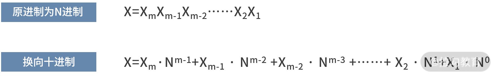
- 我们举个例子，十进制下的 2020。
它是十进制，所以我们基数便取 10；2020有 4 位数，根据上图公式，我们分别取(4-1)次方、(4-2)次方、(4-3)次方、(4-4)次方，再分别与每位数相乘，再相加取和。

- 再举个例子，二进制下的 10110，利用换基法转换为十进制。
它原是二进制，所以我们基数便取 2；10110 有 5 位数，根据上图公式，我们分别取(5-1)次方、(5-2)次方、(5-3)次方、(5-4)次方、(5-5)次方，再分别与每位数相乘，再相加取和。

2. 除余法（十进制向其他进制转换）
转向的目标进制为 N 进制，则以 N 为除数不断地做除法，将最后的商和之前的余数逆序串联在一起，就是最终的结果。
例如，十进制的 19 转换为二进制的过程如下图所示：
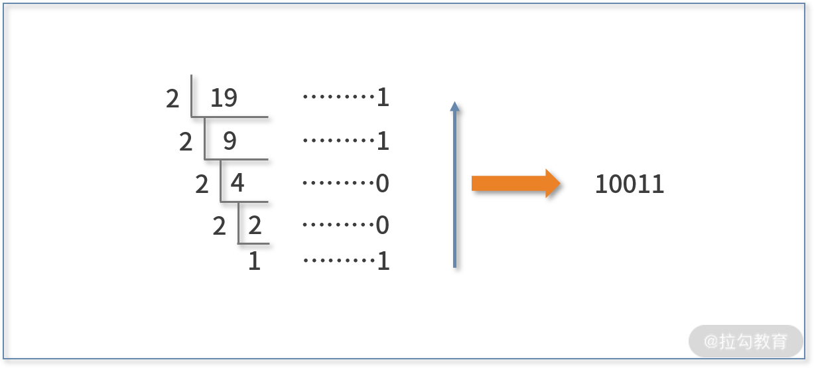
用 19 对 2 做除法得到余数 1，再用商对 2 做除法得到余数 1，再用商对 2 做除法得到余数 0...直到商为 1 结束。最终，用最后的商（也就是1），和过程中所有的余数逆序串联在一起，就是最终的结果 10011。
值得一提的是，除余法除了适用于十进制向二进制的转换，也适用于十进制向任何数制的转换。例如，用除余法将十进制的 100，转换为八进制和十六进制的计算过程如下，得到结果分别是 0144 和 0x64。
我们可以给出个简单的证明，根据换基法我们知道某个数制 N 下的数字的十进制表示为：

其中，Xm、Xm-1、...、X1 分别为数字 X 在 N 进制下的每一位数字，也是我们要求解的目标。接着，我们可以计算 X 除以 N。
这样可以得到，当我们第一次对 N 做除法时，就可以得到商为 N 进制下的 XmXm-1Xm-2...X2，余数就是 X1，即： 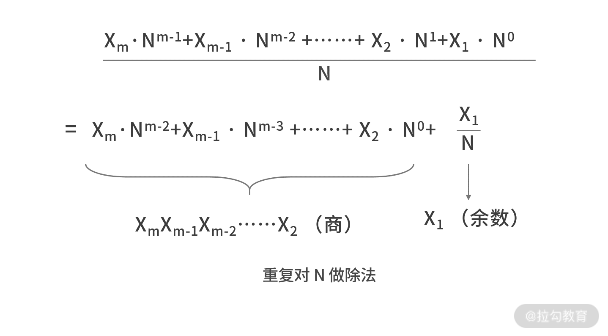 那么第一次除以 N，是如何得到商为 N 进制下的 XmXm-1Xm-2...X2，余数就是 X1 的呢？你可以通过下图这个 16 进制下的 5321 这个例子理解。 这里以 16 进制下的 5321 为例，可以更好地理解这一过程。如果不带入具体数制下的数字，你也可以通过公式推导出来，只是不那么容易理解，不过你自己也可以尝试。
接着同理，我们再用上一步的商 XmXm-1Xm-2...X2 重复对 N 做除法的过程，就会得到新的商为 N 进制下的 XmXm-1Xm-2...X3 ，余数为 X2 。再同理，重复上面的过程，你会发现得到的余数分别是 X1X2X3...Xm。
最后，我们把所有的余数做个逆序，就得到了 N 进制下的 X 的每一位，最终就能得到 XmXm-1Xm-2...X1 了。
3. 按位拆分法和按位合并法
对于八进制和二进制之间的转换，你可以利用十进制做个跳板。
除此之外，还有一个简单的按位拆分法，可以将八进制转为二进制。
你只需要把原来八进制中的每个数字符号，直接拆分为 3 位的二进制数字符号（必须保证是 3 位），再按顺序串联起来，就是最终结果。
我们以八进制下的 023 为例进行讲解：
- 由于十进制的 2 的二进制表示是 010；
- 十进制的 3 的二进制表示是 011；
- 最后，别忘加上二进制的符号 0b，并去掉首位 0。
则八进制的 023 的二进制表示就是 0b10011，如下图：

同理，二进制转换为八进制，可以采用每 3 位合并的按位合并法。
如下图，二进制的 0b10011 转换为八进制，则从后往前每 3 位合并：
- 最后 3 位是 011，它是十进制的 3，在八进制也用 3 表示；
- 从后往前的两位是 10（不够三位时补“0”则为 10），它是十进制的 2，在八进制也用 2 来表示；
- 别忘加上八进制的符号 0o。
则最终八进制的结果就是 0o23 或 023。

对于十六进制和二进制之间的转换，也可以采用按位合并和按位拆分的方法，区别只是在于需要按4 位进行合并或拆分。
例如下图，十六进制的 0x1a 转换为二进制，由于 1 为 0001，a 为 1010，串联在一起之后，二进制的结果就是 0b11010。
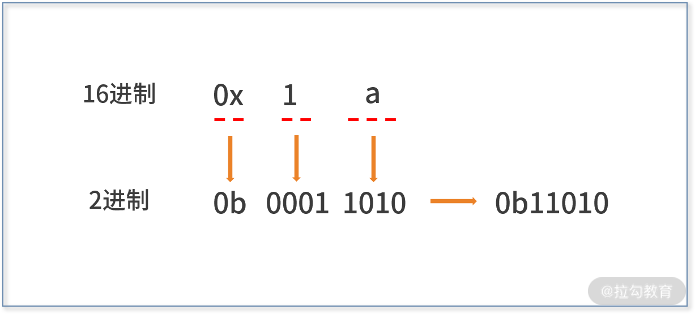
同样地，二进制的 0b1011101 转换为十六进制，从后往前每 4 位合并：
- 最后 4 位是 1101，它是十进制的 13，在十六进制表示为 d；
- 往前的几位是 101，十进制和十六进制都用 5 来表示；
- 别忘加上十六进制的符号 0x。
则最终十六进制的结果就是 0x5d。

为何八进制与二进制的转换是按照 3 位数合并、拆分，而十六进制与二进制之间则是 4 位数呢？本质原因是在于 2³=8 和 2⁴=16。根据这表达式可以看出，二进制中的 3 个 bit（位），恰好可以表示 0～7 这 8 个数字。因此，按照 3 位合并，就可以从二进制转化到八进制了。同理，按照 4 位合并，就可以从二进制转化到十六进制了。
而八进制与十六进制之间的转换，就不适用按位合并和按位拆分的方法了，你可以以二进制或十进制为跳板，进行两者之间的转换。
4. 数制转换图
我们总结一下，对于一般的数制之间转换，我们喜欢以十进制来作为跳板。
其他数制向十进制的转换方法是换基法，而十进制向其他数制转换的方法是除余法。
特别地，对于程序员经常关注的二进制、八进制和十六进制之间，它们又有一些特殊的转换方法。二进制向八进制或十六进制的转换，可以采用按位合并法；八进制或十六进制向二进制的转换，可以采用按位拆分法。
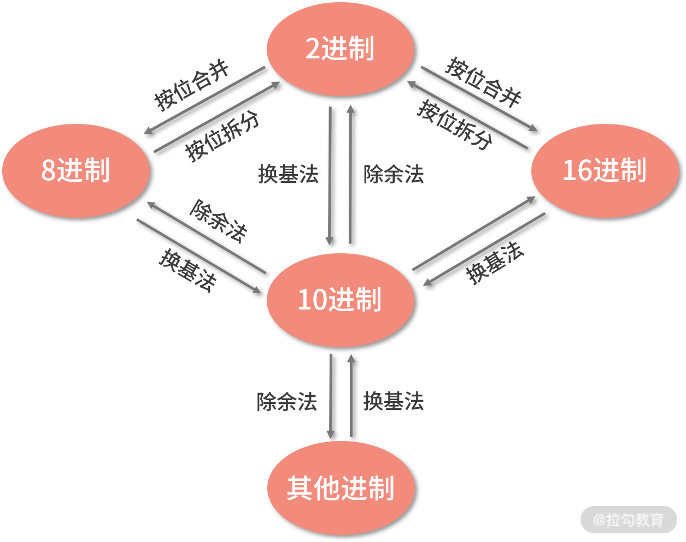
数制转换方法图
数制转换与编程
在编程的时候，利用对不同数制及其转换的性质，往往能让很多复杂问题迎刃而解。最常见的就是二进制下的运算，看下下面的例题。
【例题】判断一个整数 a，是否是 2 的整数次幂。
解析：如果是十进制，判断一个数是否是 10 的整数次幂，只需要看这个数字的形式是否为一个“1”和若干个“0”构成。例如，一个“1”和两个“0”构成“100”，它是 10 的 2 次幂；一个“1”和 4 个“0”构成“10000”，它是 10 的 4 次幂。
因此这个题目的解法就是，把 a 转换为二进制，看看 bin(a) 的形式是否为一个“1”和若干个“0”构成，代码如下：
a = 8
b = str(bin(a))
total = 0
for i in range(2,len(b)):
total += int(b[i])
if total == 1 and b[2] == '1':
print 'yes'
else:
print 'no'
我们对代码进行解读。
- 第 1～2 行，变量 a 为待判断的整数；变量 b 是 a 的二进制形式，并且被我们强制转化为 string 类型，这样 b 的值就是 0b1000。
- 如果形式为一个“1”和若干个“0”，则需要满足以下两个性质：第一，首位为“1”；第二，所有位加和为“1”。
- 在代码中，第 4～6 行，我们计算了所有位数的加和，并保存在 total 变量中。
- 在第 8～11 行，我们根据两个性质，对结果进行判断，并打印 yes 或者 no。
我们还可以利用位运算的“与”，来判断二进制数字 x 的形式是否为一个“1”和若干个“0”。判断的方法是，计算 x & (x-1)，如果结果为 0 则是，如果结果非 0 则不是。这样我们可以得到更简单的实现代码，代码如下：
a = 80
if a & (a-1) == 0:
print 'yes'
else:
print 'no'
其中涉及关于位运算的知识，我会在下一个课时进行详细剖析。
小结
数制是数字的基础，也是计算机的基础。信息时代的到来，让二进制被广泛应用，这主要是因为电路中的开关只有接通和切断两种状态，二进制的运算也称为位运算。
计算机的数据存储单位便体现了数制的应用，计算机中的数据存储单位常常用 Byte（字节）或 bit（位）。
bit 是表示信息的最小单位，叫作二进制位，一个 bit 等于一个二进制数。一个十进制的数的比特要换成二进制看，比如十进制 31 换二进制是 11111 是 5 个 bit，32 换二进制是 100000 是 6 个 bit。而 Byte 叫作字节，用于表示计算机中的一个字符，是计算机文件大小的基本计算单位，1 Byte = 8 bit（也写作 1B = 8b），它采用了 8 个 2 进制位。
在本课时中，我们学习不同数制之间的转换方法，包括换基法、除余法、按位拆分法和按位合并法。其中的换基法和除余法，是关于十进制的转换；而按位拆分法和按位合并法，则是关于二进制的转换。
在学习过程中，你会发现八进制和十六进制采用的按位合并法，更像是对二进制的压缩表示。八进制或十六进制的一个位，可以表示出 3 或 4 位的二进制数字。因此，用八进制或十六进制来表示二进制会更为方便。
02 逻辑与沟通，怎样才能讲出有逻辑的话？
你好，欢迎来到第 02 课时—— “与”“或”“非”：怎样才能讲出有逻辑的话？
我们都知道，语言沟通的背后是说话人逻辑思维的过程，单句与单句间、事件与事件间，都是靠关联词联系起来的，所以这节课我将从数学逻辑的角度，向你论述语言沟通背后的原理。
我将先向你介绍这一课时的根本思维原则 —— MECE 原则，再从“与”“或”“非”“异或”，以及“文氏图”这些运算方式出发，带你深入剖析沟通表达中的关联词。
从日常沟通看逻辑
在日常的沟通中，代表逻辑关系的词汇有很多，例如“而且”“或者”“但是”“如果...那么...”“因为...所以...”等关联词。
在我们使用这些词汇的时候，其实都是在表达事件之间的逻辑关系，如果你的逻辑是混乱的或者是不清晰的，就会出现关联词乱用的情况，从而造成沟通效率低下，甚至传递错误信息。
我们先来看一个例子，事情背景是某个系统需要从 A 环境迁移过渡至 B 环境，大家可以注意一下这段话有什么表达不妥之处。
“为了保证系统的稳定过渡，并且保证在过渡期，各个使用方的需求正常迭代，因此系统拟定共分为三期：过渡期、实验期、切换期。其中，过渡期采用某技术，保证数据系统打通；实验期通过 AB 实验，验证流程正确。”
从字面来看，我们能脑补出说话者要做什么事情，以及做这些事情的目的和方法。但是，从逻辑的视角来看，上面一段话至少包含了以下几个问题：
- “保证系统的稳定过渡”和“在过渡期内，各个使用方的需求正常迭代”，这二者的语意是包含关系，并不是并列关系，用 “并且” 进行连接，不合理。
- 为了保证系统的稳定过渡，因此需要分为三期。这里构不成因果关系，用 “因此” 进行连接，不合理。
- 过渡期怎样怎样，实验期怎样怎样，切换期呢？丢了一个重要环节，不知道需要做什么事情。
这些问题看似是语文问题，实际是背后思考的逻辑问题。
而逻辑思维对于程序员的代码编程能力非常重要，所以接下来我将向你介绍“MECE 原则”，帮你提升逻辑能力，MECE 原则非常重要，它将贯穿整个课时内容。
MECE 原则，提升逻辑思维水平
MECE 原则（Mutually Exclusive Collectively Exhaustive）的中文意思是“相互独立，完全穷尽”，简而言之，能够做到不重叠、不遗漏，兼顾排他性和完整性。
MECE 原则是麦肯锡提出的一种结构化思考方式，无论是报告撰写，提案演讲，业务分析，它是一种很好的思维方式。
它就像是切比萨一样，一个大比萨，用 4 刀切成了 8 份，每一份之间彼此不重叠（排他）；所有的小比萨不遗漏（完整）地合在一起，又还原了大比萨。

我们来看个例子，公园的票价问题。公园的门票价格是 20 元，优惠票包括了老人票和儿童票。价格制度为：
- 不到 10 岁的儿童免费；
- 10 岁以上的未成年人半价；
- 60 岁及以上的老人免费；
- 其他成年人无折扣。
我们用 MECE 原则来看一下这里的定价制度，就会发现这个制度不满足“不遗漏”“不重叠”的要求。比如，这让 10 岁的小琳很尴尬，她到底是算不到 10 岁免费呢？还是 10 岁以上未成年的半价呢？至少，从上面的描述是看不出来的。
用程序语言来看，上面价格对应的代码就是：
org_price = 20
age = 10
if age < 10:
discount = 0.0
if age > 10 and age < 18:
discount = 0.5
if age > 60:
discount = 0.0
if age >= 18 and age < 60:
discount = 1.0
final_price = discount * price
显然，当 age 为 10 的时候，程序不会走任何一个策略分支，于是代码会出现错误。
在解决类似的逻辑问题时，一定要注意所有边界值的可能性。原则上，每个可行值（尤其是边界值）能且只能落在一个策略分支中。
一个常用的分析方法就是画线法，如下图所示。画一根数轴，代表所有的可行值，再使用 if 语句分解问题，空心点表示开区间，实心点表示闭区间。

画线法
逻辑运算：“与”“或”“非”“异或”
接着我们来深入到逻辑的运算，首先看一下命题的概念。
命题是一个描述客观事物的陈述，它包含了正确或错误两个可能性。
- 如果命题正确，我们一般用 true 或 1 来表示；
- 如果命题错误，我们一般用 false 或 0 来表示。
有了命题，我们就可以对命题和命题进行逻辑计算。这很像有了数字之后，就有了加减法。逻辑运算的对象是命题，它根据命题的真假进行计算，并且最终再输出真或者假，作为结果。
逻辑的运算，通常有“与”“或”“非”，以及叠加在这之上的“异或”。
1.最基础的“与”“或”“非”。
- 逻辑 “与”—— A 并且 B，在 Python 语言中也记作 A and B。只有命题 A 和命题 B 同时为真的时候，A and B才是真，否则都是假；
- 逻辑 “或”—— A 或者 B，在 Python 语言中也记作 A or B。命题 A 或者命题 B 有一个为真的时候，A or B 就是真，否则为假；
- 逻辑 “非”——不是 A，在 Python 语言中也记作 notA。命题 A 为假的时候，not A 就是真，否则为假。
值得一提的是，在不同学科、不同编程语言中，对于逻辑的“与”“或”“非”的符号表示并不相同，可能的符号有：

虽然符号不一样，但是计算结果都是一样的。
2.从文氏图看“异或”
“异或”在 Python 语言中也记作A^B。命题 A 和命题 B 的真假不同时，则 A^B 为真，否则为假。一个好的记忆方式是，异为 1，即 A 和 B 的真假性相异（不同），则结果为 1（为真）。
一个形象判断逻辑关系的方法是，便是文氏图，如下图所示，假设在文氏图中有两个命题 A 和 B，用椭圆形的区域表示一个命题为真的地方，而椭圆区域外则表示这个命题为假的区域。
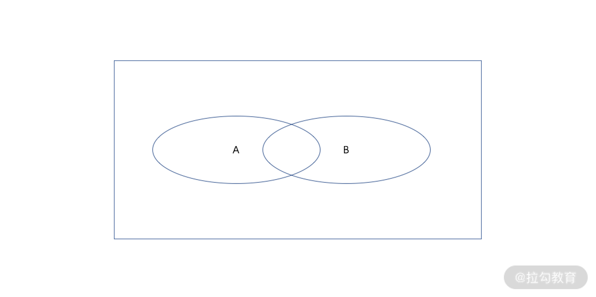
文氏图
通过分析两个命题的椭圆形，在图中的位置关系，就能得到每个运算的结果。接下来，我先用文氏图演示“与”“或”“非”的运算过程，最后再向你讲解什么是“异或”。
- “与” A and B
根据逻辑运算的定义，如下图所示，A and B 为真的区域就是，椭圆 A 和椭圆 B的交集（蓝色区域）。

A and B 文氏图
- “或” A or B
如下图所示，A or B 为真的区域，便是椭圆 A 和椭圆 B 的并集（蓝色区域）。

A or B 文氏图
- “非” not A
如下图所示，not A 为真的区域，便是椭圆 A 以外的部分（蓝色区域）：
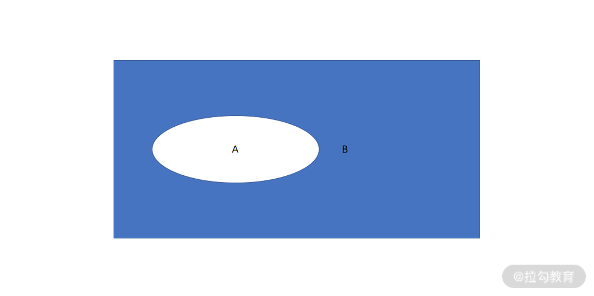
not A 文氏图
- “异或” A^B
A^B，表示 命题 A 和命题 B 的真假不同，也就是真假相异，故是下方文氏图的蓝色区域。
A^B 文氏图
你会发现，“A^B”的蓝色区域，就是上面“A or B”区域减去“A and B”区域，即A^B = (A or B) - (A and B)。
讲完命题的逻辑运算后，我们进入工作实践场景，向你讲解工作中的命题逻辑处理问题。
逻辑处理：MECE 原则与代码
在工作中需要处理命题的逻辑关系时，一定要在满足上文提及的MECE 原则的基础上进行代码开发。
1.不遗漏原则
当你在处理逻辑关系时，不管有多少个可能的 if 语句，哪怕你觉得你已经在 if 中穷举了所有的可能性，也尽可能用else进行一个兜底，这是对代码潜在风险的规避。
例如，下面一段代码从结构来看，它虽然没有错误，但不利于解读、维护。
def fun(x):
if x == 1: #命题A
return 1
if x == 2: #命题B
return 2
不管命题 A 和命题 B 是否包含了全部的可能性，你都需要用个else进行兜底，因此更好的方式是：
def fun(x):
if x == 1: #命题A
return 1
if x == 2: #命题B
return 2
else: #兜底
return 0
2.不重复原则
就说明每个可能的输入，只能进入唯一 一个策略分支，否则就有可能造成结果不受控制。这就说明，在代码开发中，尽可能少用多个 if 语句，而改用 elif 语句。
elif 是 else if 的合体，功能上他们二者完全可以互相替代，从逻辑的表达来看，elif 更像是对 if 的兜底。
例如下面一段代码，风格就有些不好，容易引起不必要的代码风险。
def fun(x,y):
a = 0
if x < y: #命题A
a = 1
if x >= y: #命题B
a = 2
else: #兜底
a = 0
return a
不管你的命题 A 和命题 B 是否有交集，你都需要尽可能少地使用多个并列无关的 if 语句，而改用 elif，例如：
def fun(x,y):
a = 0
if x < y: #命题A
a = 1
elif x >= y: #命题B
a = 2
else: #兜底
a = 0
return a
从数学思维和代码角度，深入了解“逻辑”后，我们重新回到日常沟通中。
从逻辑回归到沟通
我们最开始提到了很多日常沟通的词语，例如 “而且” “或者” “但是” “如果...那么...” “因为...所以...”等关联词。
那么，这些关联词跟我们这个课时讲到的 “与” “或” “非” 有什么关系呢？我们结合逻辑运算和文氏图进行分析。
1.“而且”与“或者”
“而且”，顾名思义，就是 A and B。例如，小琳很漂亮（A），同时小琳很聪明（B）。经过逻辑运算后，得到小琳漂亮且聪明（A and B）。
“或者”，顾名思义，就是 A or B。例如，这个暑期，小琳打算去海南，否则小琳就打算去辽宁。经过逻辑运算后，得到这个暑假，小琳打算去海南或者辽宁（A or B）。
你可以发现“漂亮”和“聪明”，“海南”和“辽宁”都是相互独立的。所以你在使用“而且”和“或者”沟通时，要注意命题 A 和命题 B 也最好是相互独立的，也就是 A 与 B 应符合上文讲的 MECE 中的不重复原则。
下面我将通过三个反例说明问题：
- 例1，小琳很聪明漂亮（A），而且小琳很聪明（B）。
虽然语义上无误，读者也能理解，但从沟通的角度来看，这句话非常不妥帖。
- 例2，为了保证系统的稳定过渡（A），并且（即而且）保证在过渡期内，各个使用方的需求正常迭代（B）。
此时，命题 A 显然包括了命题 B，与例1 如出一辙。
- 例3，小琳是东北人（A），或者小琳是北方人（B）。
“北方”包含了“东北”，相互重复，在表达上绕了一个大弯，仅表达小琳是北方人。
通过这三个反例我们可看出，缺乏逻辑性的关联词，虽然不会影响语义表达的正误，但却会让沟通变得冗杂，不够直接明了，从而降低了沟通效率。
所以，沟通表达与逻辑思维有着直接关系。接下来，我将讲解“因为…所以…”和“虽然…但是…”这对更体现逻辑思维的关联词，也请你好好揣摩一下这对关联词之间的相互逻辑关系。
2.因为……所以……
“因为...所以...”，是一种逻辑推理，即由 A 推导出 B。
“因为...所以...”的文氏图表达如下图所示，A 包含于 B，B 包含了 A，在 A 区域内，也一定会在 B 区域内，因为存在于 A，所以存在于 B，这是个由“小”推导出“大” 的过程。

“因为...所以...”文氏图
在使用“因为...所以...”沟通时，一定要注意命题之间是否具备了充足的因果关系。否则，就会出现让人反感的逻辑错误。
先举一个恰当的例子：
因为小琳聪明漂亮（命题 A），所以小琳很漂亮（命题 B）。
可以看出命题 A 和 命题 B 两者有充足的包含和被包含的因果关系。
下面再举一个反例：
因为要保证系统的稳定过渡，并且保证在过渡期内，各个使用方的需求正常迭代，所以系统拟定共分为三期：过渡期、实验期、切换期。
长话短说，即“因为要保证稳定过渡，所以拆分为三期”。
那么要保证稳定过渡，就必须拆分为三期吗？显然并不是，拆分为四期、五期，全凭开发者自己的设计方案，都是可以的，显然这两者不具备强烈的因果关系。
3.虽然……但是……
再来看看“但是”，一般也用作“虽然...但是...”，它表示的是一种转折关系，比如：
虽然小琳学习成绩不好，但她一直很努力。
在人们的潜意识中，成绩好的人一定是努力的人，这就是“因为她成绩好（A），所以她是个努力的人（B）”的默认关系；反之，努力的人（B），学习成绩不一定很好（非 A），这就构成了转折，于是得到“虽然小琳成绩不好（非 A），但是她很努力（B）”。
在这一例子的逻辑过程中，你会发现 “虽然（非A）…但是（B）…” 这个关联词与 “因为（A）...所以（B）...” 刚好相反。
正如下图所示，“因为A，所以B”，也可以用作描述“虽然非A，但是B”。
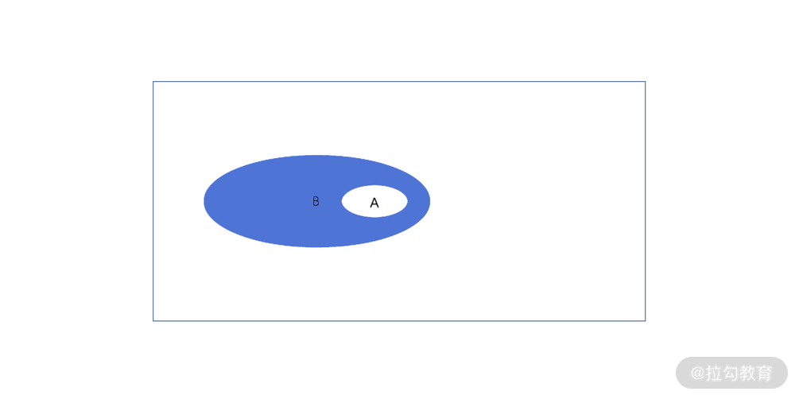
“虽然...但是...”文氏图
所以我们在验证“虽然…但是…”这个关联词是否使用妥帖时，可以先将其转为因果关系，我会通过以下几个例子向你演示这一过程。
- 虽然小琳不是单身（非A），但是她是个东北人（B）。
将这句话转为因果关系，则有“因为小琳是单身（A），所以她是东北人（B）”。显然，这里就构不成任何的因果关系了。（✖️）
- 虽然小琳成绩不太好（非A），但是她并没有自暴自弃（B）。
将这句话转为因果关系，则有“因为小琳成绩好（A），所以她没有自暴自弃（B）”。显然，这里的因果性很强。这里的“但是”使用得非常恰当。（☑️）
- 虽然小琳不是单身（非A），但是她的成绩依旧很好（B）。
将这句话转为因果关系，则有“因为小琳是单身（A），所以她的成绩好（B）”。这里的因果性就很弱了，也因此“但是”使用得并不完全恰当。（✖️）
在日常生活中，很多时候的“但是”是被误用的，虽然日常沟通中，不必过度关注这些瑕疵，但在书面语的环境下，就会不太妥帖。
小结
“怎样才能讲出有逻辑的话？”学完这一课时的你，对这个问题肯定有了自己的答案，并对“逻辑”与“沟通”之间的关系有了更深的理解。
其实，在日常沟通中的很多场景下，逻辑词的使用并没有那么高的要求，人们往往会根据自己的用词偏好去说话，也不必过度吹毛求疵。
但是，当你掌握了很好的逻辑思维方式后，你与人沟通表达时，便会更有说服力，沟通效率也会大大提升；分析事物问题时，也会更加周密完善，一针见血。
比如，当你站在逻辑的视角来重看上文的这些例子时，你就会发现很多逻辑并不规范，尤其是使用了文氏图这一工具之后，你便能一针见血地看到本质，清晰地分析出这些逻辑关系背后的漏洞。
03 用数学决策，如何规划好投入、转化和产出？
在工作和生活中，我们经常会说“这样做，划不划算？”其实这是做每个决策时都会面临的一个问题，也就是心里得有个“小算盘”。
那么怎么我们应该怎么“算账”呢？算完账后又应该如何决策呢？
下面我会先讲一个我的算账定律，带你在麻将局中认识算账的关键三要素：系统、指标、兑换；然后再带你回到学生时代的“补习场景”，认识转化漏斗分析法，看到外部力量向指标的转化路径；最后，还是回归各位程序员的现实工作场景中，通过三个案例看到不同的转化路径，深入理解“投入”“转化”“产出”三者的关系。
本课时的内容梗概如下图所示，可供你参考学习。
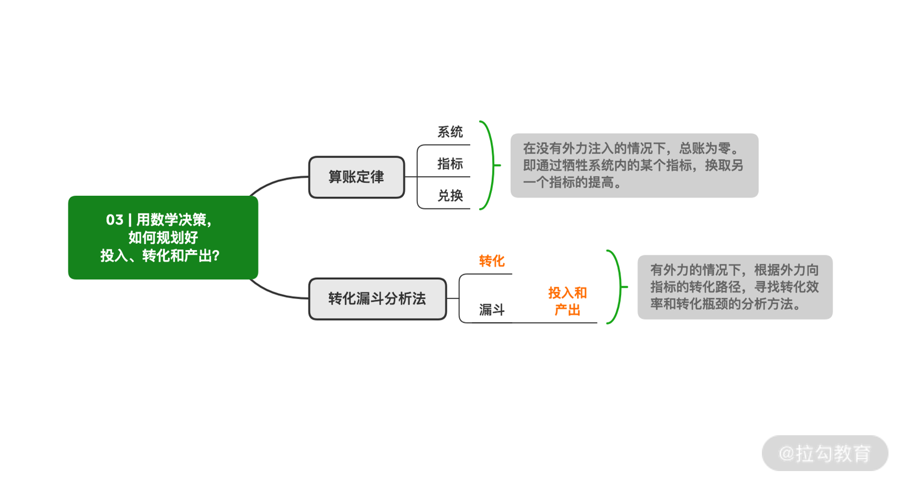
公瑾的算账定律
要算账，你需要先明确算账的对象，也就是你在算谁的账。虽然是同一件事情，但对象不一样，可能导致结果的截然不同。
假设你与好友大聪明、大漂亮、大迷糊一起打麻将，4 个小时的激烈斗争后，你们的盈亏账单如下：

假设计算的对象是你，那么会得到总盈亏为 100 元，胜率 40%，平均每局盈利 2 元。如果计算对象是你们四个人，那么会得到总盈亏为 0 元，平均每局盈利 0 元。
你会发现，在整个“麻将局”这一大的系统下，即使每个人的盈亏不同，但整体看这个“系统”的总盈亏情况是 0，也就是不盈不亏。
所以接下来，给你介绍一个算账定律：对于一个没有外部力量作用的系统，它的总账为零。就好比，将你们 4 个人看作一个系统，打麻将只是系统内部的动作，整个系统并没有受到任何来自外部力量的作用，因此总账必然为零，这与物理学中的能量守恒定律很像。
相反，如果一个系统受到了外部力量，那么总账就可能不是零了。 就好比，把你一个人看作一个系统，再把大聪明、大漂亮和大迷糊 3 个人看作是另一个系统，然后在系统和系统间的相互作用下。最后，你的系统盈利了 100 元，而另一个 3 人合体的系统亏损了 100 元。
关键要素：系统、指标和兑换
利用算账定律时，你需要把握好以下几个关键要素，分别是系统、指标和兑换。我们以大漂亮的学习成绩为例展开讨论。
系统，就是一个个对象，它包括了你研究的目标对象，也包括了影响你研究目标的外部系统。对于大漂亮的学习而言，大漂亮就是一个系统，老师也是一个系统。
指标，是评价系统运转结果的数学变量，即总账。例如，对于大漂亮的系统而言，指标包括但不限于考试成绩、生活愉悦度、日均自习时长、日均参加补习班的时长、日均娱乐时长等。
兑换，是个动作，也是个结果，即你在用什么来换取什么。算账定律（算账版的能量守恒定律）说到，对于一个没有外部力量作用的系统，它的总账为零；反过来说，要想指标（总账）有提高，就需要借助外部力量，并把它兑换为指标的提高。
我们以大漂亮想要提升考试成绩为例，通过两种方式来看看系统情况：
- 第一种方式是去参加补习班。此时，大漂亮是一个系统，补习班老师是另一个系统。大漂亮系统，在借助补习班老师系统的外部作用，来兑换出考试成绩的提高。
- 而另一个方式是减少娱乐时长，用来增加自习时长。此时大漂亮系统没有接收外力，那么总账还是零吗？依然是。大漂亮成绩提高了，但是娱乐时间变少，导致生活愉悦度下降，这是一种系统内部的兑换。
对这个大漂亮的例子，我们可以得出以下结论：
- 在外部力量改变的时候（例如，从参加大糊涂补习班，更改为参加小天才补习班），会让系统的总账变好。即生活愉悦度不折损的基础上，提高学习成绩。
- 在外部力量不改变的时候，系统总账不变，但可以通过系统内部兑换，提高某个指标。即减少娱乐时长，增加自习时长。通过降低生活愉悦度，兑换出学习成绩的提高。对于大漂亮而言，有得有失，总账不变。
这两种方式的结论分别如下图所示：
转化漏斗分析法
从上面“打麻将”和“大漂亮提升成绩”的例子，你会发现纯内部力量的调整，只是左手倒右手的兑换，而让指标变得更好的方式是，要借助外部力量。
有了外部力量之后，就要开始分析外部力量作用在系统中的效率，这就需要转化漏斗分析法。
- 转化，是一个动作，表示的是外部力量转化为指标提高的动作过程。
- 漏斗，代表了效率，即转化过程的投入和产出分别是多少。
转化漏斗分析，能够辅助你看清转化路径，并寻找瓶颈予以突破。

我们继续以大漂亮参加补习班为例。假设大漂亮每天参加 3 个小时的补习班学习，最终学习成绩获得了 10 分的提高。那么问题来了，这 3 小时的补习转化为 10 分的提高，转化路径是什么？转化效率如何？是否还有提高的空间呢？
带着这些问题，我们通过对大漂亮学习的无死角跟踪。我们发现，补习时长转化为分数提高的路径为：
- 投入补习的时间，可以拆分为认真听课的时间，和不认真听课（玩手机、打瞌睡）的时间。
- 认真听课的时间里，会带来掌握知识点的提高。
- 掌握的知识点，会换取考试成绩的提高。

根据转化路径，我们就能计算出转化效率。下表是大漂亮的转化效率表：

假设大聪明也采取了上补习班提升成绩的方式，我们补充下大聪明的转化效率表，和大漂亮的转化效率对比观察。
根据对比就会有如下的数据洞察：
- 72% > 56%，所以大漂亮上课更加认真听讲；
- 3.85% < 6%，大漂亮虽然认真听课，但她没有很好地理解老师所讲的知识点。显然，大漂亮的理解和学习能力需要提高；
- 考试技巧方面，大漂亮和大聪明是一样的，即掌握的知识点转化为分数的效率都是 2分/知识点。
但整体看下你会发现，最终大聪明的转化效率还是要更高的。同样的补习时长，大聪明的成绩提高更多，仅仅因为在转化漏斗的过程中，大聪明在“掌握知识点”这一步做得更好。
所以据此，我们可以给出大漂亮如下学习建议：
大漂亮需要提高自己对知识点的吸收和理解能力。对于大漂亮而言，这是提高成绩最有效的方式。假设大漂亮也能以 6% 的转化率吸收知识，那么大漂亮会得到 130×6%×2 = 15.6 分的提高，这相当于她现在 15.6÷2÷3.85%÷72% = 281 分钟的参加补习时长投入！
虽然在真正的学习生活中，没有人会像这样计算自己工作、学习的转化漏斗情况，但这种思维方式却会影响我们做事风格。每个人的学生时代，班里都会有个超努力但学习总是中游的同学，他们其实就是转化漏斗出了问题，仅想着扩大自己的底部橙色区域的精力和时长，没想着如何提升转化效率，也就是精力没用到刀刃上。
而一个做事风格高效的人，心里是有自己的转化漏斗的，尤其在复杂的工作业务中。他会用这种思维去理解许多事情的本质和原理，抓住关键要素，认清系统、指标、兑换，并规划好投入、转化、产出，将复杂过程简单化。
案例 程序员工作中的“算账”场景
讲完了算账定律和漏斗分析法，我们给出一些程序员工作中可能遇到的算账案例。
假设某头条 App 有一个推荐系统的技术团队，负责用户的 PV 指标（page view 页面点击量），它的基本思路如下图所示。长大后的大聪明、大漂亮、大迷糊均在这一团队中，我们看下他们各自的表现。

案例 1 没有外力，系统内部指标转化
假设长大后的大聪明是该团队的其中一个推荐算法工程师，他设计的推荐系统方案是：对每个用户，利用 CTR（Click-Through-Rate点击率）模型，预测用户点击文章的概率。接着，只推荐点击率大于阈值（设置为 0.8）的文章给用户，并形成首页的 feed 流。
有一天，大聪明调整了点击率阈值，由 0.8 提高到了 0.9，其余影响因素都没有变，你来帮大聪明算算账，看他这样的动作对这个推荐系统是否有帮助。
分析：先看一下我们的分析对象，也就是系统。此时，我们的系统可以是这个推荐系统。指标自然就是这个系统在用户身上产生的 PV。大聪明的动作是调整了点击率阈值，这很显然是个系统内部的改动，并没有外部力量注入这个系统。接下来我们对比分析一下两种不同阈值的转化路径。

我们的 App 总共有注册用户 100 人，其中 50 人会在统计数据的观察期间内打开过 App，我们的库存文章总量为 1000 篇。
- 当设置阈值为 0.8 的时候，总共的曝光是 500 人次，最终产生的阅读量是 420 人次；
- 当阈值提高设置为 0.9 的时候，符合 CTR 阈值门槛的文章必然会减少。
因此，曝光量由 500 人次降低到 470 人次。
但运气比较好，提高了阈值之后，由于文章匹配度更高，反而带来了更多的页面点击量（430 人次）。对于这个推荐系统而言，在没有外力的情况下，通过折损了曝光量，兑换到了 PV 的提高。
这个兑换是否合理，或者说是否划算，可能要综合公司业务的现状来考量。
案例 2 借助外力，指标提升
长大后的大漂亮是其中的一个前端工程师，他从 App 前端交互上，优化了一些功能上的体验，例如 App 闪退、文章打开缓慢等问题。假设其余的影响因素都没有变化，我们再来帮大漂亮算算账吧。
分析：我们的系统、指标、转化路径都没有发生改变。但由于修复了系统 bug，已经不再是系统内部的改动了。这个推荐系统有外力注入其中，而这个外力就是大漂亮的代码。此时转化路径的指标就变成了如下图表所示。

当 bug 修复之后，注册用户数、打开 App 用户数、文章的曝光量都没有改变。但是因为产品交互体验变好了，用户点击文章的 PV 由 420 提高到了 430。
对于这个推荐系统而言，在有外力的情况下，外力换来了 PV 的提高。这个功能迭代就是合理的、划算的，毫无疑问是有价值的。
案例 3 借助外力，指标提升
长大后的大迷糊是其中一个建模工程师，他从 CTR 模型上进行优化，让 CTR 模型的预估准确率大幅提高。随后，他使用模型的方法是，给用户曝光模型预估 CTR 最高的 500 篇文章。假设其他影响因素都没有变化，你再来帮大迷糊算算账吧。
分析：此时 CTR 模型的准确率被提高了，这个推荐系统就又有了外力注入。而这个外力，就是模型哥做的 CTR 新模型，此时转化路径的指标就变成了下方图表所示。

当 CTR 模型准确率提高后，注册用户数、打开 App 用户数、文章的曝光量都没有改变。但是因为模型更准了，用户曝光的文章跟用户的兴趣更匹配，PV 由 430 提高到了 450。
对于这个推荐系统而言，在有外力的情况下，外力换来了 PV 的提高。这个功能迭代就是合理的、划算的，毫无疑问是有价值的。可见大迷糊，不仅不迷糊，反而很有业务能力。
还是那句话，转化漏斗分析法的应用是非常灵活的，以上三个案例仅仅是想向你展示这个思维在工作中的应用，工作中具体如何实践“转化漏斗分析法”，还是得看你的理解和思考。
小结
这一课时，我们重点讲述了两方面的内容，一是算账定律，另一个是转化漏斗分析。算账定律告诉我们，在没有外力注入的情况下，总账为零。即通过牺牲系统内的某个指标，换取另一个指标的提高。转化漏斗分析是在有外力的情况下，根据外力向指标的转化路径，寻找转化效率和转化瓶颈的分析方法。
这两方面的思维，非常利于我们看到生活中很多事情的本质。
例如，大迷糊想赚更多钱。一种方法是增加工作时间，利用休息时间自己“琢磨”技能，相当于大漂亮的“通过自习提升成绩”，这就是在没有外力的情况下系统内部的动作。
另一种方法是，大迷糊学习拉勾教育的课程，在专业大佬的指引下，找到能力提升通道，提升自己的溢价空间，这就是一个注入大迷糊系统的外部力量。利用这个力量，大迷糊在同样的时间内，换来了更多的收入回报。很明显，通过外部力量换来的指标提高，才是可持续的、良性的指标增长方式。
当然，无论是哪种方式，只要是在不断地提升自我、挑战自我，都是可取并让人敬佩的。 只不过“方法比过程更重要”，这一课时的主题是“如何规划好投入、转化和产出”，希望你也能将这一思维应用到生活中，找到达到目标的最优方法。
你在工作、生活中有哪些运用到转化漏斗分析法的例子？或者你对此有什么感悟和想法？欢迎在下方留言区与大家分享。
04 万物可数学，经典公式是如何在生活中应用的？
在我们的生活和工作中，有大量的数学应用场景，一些简单的经典公式会在我们的生活中被反复验证、体现。对于经典公式的理解，能增强你的数据 sense，更能帮助你在遇到问题时，迅速找到解决思路。
这一课时我将列举四个脑洞比较大，却又妙趣横生的例子，向你展示数学与万物之间的巧妙联系。
“数学无处不在”，可能学完这一课时，你就会理解为什么说“数学是一切科学之母”了，因为万物、生活、世界的本质就是由数学组成的，或者说可以用数学去解析表达。
正好下周就是双十一了，现在的你一定在各种优惠券和促销规则中与商家斗智斗勇，下面第一个例子我就分别从买家、卖家两个视角，看看这个钱到底应该怎么算？
双十一关于钱的计算
双十一期间，某商家的促销规则是：某笔订单消费满 200 元，可以获得 100 元的代金券，代金券可以在下次消费中使用，下次使用时的规则是，消费满 300 元，直接抵扣 100 元。
那么这样的促销活动规则，折扣率到底是多少呢？
大迷糊认为消费满 200 元获得 100 元代金券，这样折扣率应是 100÷200，就是五折。如果你也是这样认为，那么就中了商家的圈套了。
而大聪明发现为了花出去这个 100 元代金券，需要先消费满 200 元，再第二次消费满 300 元。总账算下来为，商品总价值 500 元，实际花费 400 元，也就是打八折。商家给予的优惠并没有看起来那么多，而就是这样依旧吸引了一批又一批用户“剁手”。
这个例子是以消费者的视角来计算的折扣率，我们还可以从商家的视角来分析商家的投资回报率 ROI（ROI=增量的回报/增量的投入）。一般而言，ROI 的应用场景都跟钱的投资有关，可以定义“回报”为营业额，而“投入”为代金券核销的金额。
现在我们把 ROI 的问题拓展到一个实际的业务场景。假设大漂亮是某宝增长部门的工程师，最近接手的项目是在双十一给用户投放优惠红包。红包的种类有很多，比如满 399 元减 100 元、满 299 元减 50 元、满 199 元减 20 元等等。
在做好了系统开发工作后，大漂亮在用户的维度上，上线了灰度实验。即一半用户被随机地划到了实验组，享受红包优惠；剩下的另一半用户，被划分到了对照组，不享受红包优惠。实验过后的所有数据记录如下表，围绕 GMV（营收额），帮大漂亮算一下这次双十一投放红包的 ROI 吧。 根据 ROI 的定义式很容易得到，ROI=(80万-65万)/10万=1.5。
值得一提的是，如果回报定义为实际的营收额，ROI 一般不会小于 1。因为满减红包这样的投入，是不会被白白浪费的，每一笔投入一定会转化为核销，并计算在营收额中。换句话说，你不花满满减金额，也不会核销掉这 10 元的红包。
简单总结下，如果你负责某个“资源投入换产出”模式下的项目，例如投入补贴换营业额，那么业务指标上涨是显而易见的事情。毕竟对这个系统而言，是有资源投入的。此时，最关键的指标就是资源投入与业务产出的兑换效率，也就是资源的投资回报率 ROI。你的工作方向将会是，在算账体系下的 ROI 提高或优化的工作。
讲完“钱”后，我们再讲下“人”吧。
万有引力与好人缘
以太阳系为例，所有行星都围绕太阳运转，这就说明太阳的引力是最大的；对于一颗流星而言，没有什么天体在围绕它运转，也就是说流星的引力非常小。你可以很形象地认为：太阳的人缘特别好，几乎所有人都围着他转；而流星似乎人缘不太好，它身边几乎没有什么朋友。
 形象来看，“人缘”就是一种吸引，就好比物理学的万有引力定律一样，人缘好的人总是能形成自己的一个社交圈，被周围的人认可和关注，并形成一个个像是太阳系、银河系一样的关系网。
形象来看，“人缘”就是一种吸引，就好比物理学的万有引力定律一样，人缘好的人总是能形成自己的一个社交圈，被周围的人认可和关注，并形成一个个像是太阳系、银河系一样的关系网。
但万有引力定律是个物理科学概念，而“人缘”是个基于社会关系的人文概念，现在我们要从理性科学视角去看待“人缘”这一话题，我们能得到两者之间的联系吗？
首先，我们先回顾一下万有引力定律 (F=GMm/R2) 本身，再将其和“人缘”结合，对应起来看。
其中 G 是万有引力常量，M 和 m 分别为这两个物体的质量，R 是他们之间的距离。这个公式告诉我们，万有引力与质量呈正相关，与距离呈负相关。即质量越大、距离越近，引力也越大；反之亦然。
通常，优秀的人的人缘都不会太差，因为他们能给身边的人更多帮助，这就是你个人的质量 M 的体现；反过来说，你肯定也会更喜欢与你一样优秀的人做朋友，这就是你身边人的质量 m 的体现。
接着，好的人缘肯定需要去持续维系。维系的方法可以有，不定期地聚会叙旧、朋友圈的互动点赞、关于某个领域问题的讨论等等。如果长时间缺少维系，那就印证了那句俗话“有些人，走着走着就散了”，这就是你与你身边人的距离 R 体现。
可见，想要获得好的人缘，你需要做好下面几件事：
- 提高自己的质量（M）。比如多学习一些拉勾教育的技能培训课、多参加一些行业分析讨论会、多学习领域内的书籍教材，不断提升自己的能力、见识和视野。让自己更好的同时，也有能力去帮助身边的人。
- 可以选择性地交朋友（m）。交朋友不需要太广泛，因为人脉的维系也是需要投入时间和精力的。你可以多去结交那些对你有正能量的人，例如某个领域的大佬、工作中的前辈，甚至是学生时代的师兄师姐，以及能与你相互鼓励，共同进步的伙伴。
- 注意维系人脉热度（R）。交朋友并不仅仅是加个微信，见面能打个招呼，更应该是能有深度地去做一些精神层面的互动。与其“海内存知己，天涯若比邻”，倒不如朋友之间多走动，多有些互动交集。
你会神奇地发现，在万有引力定律中，万有引力 F 与距离 R 是负平方的关系。也就是说，距离对引力的影响比质量要更大一些。这就像生活中决定两人关系亲疏的因素，与两人各自的标签、身份、能力 （M、m） 有关；但更重要的是距离 R，也就是两人之间的互动深度和频率。所以，在成为优秀的人的同时，希望你更能注意多跟朋友走动、沟通。
我们的生活不过就是“钱”“人”，还有工作，接下来我们从数学角度看一下你应该如何安排工作时间。
修炼学习还是延时工作？
小学的时候，我们就学习过这样的公式：路程=速度×时间（S=vt）。
在匀速运动的场景下，速度 v 是个常量。时间越长，走得越远。然而在实际场景中，速度通常不是常量，而是关于时间的函数（它随着运动的时间而发生变化）。

速度 v 关于时间 t 的函数图
如上图所示，刚开始跑步，速度越来越快（红色曲线）；之后，速度就会稳定在一个值（蓝色曲线）；再到后来，速度就会变慢（紫色曲线）。这样在追求跑得更远时，你需要根据自己不同时期的情况，在速度与时间之间做一个平衡，甚至一个抉择。
这就像是刚刚毕业参加工作的职场小白，大漂亮，她在学习修炼（提升未来挣钱速度）和兼职挣钱（延长工作时间）之间，也需要做一个抉择。
不仅是职场小白大漂亮，某创业公司老板，大聪明，也会面临这样的抉择。这时需要先搞清楚到底哪个是影响你收入的关键因素（影响最大的），然后往这方向去投入就可以了。
我们就试着利用速度与时间公式 S=vt，来分析大漂亮和大聪明该如何支配业余时间。
如下表，假设大漂亮的日常工作月薪为 12k，每月周末兼职能挣 2k。若不兼职而去培训，一年后跳槽工资翻番，月薪达 24k，一个月薪就能抵过一年的兼职。所以技能（赚钱的速度）没有办法提高，投入再多时间去加班兼职，也是没用的。
 可见，当前影响大漂亮收入的关键因素是业务技能水平。她在技能培训上投入，获得工资涨幅的空间更大。这反映出，业务技能提升对于职场小白的重要性。
可见，当前影响大漂亮收入的关键因素是业务技能水平。她在技能培训上投入，获得工资涨幅的空间更大。这反映出，业务技能提升对于职场小白的重要性。
大聪明是初创公司老板，自身能力非常专业，这时候他再获得技能提升已经很困难了，就像对于理科状元，数学提升 5 分都是很困难的。而大聪明更好的选择是加班，为公司直接创造营收。如下表所示，通过加班，再算上基础工作，每个月共计能为自己带来 480k 的收入。 可见影响大聪明营收的关键因素是工作时长，他在时间上的投入，会更有可能获得收入的提高。
课后作业：在这里我只列出了他们某一时间点下的收入数据表，你可以尝试着去画出他们不同方案下的“挣钱速度关于工作时长的函数图”，并找到收入 S 区域。
画出后，你会联想到中学时的不同增长函数的函数图，以及高中物理的变速直线运动问题。
接下来最后一个案例，我将向你证明“努力进步”的力量有多可怕。
每天进步一点点问题
公务员行测题中，常常有这样一个经典题目：
某公司的营业额以每月 5% 的速度增长，多少个月后能翻倍？
A. 14 B. 16 C. 18 D. 20
- 大迷糊看到这个问题，不假思索地回答 D。他认为翻倍就是 100%，而每天 5% 的增长，所以 100÷5 = 20，而这样的计算是错的。
- 大漂亮老老实实列出公式，即(1+5%)n= 2，再利用计算器求出 n 约等于 14，选 A。
- 大聪明是个数学高手，他直接得到答案为，n=70÷5=14，选 A。
这个题的正确答案就是 A。对比他们的计算过程，大漂亮和大聪明虽然都得到了正确答案，但大漂亮的计算需要列方程，并借助计算器来求解。在行测考试平均 1 道题只有 1 分钟作答时长的高压环境下，大漂亮显然已经吃了大亏。
接下来我们从数学的角度来看一下这个问题。假设当前月的营业额为 a，既然每月增长 5%，那么第二个月（1 个月后）的营业额就是 a×(1+5%)。第三个月（2 个月后）的营业额又增长了5%就是 a×(1+5%)2。
因此，如果 n 个月后营业额翻倍为 2a，则有 a×(1+5%)n= 2a，即 (1+5%)n= 2。遇到 n 次方的幂运算，你第一时间想到取 log，这样就能得到下面更简单的表达式为 n×ln(1+5%) = ln2。
 接下来有一个很奇妙的定律，也是高中数学的基础知识，如上图所示：在 x 很小时 ln(1+x)≈x。题目里的 5% 是个很小的数字，这样就可以得到 n×ln(1+5%) = n×5% = ln2，ln2 = 0.69≈ 0.70（这个是 lnx 函数常用数，可以背下来），因此n×ln(1+5%) = n×5% = ln2 = 0.70，则有 n=0.70÷5%=70÷5=14，这就是大聪明的计算公式。
接下来有一个很奇妙的定律，也是高中数学的基础知识，如上图所示：在 x 很小时 ln(1+x)≈x。题目里的 5% 是个很小的数字，这样就可以得到 n×ln(1+5%) = n×5% = ln2，ln2 = 0.69≈ 0.70（这个是 lnx 函数常用数，可以背下来），因此n×ln(1+5%) = n×5% = ln2 = 0.70，则有 n=0.70÷5%=70÷5=14，这就是大聪明的计算公式。
这里提到的“在 x 很小时，ln(1+x)≈x”如何证明呢？其实很简单，需要利用极限的运算和洛必达法则，这里也顺便快速带你回顾一下大学数学。
要证明两个表达式相等，也就是证明他们的比值为 1。换句话说就是在 x 很小时，ln(1+x) / x≈1
 当 x = 0时，ln(1+x) = 0，显然这是个“0/0”的极限求解问题，可以采用洛必达法则来计算。
当 x = 0时，ln(1+x) = 0，显然这是个“0/0”的极限求解问题，可以采用洛必达法则来计算。
洛必达法则：对一个“0/0”的极限求解，它等于分子一阶导数除以分母一阶导数的极限。
这里分子的一阶导数如下图所示：
分母的一阶导数如下图所示：
根据洛必达法则，原极限计算的结果如下图所示： 这个题目，我们可以命名为翻倍问题。利用大聪明的计算公式，我们得到结论：对于每年增长 x% 的翻倍问题，70/x 的单位时间后，可以实现翻倍。
这个题目的结论可以增强你对数据的敏感度，例如如何根据业务现状制定出合理的年度目标，如何对市场未来的发展作出一些趋势性判断等等。
将这个道理对应到生活中，就像这道行测题，假设每天你在某领域就进步 5%，两个星期后你在这方面的积累就能翻倍，所以可见“进步”的力量；反之，每天你即使只退步了一点点，一小段时间后你就会质变，退步一大截。
所以就从现在开始吧，每天都到拉勾教育收获一个知识点，长期后便能实现蜕变。
小结
这一讲，我们既是在讲数学，也是在讲生活。我们先后讲到了，要学会利用万有引力定律去建立属于自己的人脉圈，要学会围绕 ROI 去计算每一笔投入的回报，要通过公式化的方式去分配自己的时间投入，要提高自己的数据 sense。
确实生活中没有人会用高数公式去买菜，或者像吝啬鬼一样严密计算每笔支出的回报情况。但还是那句话，有了数学，你的思维一定会更活跃，做事思路也会更清晰。
就像生活中没有人会用唐诗宋词去对话，或者看到美景就去剖析美学和色彩学理论。但当你有了这些素养时，你看待生活的视角一定会更加丰富、智慧。
最后希望数学也能伴随你的生活，将数学融入你的思维中，去发现万事万物背后的数学奥秘，这也是这一课时想告诉你的“万物可数学”的道理。
05 求极值：如何找到复杂业务的最优解？
这一讲我将介绍两种求极值的方式，一种是你比较熟悉的求导法，另一种便是更厉害的梯度下降法，这里梯度下降法将与代码结合，去轻松解决非常复杂的业务难题。
想要找到一个复杂业务的最优解，就先需要找到影响这个事情的关键因素，以及关键因素之间的关系，而这个过程就是形式化定义的过程，把问题形式化定义后，再去追逐收益的最大化。
形式化定义
“形式化定义”，就是用函数去表达需要用文字描述的问题。也就是说，在做决策之前，需要把你的动作、收益、风险，用函数建立起联系。
我们举一个实际公司业务的例子。假设你在一个电商公司，负责用户营销红包的投放工作。很明显，对于一件商品，你投放给用户的红包金额越高，用户购买这件商品的可能性越大。然而投放红包的金额越高，利润空间也越小。
那么问题来了，对于一件商品，投放多少金额的红包，能让你的利润最大呢？
要想解决这个问题，就需要先对问题进行形式化定义。假设，用户购买商品的概率与投放的补贴金额的关系为 p(x)。因此，投放金额为 x 的红包额后，商品的利润可以定义为
r(x) = p(x)×(m - x - c)
其中，m 为商品的原价，c 为商品的成本价。
有了形式化定义之后，才可以进行业务策略的优化，也就是追逐收益最大化。
追逐收益最大化
“追逐收益最大化”就是求解这个函数的最值，可能是最大值、也可能是最小值。
仍以红包投放为例，要找到能让利润最大的红包金额，你需要用到数学中求解函数极值的知识，也就是计算 max r(x)。
关于某个函数求解极值的问题，我们从中学就开始接触了。那时候我们求解的方法是，令目标函数的一阶导数为零，并求解方程的解，这种方法称作求导法。
【例题1】假设你是某电商公司营销系统的工程师。你们某个商品的购买概率和补贴额的关系为，p(x) = 0.05 x + 0.2。该商品原价 m 为 16 元，成本价 c 为 8 元，求利润最大的补贴额应该是多少？
【解析】商品的利润函数为 r(x) = p(x)×(m - x - c) = (0.05x + 0.2)×(16 - x - 8) = -0.05x2 + 0.2x + 1.6，利用高中的数学求导法，令 r(x) 的导函数为零并解方程，则有：
r'(x) = -0.1x+0.2 = 0
解得，x = 2 元。
除了求导法，对于这个问题，你还可以开发出如下的代码来求解：
def getSubsidy(k,b,m,c):
rx = [-k, k*(m-c)-b, b*(m-c)]
rpx = [-2*k, k*(m-c)-b]
return -rpx[1]/rpx[0]
这样，可以在主函数中，通过 getSubsidy(0.05,0.2,16,8) 来调用，就得到了利润最大的补贴额。
方程解不出来怎么办？
刚才的例子在解方程时，遇到的是个二阶多项式方程，我们利用高中知识就能完成。
然而，实际的业务环境中，遇到的往往是非常复杂的函数。例如，你们公司 BI 同事经过深度分析业务数据得到，商品的购买概率和补贴额的关系为 p(x) = 2÷(1+e-x) - 1。
那么，此时 r(x) = p(x)×(m - x - c) = (2÷(1+e-x) - 1)×(16 - x - 8)，建立一阶导数为零的方程为：
这时候就傻眼了，这么复杂的方程怎么解呢？接下来，我们介绍梯度下降算法来求解。
梯度下降法
对于一个函数，它的导数的含义是斜率，这也是高中数学知识之一。例如某个函数 f(x)，在某个点 x0 的 导数为 f'(x0) = k0。那么 k0，就是函数 f(x) 在 x0 处切线的斜率，如下图：
既然 k0 是斜率，我们很容易得出这样的结论：如果k0为正数，那么函数值在 x0 附近就是呈现“上升”趋势；反之，如果 k0 是负数，函数值在 x0 附近就是呈现“下降”趋势。
围绕这个性质，我们就可以通过多轮迭代，逐步去逼近函数的极值点，如下图：
我们把这个过程用数学语言来重新描述。先来定义一下函数的梯度，对于函数 f(x,y)，常用 ▽f(x,y) 来表示函数的梯度。其中 x、y 表示函数有两个或多个自变量，是个多元函数。梯度本身是个向量，表示的是函数在自变量构成的空间中，变化率最快的方向，其计算式为：

可见，如果函数 f(x) 是个一元函数，梯度和导数就非常近似了。区别只在于前者是向量，后者是标量。
至于为什么梯度是函数变化率最快的方向，需要依赖泛函分析相关的知识来证明，证明的过程会比较复杂。如果你感兴趣，可以自己在网上找一些资料进行补充学习。在这里，我们记住这个性质就好了。
有了梯度，我们就能找到函数变化率最快的方向。通过这个方向，就能指挥我们朝哪个方向去更新参数，来找到函数的极值，这就是梯度下降算法。

我们对梯度下降法的原理进行分析。
第 1 步，是把一些要用的公式预先推导出来。
第 2 步，计算当前点的梯度，找到当前点变化率最快的方向。
第 3 步，(xtemp,ytemp) = (xtemp,ytemp) - a×▽f(xtemp，ytemp) 表达的含义是，从当前的点，朝着这个变化率最快方向的反方向，移动一小步后，来更新当前点，这里有两个要点：
- 之所以是“反方向”，是因为我们要求解的是函数的极小值；如果是极大值，就不是反方向了，公式中的“负号”就要修改为“正号”。
- “移动一小步”的实现，一般用学习率 a 来控制。通常 a 不会很大，比如设置为 0.1、0.05 等等。如果 a 过大，则可能会出现移动后“跳过”极值的可能；如果 a 过小，无非就是迭代次数多一些而已。这一步是梯度下降法最关键的步骤。
最后第 4 步，就是当迭代到极值附近时，就终止条件的判断了。
了解完梯度下降法是怎么回事后，接着我们就用梯度下降法来编程，对先前的问题进行求解。
【例题2】按照之前，我们得到的商品利润函数 r 和补贴金额 x 的关系为 r(x) = p(x)×(m - x - c) = (2/(1+e-x) - 1)×(16 - x - 8)。下面利用梯度下降法，求解让利润最大的补贴额 x*。
【解析】
按照梯度下降法的流程来计算，首先需要写出目标函数 r(x) 的梯度函数，
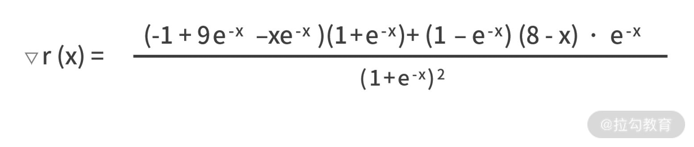
设置学习率 a 为 0.01，最大迭代次数 1000，然后就需要利用 xtemp = xtemp - a×▽r(xtemp) 来逐轮迭代。
这样整体的代码如下：
import math
def grad(x):
fenzi1 = (-1+9*math.exp(-x)-x*math.exp(-x))*(1+math.exp(-x))
fenzi2 = -(8-x)*(1-math.exp(-x))*math.exp(-x)
fenmu = math.pow(1+math.exp(-x),2)
return (fenzi1 - fenzi2) / fenmu
def main():
a = 0.01
maxloop = 1000
xtemp = 0.1
for _ in range(maxloop):
g = grad(xtemp)
if g < 0.00005:
break
xtemp = xtemp + a*g
print xtemp
if __name__ == '__main__':
main()
程序运行的结果为 2.42017943599。可见，当补贴金额 x = 2.42 元时，利润 r(x) = 4.67 元为最大利润。
为了验证计算结果是否正确，我们可以把利润函数、购买概率函数的曲线打印出来进行观察，如下图。图中，横轴是折扣金额，定义域是[0,8]，0 和 8 分别代表补贴额为零时的不打折，和补贴额等于原价减去成本时的不赚钱。
蓝色线代表的是购买概率，是个单调递增的非线性函数。而橙色曲线则是 r(x) 利润函数，图中的定性结论是，r(x) 在 x = 2.4 左右时可以取得最大值约为 4.7，这与我们用梯度下降法计算的结果是一致的。

最后，我们总结一下梯度下降法和求导法的区别和差异，如下表所示：
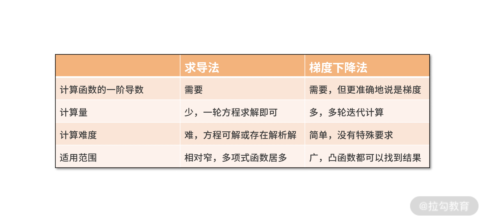
从计算过程而言，两种方法都需要对目标函数进行求导（求梯度）。求导法的计算量虽然少，但它的难度就在于必须求解出导数为零的方程。这样，在无法写出解析解的场景下，求导法就无能为力了。梯度下降法需要进行多轮的迭代计算，显然计算量是更多的。但每一轮的计算仅仅是带入梯度函数求个梯度值，再更新下自变量。计算量虽然多，难度却很低。对于无法写出解析解的方程，它一样是适用的。
相对求导法，梯度下降法显然是更厉害的算法。不过，它也有一些局限性：
- 它需要配置一些算法参数，如学习率、停止条件等。如果配置不好，可能会导致算法失效。例如，在本课时的例子中，如果学习率不小心设置为 0.7 以上，结果就不再是 2.42 了。这是因为学习率过高，导致了每一次迭代自变量“移动的步伐太大”，而频繁跨越最值无法收敛。
- 它要求目标函数为凸函数，否则就有可能会收敛到局部最优。 例如下面的双峰函数便不是凸函数。幸运的是，实际业务环境中很少会遇到非凸的函数。如果真的遇到非凸的函数，一个可行的方法是，采用随机初始化 xtemp，并多次执行梯度下降法求解。

小结
在这一课时，我们学习的是如何从复杂业务环境中找到最优解。
这需要你利用行业经验和领域知识，对问题进行函数的形式化定义，接着就是对目标函数求解最值的过程。
对于求解方法，我们着重学习了梯度下降法。相比求导法而言，梯度下降法的适用性更广、计算更简单，但计算量相对更多。就梯度下降法本身而言，它的局限性是依赖学习率、终止条件、初始值等参数的配置，并且只适用于凸函数。
06 向量及其导数：计算机如何完成对海量高维度数据计算？
在上一课时，我们学习了利用梯度下降法求解函数的极值。我举了个例子，如果商品利润函数 r 和补贴金额 x 的关系为 r(x) = p(x)×(m - x - c) = (2/(1+e-x) - 1)×(16 - x - 8)，然后我又利用梯度下降法，求解出让利润最大的补贴额 x* 为 2.42 元。
就这个例题而言，其实根本不需要求导法或者是梯度下降法。这是因为，商品定价是 8 元，补贴额 x 的决策空间就是从不打折的 0 元到不要钱的 8 元。如果最小颗粒度是“分”，那么决策空间就是 0.00元～8.00元，这 801 个变量而已。写个 for 循环，对每一个可能的补贴额都简单粗暴地计算一遍，也是一种简单可行的方法。
然而，实际问题中可能会更加复杂。例如，购买概率除了与补贴额有关以外，还跟同行竞争对手的补贴额、商品的有效期、温度、天气、节假日等因素有关。假设有 n 个可能的因素，每个因素的决策空间都是 801 个，那么整体的决策空间就瞬间变成了 801n 个！
此时再用简单粗暴的 for 循环计算就变得不现实了，这也是在大数据环境下，数学算法对复杂业务环境求解计算的优势。
向量是高维度数据的处理单元
我们提到，除了补贴额，影响商品购买率的因素还有很多。为了综合刻画这些因素对购买概率以及利润的影响，自然就需要用多元函数来表达，即 r(x,y,z...) = r(补贴额，有效期，温度...)。
- 维度
每个影响购买概率的因素，又可称作维度。当维度逐渐变多时，就意味着我们需要在高维度数据空间下处理某个多元函数。在计算机或数学领域中，通常用向量或矩阵来对高维度数据进行计算和表示。
- 向量
向量是高维度数据的表现形式，它由多个数字组合在一起，其中每个数字都是某个维度的特征值。通常印刷体用斜体、加粗的小写字母表示，例如 a=[1,2,3,4,5]，而手写时在字母顶上加一小箭头“→”即可。
- 矩阵
既然向量是多个数字的组合，同样我们也可以把多个向量组合在一起就得到了矩阵。矩阵通常用斜体、加粗的大写字母表示，例如：

根据向量和矩阵的定义，不难发现向量是一种行数为 1 或列数为 1 的特殊矩阵。有了向量和矩阵，就能把高维度的数据用简单的数学符号表达了。
矩阵的基本运算
因为向量是一种特殊的矩阵，矩阵的基本运算对于向量也适用。
1.转置
先来介绍一下矩阵的转置。转置用大写字母 T 作为上标来表示，作用是交换矩阵行和列的值。这样原本的大小就由 n×m 变成 m×n 了，例如：
2.向量的点乘运算
点乘运算只适用于向量，用“·”表示。计算的结果为，两个向量所有对应项的乘积之和。例如，向量 a= [a1,a2,...,an] ,b= [b1,b2,...,bn]，则a·b=a1b1+a2b2+……+anbn。例如 a= [1,2,3] ,b= [2,3,4]，则 a·b= 1×2 + 2×3 + 3×4 = 20。
3.矩阵的乘积运算
接下来看一下矩阵相关的乘积运算。矩阵可以有两种乘积相关的运算，第一个是矩阵的乘法，第二个是哈达玛积。
- 运算矩阵的乘法
如果有 n×p 的矩阵 A 和 p×m 的矩阵 B，则矩阵A 和 B 可以做乘法运算。其乘积结果 C =AB 的大小为 n×m，其中每个元素的数值为（C 矩阵中第 i 行第 j 列）

需要注意的是，矩阵的乘法对维数有严格要求。第一个矩阵的列数与第二个的行数必须相等。所以，矩阵的乘法并不满足交换律。

- 哈达玛积
哈达玛积在对海量数据预处理中会被高频使用，它的计算方式相对简单很多。哈达玛积要求两个矩阵的行列维数完全相同，计算方式是对应位置元素的乘积，例如：

4.求逆运算
最后一个矩阵的基本运算是求逆运算，这很像在标量里对一个数字求倒数。
我们先来介绍一个特殊的矩阵——单位矩阵。单位矩阵定义为主对角线元素为 1，其他元素为 0 的方阵，用I来表示，例如：
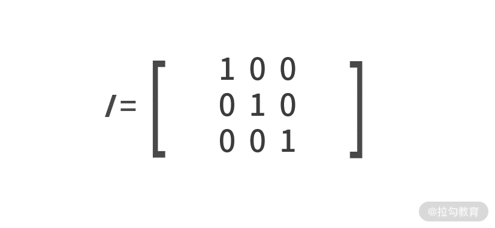
求逆运算只可应用在方阵上，用 -1 作为上标来表示，输出的结果也称作逆矩阵。逆矩阵满足的性质是，与原矩阵做乘法运算后，结果为单位矩阵，即 A×A-1=I。
向量的求导
前面说过，在对复杂业务问题进行形式化定义后，再求解最优值的过程中，不管是用求导法还是梯度下降法，都是逃不开要对目标函数进行求导的。复杂业务环境中，自变量肯定不止一个，这就需要我们在向量或矩阵的环境中，掌握求导的运算。
实际工作中，矩阵的求导用得非常少，掌握向量的求导就足够了。因此，我们重点学习“向量关于向量”的导数计算。
我们先给出向量关于向量的导数的计算方法。向量 y 关于向量 w 的求导结果是个矩阵，标记为A。矩阵 A 中第 i 行第 j 列的元素 aij，为向量 y 中第 i 个元素关于向量 w 中第 j 个元素的导数。例如，如果向量 w 的维数为 n×1，向量 y 的维数是 m×1，则 y 关于 w 的求导结果矩阵维数就是 n×m，其中第 i 行第 j 列的元素为：
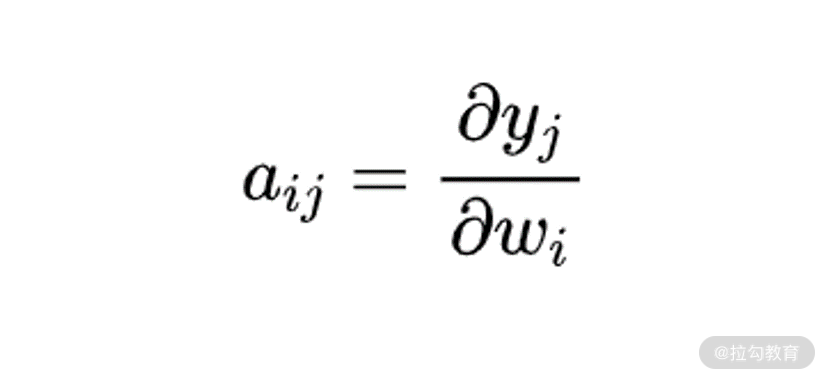
此时，向量的求导就变成了标量的求导了，相信这并不会难倒我们。
我们给出个相关例题：
如果 wTx= y，其中 w 和 x 都为 n×1 的向量。显然这里的 y 是个标量，也就是一个 1×1 的特殊向量。求 y 关于 x 的导数。
这里的 T 表示的是转置。此处 wTx 是矩阵乘法，1×n 和 n×1 才能相乘。另一种表示方法是 w·x，表示向量点乘。此处二者结果一样。
它的解析过程如下图所示：

计算机处理海量数据
计算机在处理海量数据时，常常依赖复杂的数据结构进行存储。例如数组、链表、栈、哈希表、结构体等等。对于海量数据而言，一定要明确样本和维度这两个概念：
- 样本，是指一条一条数据，代表的数据的个数；
- 维度，是指每一条样本的数据集合，代表数据特征的数量。
举个例子，全班 50 名同学语文、数学、英语的考试成绩，就可以视作微型的海量数据。在这个数据集中，50 个同学每个人都有自己的乘积，因此样本就是 50 个。而每个同学的样本，又包含了数学成绩、语文成绩 、英语成绩，这就是每个样本的 3 个维度，也可以称作 3 个特征。这样，就可以得到维数为 50×3 的成绩矩阵。
假设你需要对全班同学的成绩做一些统计计算，那向量的知识就突显出来了。通过向量的加减法，你可以计算出每个人的总分，也可以计算出全班同学每一门课的平均分；通过向量的点乘、哈达玛积，你可以计算出每个同学的偏科情况，即方差。
有了这些基础知识，你就能应对大数据环境中数据的存储、处理、计算和应用了。
小结
在实际工作中，你常会遇到高维度的数据，向量和矩阵就是必不可少的数学基础知识，计算机在处理海量数据时，就通常以向量或数组为单位。
最后我们留一个作业：假设矩阵 50×3 的矩阵 A 为全班 50 个同学 3 门课的考试成绩矩阵，用代码来实现每个同学的得分方差的计算，其中方差的公式为：

如果你用 Python 来开发，可能会用到 NumPy 库，你也可以考虑用 MATLAB 来实现。
关于向量的运算，还可以应用在对散点进行线性回归的拟合中，我们会在下一讲“07 | 线性回归：如何在离散点中寻找数据规律？”中向你详细讲解。
07 线性回归：如何在离散点中寻找数据规律？
经过前面几节课，我们讨论了对问题的形式化定义和对目标函数极值的几种求解方法，以及在大数据多变量环境中对数据计算的方法。
而这一课时，我们就把这些知识用在线性回归上，看一下它们是如何在实际工作中应用的。
假设大漂亮是公司负责增长营销策略的工程师，她利用公司的大数据分析了某件商品的销售情况。她发现这件商品的购买率（购买量除以浏览量）和它的折扣率（折后价除以原价）有着非常强的关系。
因此，她把这件商品最近一周的数据都提取出来，并且以每天一个样本点，尝试分析购买率和折扣率的关系，她的原始数据如下表所示：
 我们可以直观看出，折扣率越低，购买率越高。那么除此之外，我们还能分析出其他信息吗？比如，这里的趋势和关系如何用数学语言描述呢？以及可以如何用来指导补贴的投放方法？这些问题就需要用线性回归的知识来分析了。
我们可以直观看出，折扣率越低，购买率越高。那么除此之外，我们还能分析出其他信息吗？比如，这里的趋势和关系如何用数学语言描述呢？以及可以如何用来指导补贴的投放方法？这些问题就需要用线性回归的知识来分析了。
什么是线性回归？
回归（也称作拟合），通常是指利用某个函数，尽可能把数据样本点“串”在一起，用于描述输入变量和输出变量间的变化关系。
在回归中最常用的就是线性回归了，这是因为线性回归与人类“越怎样...越怎样...”的思维方式更一致。线性回归的特点是，用来把数据“串”起来的那个函数是线性的。线性回归可分为一元线性回归（ 一个自变量）和多元线性回归（至少两个自变量）。
围绕上面的概念，我们尝试写出线性回归的方程。一个线性函数的通式为 y =k·x+b 或者
y =kTx+b。
其中，x 是 nx1 维的自变量向量，k 是 nx1 维的权重。y 是输出变量，b 是个常数。如果是一元线性回归，则 n 为 1。
上面两种表达方法殊途同归，区别仅在于形式。前者是把变量当作了向量，通过向量的点乘得到结果；而后者是把向量视作一个特殊的矩阵，通过矩阵的乘法得到结果。
线性回归的目标是，尽可能把数据样本点“串”在一起。也就是说，要求解出 k 和 b，让这个函数尽可能把数据都拟合起来。
接下来，我们以大漂亮遇到的问题为例，试着用线性回归帮帮她。
线性回归的形式化定义
我们先前总结过解决问题的通用方法，包括两步：首先要进行形式化定义，接着对形式化定义的问题进行最优化求解。
形式化定义，是要用数学语言来描述清楚问题的目标是什么。我们前面分析到，问题的目标是尽可能把数据样本点“串”在一起。那么如何用数学语言来描述呢？
在线性回归中，通常用平方误差来衡量拟合的效果。平方误差的定义是，真实值和预测值之差的平方，即 (ŷ-y)2。值得一提的是，我们采用 ŷ 来代表真实值，用 y 来代表回归拟合的预测值。
有了这些背景知识后，我们回到大漂亮的问题。大漂亮想用一个线性函数去拟合购买率和折扣率，不妨用 y 表示购买率，x 表示折扣率，那么线性函数的表达式就是 y = kx + b。
此时，大漂亮面对的是一元线性回归问题，要做的事情就是求解出 k 和 b 的值。假设大漂亮已经有了 k 和 b，那么就能根据输入的 x，拟合出 y 的值了，而线性回归的目标是尽可能让“串”在一起的平方误差最小。因此，平方误差函数在这里的形式就是：
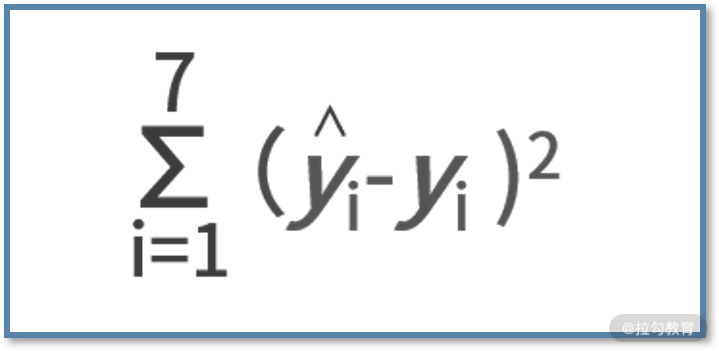
其中求和的 1 到 7，表示的是大漂亮获得的数据集中 7 个样本。公式的含义就是，每个样本的预测值和真实值的平方误差，再求和。大漂亮遇到的问题定性描述是，通过线性回归，让数据尽可能“串”在一起。其形式化定义，就是找到能让平方误差函数最小的 k 和 b 的值。
线性回归的求解方法
有了形式化定义的问题之后，就是求解问题的最优化过程。根据形式化定义，你会发现，这不就是个求解最值的问题嘛，我们已经学过了很多求解方法了。是的，绝大多数的问题，只要形式化定义清楚之后，就是个求解最值的过程。
对于线性回归而言，我们可以通过求导法来进行计算。不过要注意，此时我们是在向量的环境中求导，这就要用到上一讲的知识了。
我们先将平方误差函数用向量的形式进行表达，则有：

其中，ŷ 表示真实值的向量，y 为拟合的预测值的向量，他们的维度都是 7×1。同时别忘了，拟合函数是个线性函数，每个样本都满足 yi = kxi+b，可以改写为：
 则 7 个样本合在一起的预测值的向量表示为 y = Xw。
则 7 个样本合在一起的预测值的向量表示为 y = Xw。
我们把这些条件都带入平方误差函数中，则有：
 接下来问题就是，如何求解平方误差函数的最小值。我们利用求导法，则有
接下来问题就是，如何求解平方误差函数的最小值。我们利用求导法，则有
 这样，我们就得到了 w 的值啦。
这样，我们就得到了 w 的值啦。
线性回归编程实战
好了，到这里呢，我们已经掌握了全部线性回归拟合数据的精要。接着，我们尝试用代码来帮助大漂亮进行数据拟合的开发。
说到代码，你可能会感觉很恐怖，难道我要把先前的推导过程也要在代码里面重新开发一遍吗？其实完全不需要！对于代码开发而言，唯一需要用到的仅仅是最后的结论，即 w=(XTX)-1xTŷ。
换句话说，如果你会用 Python 的 NumPy 库，导入数据后，一行命令计算矩阵乘法和求逆运算就可以了。我们给出代码如下：
import numpy as np
def main():
x = np.array([[0.80,1],[0.85,1],[0.89,1],[0.87,1],[0.82,1],[0.74,1],[0.77,1]])
yhat = np.array([[0.25],[0.23],[0.18],[0.21],[0.23],[0.32],[0.29]])
xtx = np.dot(x.T,x)
xtx_1 = np.linalg.inv(xtx)
w = xtx_1.dot(x.T).dot(yhat)
print 'k: ' + str(w[0][0])
print 'b: ' + str(w[1][0])
if __name__ == '__main__':
main()
我们对代码进行解读：
- 第 4 行，导入数据得到矩阵 X。为了还能求解出 b，我们需要对每个 xi 补充一个“1”；
- 第 5 行，导入数据得到真实值向量 ŷ。接下来，按照公式进行求解就可以了；
- 第 6 行，计算了 XTX 的结果；
- 第 7 行，对其求逆，得到了（XTX）-1；
- 第 8 行，再来对 XT 和 ŷ 计算矩阵乘法，得到最终的 w。
最后，第 9 和 10 行打印结果，程序执行后的结果如下图：
 因此，我们帮助大漂亮进行开发后，得到的结果为 y = kx + b = -0.86x + 0.95
因此，我们帮助大漂亮进行开发后，得到的结果为 y = kx + b = -0.86x + 0.95
我们用 Excel 的散点拟合功能，来校验一下我们的结果。Excel 的结果如下图，这与我们的结果完全一致。
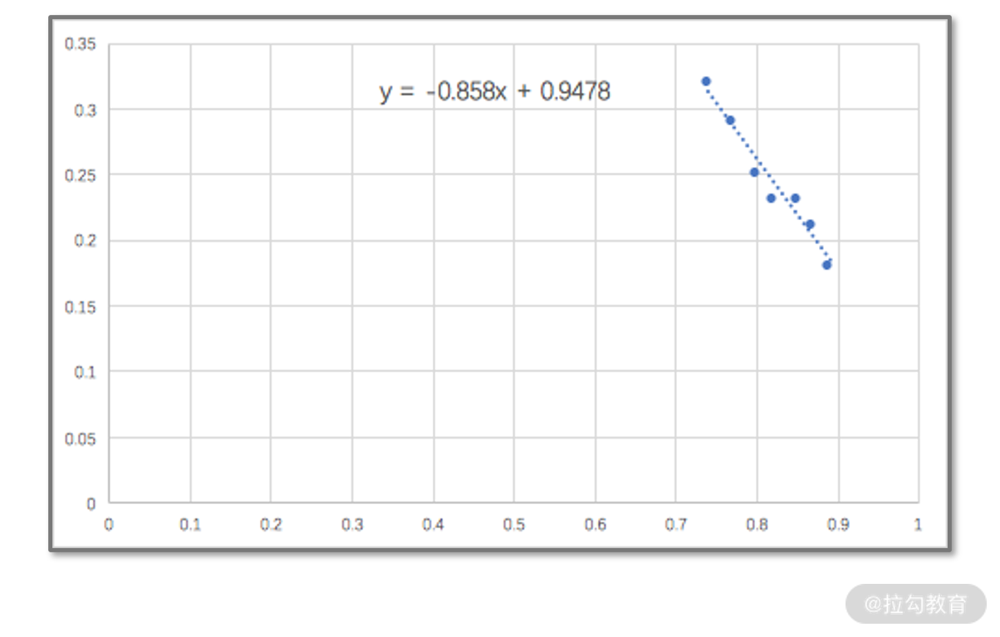
思维发散
通过大漂亮遇到的难题，我们可以尝试着去发散一下，看看能得到哪些启发。
- 普通程序员会写代码，一流的程序员懂数学。
如果你只是个普通的程序员，光看我们给的 13 行代码，想必很难知道最终打印的结果到底代表什么含义。只知道代码进行了一些矩阵运算，然后得到了一个向量，最后打印了两个变量的值。可是这两个值到底代表了什么含义，却一无所知。
这是因为，最终的结果算式的背后，有着非常复杂的数学原理。这些计算过程的证明和推导，是不需要在代码中被重复计算的。
- 既然 Excel 这么强大，我能否不学数学，而用 Excel 来打天下呢？
面对简单问题时，的确可以；而面对复杂问题时，则不行。例如，一元线性回归，我们可以通过散点图和 Excel 的趋势线功能拟合；而多元线性回归，则只能通过以数学为基石的代码来完成。
我们举个例子，假设大漂亮经过分析后又发现，购买率还跟商品前一天的好评率有关。那么数据集就变成了下面的表格：

现在，大漂亮想用线性回归来描述折扣率、好评率共同影响购买率的关系，并且比较两个自变量之间影响程度的大小。我们还可以继续用上面的代码，只不过导入的数据进行调整就可以了：
import numpy as np
def main():
x = np.array([[0.80,0.72,1],[0.85,0.81,1],[0.89,0.75,1],[0.87,0.82,1],[0.82,0.74,1],[0.74,0.85,1],[0.77,0.83,1]])
yhat = np.array([[0.25],[0.23],[0.18],[0.21],[0.23],[0.32],[0.29]])
xtx = np.dot(x.T,x)
xtx_1 = np.linalg.inv(xtx)
w = xtx_1.dot(x.T).dot(yhat)
print 'k1: ' + str(w[0][0])
print 'k2: ' + str(w[1][0])
print 'b: ' + str(w[2][0])
if __name__ == '__main__':
main()
执行后，程序的运行结果为：
 可见 y = -0.79 x1+ 0.2x2 + 0.73。由于 0.79 大于 0.2，因此 x1 的折扣率对 y 的影响更大。
可见 y = -0.79 x1+ 0.2x2 + 0.73。由于 0.79 大于 0.2，因此 x1 的折扣率对 y 的影响更大。
根据这个例子可以发现，用代码化的方法来进行线性回归，一方面可以减少工作量，另一方面对复杂问题的适应性也会更好。
小结
我们对这个课时的内容进行总结。在面对实际的、陌生的复杂问题时，一个最基础的解决方案就是形式化定义加最优化求解，这个套路能帮助你解决绝大多数的工作或生活的问题。
在这一讲中，我们以线性回归去拟合散点为例，先对回归进行形式化定义。我们讲述了回归的定性目标是用个线性函数去把散点“串”起来；而定量的形式化目标，则是平方误差最小化。
我们利用向量的方式把问题的形式化定义方程写出来后，就需要进行最优化求解了。在这里，我们还不需要用梯度下降法那么复杂的算法，用求导法就能求出结果了。最终会发现，拟合的结果 就是 w=(XTX)-1xTŷ 这么一个简单的表达式。利用 NumPy 库，我们自主地编写了线性回归的代码，并且在一元回归和多元回归分别进行应用。
最后，我们留两个课后作业吧：
- 自己去造一些数据，分别利用 Excel 和自己写的代码，亲自试一下线性回归的拟合；
- 如果我们不采用求导法，而采用梯度下降法，试着写一下代码吧。
08 加乘法则：如何计算复杂事件发生的概率？
在我们的工作和生活中少不了对概率的计算，对概率的准确计算会帮助我们做出更加合理高效的决策。
例如，早上出门之前，你需要对是否携带雨伞进行决策。如果没有任何依据而随机决策，那么就会遇到下雨没带伞或者晴天带伞的麻烦；而如果有依据，你知道今天下雨的概率超过 80%，那么你就会做出带雨伞的决策，来规避下雨带来不便的风险。
那么问题来了，对于一个事件而言，其发生的概率该如何计算呢？这一讲我们就来解答。
概率来自统计
还记得我们最开始接触概率时的定义吗？概率用来描述一个事件发生的可能性，它是个 0 到 1 的数字。概率的定义式就是 m/n，含义为假设某个现象重复执行 n 次（n 较大），其中目标事件发生了 m 次，则目标事件发生的概率就是 m/n。
举个例子，一枚硬币重复抛 100 次，其中正面朝上 49 次，反面朝上 51 次，则硬币正面朝上的概率就是 0.49。
概率的定义式非常重要，如果你能灵活运用，并结合一定的代码开发，有时候可以快速解决一个复杂的数学问题。
我们举个例子，在一个正方形内有一个内切圆，在正方形内随机选取一点，问该点也在圆内的概率是多少？
 这是个数学问题，但你可以借助概率的定义式完成计算，代码如下：
这是个数学问题，但你可以借助概率的定义式完成计算，代码如下：
import random
def main():
m = 0
n = 1000
for _ in range(n):
x = random.random()
y = random.random()
if x*x + y*y < 1:
m += 1
print 1.0*m/n
if __name__ == '__main__':
main()
我们对代码进行走读：
- 第 4、5 行定义了 m 和 n 两个变量。其中，n 赋值为 1000，意味着我们要重复执行这个动作 1000 次，m 表示坐标点落入圆内的次数；
- 接下来，就是第 6～10 行的 1000 次实验的循环了。每次实验，我们随机生成一个坐标点 (x,y)，其中 x 和 y 的取值范围都是 0～1 的浮点数；
- 这样，在第 9 行中，如果点 (x,y) 与原点的距离小于 1，则表示该点在圆内，m 自动加 1；
- 最后，打印出 m 和 n 的比值。
我们运行程序的结果如下：

这个题目如果从数学的视角来计算，结果就是 P =πr2÷4r2= π÷4 = 0.785，这与我们的计算结果是一样的。
未来，如果你遇到复杂的概率计算时，不妨试着用这种统计法来求解。
用加乘法则来计算复杂事件的概率
统计法是一种用程序思想解决数学问题的范例，但这并不意味着你不需要学习数学中概率计算的原理。原因在于，有些场景下重复试验的条件并不成立；或者是事件极其复杂，重复试验的代价太大。这就需要我们掌握一些基本的概率计算法则。
在这一课时，我们重点介绍加法原理和乘法原理。
1.加法原理
加法原理可以理解为，一个事件有多个可能的发生路径，那么这个事件发生的概率，就是所有路径发生的概率之和。
例如，在掷骰子的游戏中，掷出的点数大于 4 的概率是多少？
掷骰子的 6 个可能的点数是 6 个路径，每个路径发生的概率是 1/6，其中满足条件中点数大于 4 的只有最后两条路径。利用加法原理则有，点数大于 4 的概率为 1/6 + 1/6 = 1/3，如下图：

2.乘法原理
如果将加法原理理解为是串行的逻辑，那么乘法原理就是个并行的逻辑。乘法原理可以理解为，某个事件的发生，依赖多个事件的同时发生。那么原事件发生的概率，就是所有这必须发生的多个事件的乘积。
例如，你与大迷糊一起玩掷骰子的游戏，求大迷糊掷出 4 点的同时，你最终获胜的概率是多少？
这时候，计算的概率就必须两个条件同时发生。这两个条件分别是，大迷糊掷出 4 点和你的点数大于 4。根据前面的计算，我们知道掷骰子点数大于 4 的概率为 1/3。因此，这两个条件发生概率的乘积就是最终的结果，即 P (大迷糊掷出 4 点的同时，你最终获胜) = 1/6×1/3 = 1/18 = 0.0556。
对于这个例子，我们可以用统计法进行仿真，代码如下：
import random
obj = 0.0
for _ in range(10000):
you = random.randint(1,6)
damihu = random.randint(1,6)
if damihu == 4 and you > damihu:
obj += 1
print obj/10000
我们对代码进行走读：
- 第 3 行的 obj，就是最终事件发生的频次；
- 我们对现象观察 10000 次，这样就形成了第 4～8 行的 for 循环；
- 每次循环，在第 5 和 6 行，随机生成你的点数和大迷糊的点数；
- 第 7 行进行判断，大迷糊为 4 点且你的点数大于大迷糊的点数；
- 如果满足条件，则在第 8 行执行 obj 加 1；
- 最终，打印出 obj 除以 10000。
这段代码运行的结果如下图，跟我们计算的结果几乎一致。

条件概率
刚刚的加乘法则，适用于独立事件的概率求解。独立事件的含义，就是上面所提到的原子事件。也就是，拆解出的子事件之间没有任何的先后或互相影响结果的因素。例如，大迷糊爱喝咖啡，和大漂亮爱穿高跟鞋，就是两个毫无关系的独立事件。对于独立事件，应用加乘法则可以很快得到整体的概率。
那么，如果我们无法得到独立的事件，而都是耦合在一起的事件，又该如何计算概率呢？这就需要用到条件概率的知识了。
条件概率，指事件 A 在另外一个事件 B 已经发生条件下的发生概率，记作 P(A|B)，读作“B 条件下 A 的概率”。条件概率的定义式为 P(A|B) = P(AB) / P(B)，将其变换一下就是 P(AB) = P(A|B) × P(B)。
条件概率的特殊性，在于事件 A 和事件 B 有千丝万缕的联系。如果二者为毫无关联的独立事件的话，事件 A 的发生则与 B 毫无关系，则有 P(A|B) = P(A)。
我们给一个例子辅助理解。假设有一对夫妻，他们有两个孩子。求他们在有女儿的条件下，两个孩子性别相同的概率是多少？
这个概率看似难求，但只要定义好事件并套用定义式，就能完成计算。我们把事件 B 定义为，这对夫妻有女儿，事件 A 为两个孩子性别相同。因此，计算的目标就是 P(A|B)，也就是计算 P(A|B) = P(AB) / P(B)。
- 事件 AB 的含义是这对夫妻有女儿，且两个孩子性别相同。也就是说，这对夫妻的孩子都是女儿，即第一胎是女儿，第二胎还是女儿。此时根据乘法原理，得到 P(AB) = (1/2)×(1/2) = 1/4。
- 事件 B 为这对夫妻有女儿，不管第几胎，甚至是两胎都是女儿。这样就有了 3 种可能的情况：分别是第一胎女儿、第二胎儿子；第一胎儿子、第二胎女儿；第一胎女儿、第二胎女儿。这样根据加法原理和乘法原理，得到 P(B) = (1/2)×(1/2)+(1/2)×(1/2)+(1/2)×(1/2) = 3/4。因此 P(A|B) = P(AB) / P(B) = (1/4) / (3/4) = 1/3。
对于这个例子，我们用如下代码进行仿真：
import random
fenzi = 0
fenmu = 0
for _ in range(1000):
#0 is girl; 1 is boy
first = random.randint(0,1)
second = random.randint(0,1)
if first == 1 and second == 1:
continue
else:
fenmu += 1
if first == second:
fenzi += 1
print 1.0*fenzi/fenmu
我们对代码进行走读。
- 第 6 行开始，重复循环 1000 次。
- 第 8～9 行，随机生成两个孩子的性别。用 0 代表女儿，用 1 代表儿子。如果两个孩子都是儿子，则进行下一轮迭代。因为，这并不满足至少有一个女儿的假设条件。
- 第 12 行开始，如果有女儿，则分母加 1，如果两个孩子的性别一致，则分子也加 1。
- 最终打印出分子和分母的比值。
程序执行的效果如下图所示，结果与我们计算的近似相等： 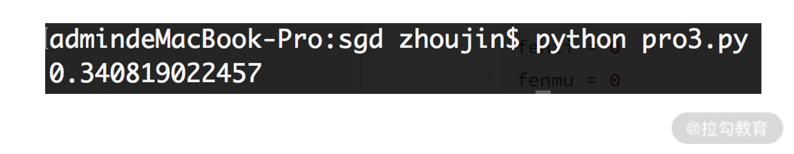 当你遇到一个复杂事件的时候，一定要通过串行或并行的两重逻辑进行拆解。再基于加乘法则，利用每个原子粒度事件的概率，合成最终复杂事件发生的概率。
接下来，我们看一些更复杂的问题。
一个概率计算的案例
假设大漂亮在某电商公司，负责实时的红包券投放策略。大漂亮设计的投放策略是，如果用户在商品的详情页停留了 1 分钟以上，则认为该用户正在纠结是否购买此商品。此时，给用户实时投放一定金额的红包，来增加用户的购买可能性。
试着分析一下，这里的事件之间的概率关系，以及投放红包到底产生了怎样的概率刺激效果？
可以想象，用户购买某个商品的动作顺序是，点击商品详情页，再付款购买。很显然“点击详情页”和“付款购买”并不是独立的事件，原因在于不点击详情页是无法完成购买动作的，二者存在先后关系。因此 P(点击并购买) = P(购买|点击) × P(点击)，这个公式对所有的用户都生效。
接下来，大漂亮的红包投放条件是，用户在商品的详情页停留了 1 分钟以上。此时，产生购买行为的用户就有两部分，分别是使用红包的购买用户和未使用红包的购买用户。很显然，使用红包和不使用红包是两个并行的逻辑，可以采用加法原理进行概率计算，因此有
P(点击并购买) = P(点击并使用红包购买) + P(点击并未使用红包购买)。
再分别拆解两部分概率，根据乘法原理和条件概率，则有
P(点击并购买) = P(购买|点击并获得红包) × P(获得红包|点击) × P(点击) + P(购买|点击并未获得红包) × P(未获得红包|点击) × P(点击)。
假设策略上线后，大漂亮根据上线前后的数据，统计得到了每个环节的概率如下表所示：
从表中数据可以发现以下几个结论：
- 投放红包是在点击之后，因此对点击率无影响；
- 用户点击商品详情页的条件下，获得红包的概率是 0.3，未获得红包的概率是 0.7；
- 对于未获得红包的用户，其购买率与实验前一致，都是 0.4。对于获得红包的用户，其购买率会上升，达到 0.5。
最终，根据公式计算下来，点击并购买的概率由 0.2 提升到了 0.215，这就是红包投放的收益。
小结
最后，我们对这一讲进行总结。概率的计算是高中和大学数学中有趣又让人头疼的内容，为了学好概率的知识，你不妨牢牢记住下面几个关键点。
- 概率来自统计。当你束手无策时，不妨从多次的重复试验中，统计目标事件出现的频次，来估算概率。
- 加乘法则是计算概率的有力手腕。对复杂事件按照并行或串行来拆解，再利用加乘法则就可以完成复杂事件的概率计算。
- 条件概率是处理有关联事件的方法。虽然条件概率有些晦涩，但牢牢记住定义式 P(A|B) = P(AB) / P(B)，就能让条件概率转换为普通事件的概率。在实际应用中，一定要耐着性子，仔细琢磨事件背后的相关关系，再利用这些方法，就能把概率计算清楚。
09 似然估计：如何利用 MLE 对参数进行估计？
你好，欢迎来到第 09 课时——似然估计：如何利用 MLE 对参数进行估计？
前面我们学会了如何计算概率，这一讲我们学习如何利用概率对某个参数进行估计。在读书的时候，你一定接触过极大似然估计，它是数学课程的难点之一，它名字背后的含义，以及它的推导过程都非常复杂，需要你对它有深刻的理解。
不过，有了前面“形式化定义”“概率计算的加乘法则”和求函数最值的“求导法”“梯度下降法”的知识储备，相信极大似然估计也能迎刃而解。
白话理解“极大似然估计”
如果你是刚刚学习概率，极大似然估计这六个字一定会让你产生不解。
似然（Likelihood），可以理解为可能性，也就是概率。举个例子，某个同学毕业于华中科技大学这样的工科院校，那么这位同学是男生的可能性（或者说概率、似然）就更大；相反，某个同学毕业于北京外国语学院这样的文科院校，那么这位同学是女生的可能性（或者说概率、似然）就更大。
那么反过来思考，如果大漂亮是个美丽又可爱的女生，现在有两个候选项：A.大漂亮毕业于华中科技大学；B.大漂亮毕业于北京外国语学院。在对其他信息都毫不知情的情况下，你更愿意相信哪个呢？很显然，相信 B 是更好的选项，因为 B 的概率（或者说似然）更大。
其实，在刚刚的思考逻辑中，我们已经不知不觉地用了极大似然估计的思想了——估计（Estimate），用大白话说就是“猜”。
例如，你对于大漂亮毕业院校的“估计”是她来自北京外国语学院；这就是说，你“猜测”大漂亮毕业于北京外国语学院。那么，为何你猜测她毕业于北京外国语学院，而不是华中科技大学呢？原因就是前者的可能性更大，而后者可能性更小。换句话说，从可能性的视角看，前者是个极大值（Maximum）。
我们将上面思考过程的 3 个关键词“极大（Maximum）”“似然（Likelihood）”“估计（Estimate）”给提炼出来，就得到了极大似然估计这个方法，通常也可以用这 3 个单词的首个字母来表示——MLE。
极大似然估计的方法路径
从刚才的例子不难看出，极大似然估计做的事情，就是通过已知条件对某个未知参数进行估计，它根据观测的样本构建似然函数，再通过让这个函数取得极大值，来完成估计。接着，我们用数学语言来描述整个过程。
极大似然估计的流程可以分为 3 步，分别是似然、极大和估计。
- 第一步似然，即根据观测的样本建立似然函数，也是概率函数或可能性函数。 这个步骤的数学表达如下：假设观测的样本或集合为 D，待估计的参数为 θ。则观察到样本集合的概率，就是在参数 θ 条件下，D 发生的条件概率 P(D|θ)。这就是似然函数，也是极大似然估计中最难的一步。
- 第二步极大，也就是求解似然函数的极大值。 你可以通过求导法、梯度下降法等方式求解。这个步骤的数学表达就简单许多，即 max P(D|θ)。
- 第三步估计，利用求解出的极大值，对未知参数进行估计。
利用这 3 步就完成了极大似然估计的整个流程。
接下来，我们将这个方法路径用在对“大漂亮毕业院校的极大似然估计表达”上。
- 第一步 似然
我们观测的样本结果 D 是“大漂亮是个女生”，待估计的变量 θ 是“大漂亮毕业于哪个学校”。这样，似然函数就是 P(D|θ) = P(大漂亮是个女生|大漂亮毕业于 θ 学校)，其中 θ∈(北京外国语学院,华中科技大学)。
接着，我们还需要了解工科院校、文科院校的男女比例情况，把似然函数写出具体的数字表达。假设华中科技大学的男女比例为 7:1，北京外国语学院的男女比例为 1:8，则有下表的概率值：
- 第二步 极大
有了前面的信息，我们就能求解似然函数的极大值了。似然函数中参数 θ 是离散值，只有两个可能的取值。因此，我们既不需要求导法，也不需要梯度下降法，只需要把两种可能性都算一下，再进行比较就可以了。
不难发现，因为 P(女|北外)=8/9 > P(女|华科) = 1/8，所以似然函数的极大值是 8/9。
- 第三步 估计
求解出似然函数的极大值之后，我们利用取得极大值的参数值作为结果，则有
极大似然估计的拓展
前面的例子很简单，而实际中你可能还会遇到很复杂的拓展问题。
1.第一个复杂的拓展问题，为单样本拓展为多样本
刚刚的观察样本集合中，只有一个样本（即大漂亮是个女生）。而如果有多个样本又该怎么办呢？
此时我们需要用到概率计算的乘法法则。通常，我们都会认为同一个事件的不同观测结果是独立的，因此可以用乘法法则计算它们共同发生的概率。
这个过程用数学语言表达，就是假设观测的样本集合为 D = (d1,d2,d3……dn)，待估计的参数为θ，则似然函数 P(D|θ) = P(d1,d2,d3……dn|θ)。
因为观测样本独立，满足 P(AB) = P(A)·P(B)，则有

2.第二个拓展问题，是似然函数到对数似然函数
刚刚的推导结果非常吓人。大型连乘算式中，直接求解最值是非常困难的。不过，庆幸的是数学中有个化乘法为加法的函数——对数函数。因为对数函数是单调的，所以在化乘法为加法的过程中，不会改变最大值发生的位置，即 ln(xy) = ln x + ln y。
MLE 梳理
到这里，关于 MLE 所有的知识点就讲完了，我们做个简单的梳理。
极大似然估计的目标，是通过观察样本估计某个参数的值，它估计的方法路径如下。
- 第一步，通过观察到的样本，建立代表这些样本发生可能性的似然函数。
- 第二步，利用求导法、梯度下降法等算法，求解似然函数的极大值。
- 第三步，用似然函数取得极大值的参数值，作为结果的估计值并输出。 在实际应用，样本很多的时候，通常认为样本之间是独立的，满足概率相乘的乘法法则；而面对连乘的复杂运算，通常采用对数似然函数的处理方式，化连乘为求和运算。
以上就是 MLE 基础原理的知识。
极大似然估计在工作场景中的应用
我们看一个利用极大似然估计解决实际工作问题的案例。
假设大迷糊是某个电商公司负责质量检测的工程师，这个公司的商品质量可以分为三档，分别是优质品、合格品和残次品。BI 的同事根据调研，发现商品的质量满足如下概率分布：
其中 θ 是个未知参数，大迷糊想用 MLE 的方法估计出 θ 的值。于是，大迷糊对商品进行了采样，得到的采样值分别为优质品、优质品和合格品。现在，让我们用 MLE 帮助大迷糊来估计未知数 θ 的值吧。
- 第一步 似然
我们发现，样本集合有 3 个样本，则 D = (d1,d2,d3) = (优质品,优质品,合格品)。待估计的未知数为θ，则似然函数为 P(D|θ) = P(d1,d2,d3|θ) = P(d1|θ)·P(d2|θ)·P(d3|θ)。
代入 d1～d3 的值，以及对应的概率，则有 P(D|θ) = P(优质品|θ)·P(优质品|θ)·P(合格品|θ) = θ4 * 2θ(1-θ)。
那么，对数似然就是 ln P(D|θ) = ln (θ4 * 2θ(1-θ)) = ln 2 + 5 ln θ + ln (1-θ)。
- 第二步 极大
有了似然函数，我们就来尝试求解它的极大值吧。首先求对数似然函数关于 θ 的导数，则有 推导到这里，你会发现直接用求导法建立导函数为零的方程就能得到结果。这是因为，商品质量函数都是比较简单的多项式。如果里面包含了复杂的函数，例如指数函数、正弦函数等，就必须要借助梯度下降法来求解了。
为了再次说明梯度下降法的使用，我们这里尝试采用梯度下降法来求解，我们直接给出代码：
import math
def grad(x):
return (5 - 6 * x) / (x*(1-x))
def main():
a = 0.01
maxloop = 1000
theta = 0.1
for _ in range(maxloop):
g = grad(theta)
theta = theta + a*g
print theta
if __name__ == '__main__':
main()
我们对代码进行走读。
- 主函数中，设置学习率为 0.01，最大迭代轮数为 1000 次，θ 的初始值设置为 0.1。
- 接下来，第 10～12 行，是 1000 次的循环体。每次循环执行两个动作，分别是计算梯度，并把结果保存在 g 变量中；再用学习率和梯度的乘积，去更新 θ。
- 在计算梯度的函数 grad() 内部，直接返回一阶导数值。这是因为对于单变量而言，一阶导数的值就是其梯度的值。
我们执行这段代码，打印的结果如下图所示：
如果我们用求导法，则有(5-6θ)/(θ*(1-θ)) = 0，解得 θ = 5/6 = 0.8333，这与我们用梯度下降法求得的结果一致。
- 第三步 估计
我们求解出的 θ* 值为 0.8333。它的含义是当 θ = θ* 时，大迷糊随机抽取 3 个样本恰好是优质品、优质品、合格品的概率最大。因此，我们有理由相信，θ* 是最有可能让这个观测结果出现的参数值。因此，0.8333 就是这里 θ 的估计结果。
小结
MLE 覆盖的知识点比较多。要想利用 MLE 去解决问题，你首先需要会计算概率，构建似然函数；接着，你还需要一些算法知识的储备，才能让你面对任何一个复杂函数，都能快速求解其最大值；最后，你还需要一个小技巧，那就是似然函数转化为对数似然函数后，最优估计值是不变的。
正是 MLE 的背后需要很多知识和能力，才让它成为数学学习过程中的一个难点。不过，庆幸的是，它的编程实现还是非常简单的。如果你掌握了梯度下降法的开发，那么 MLE 的开发也一定难不倒你。
最后，我们给一个练习题。假设在本例中，商品质量的分布如下：
试着再来帮大迷糊来估计下 θ 的值吧。
10 信息熵：事件的不确定性如何计算？
你好，欢迎来到第 10 课时——信息熵：事件的不确定性如何计算？
从加乘法则开始，我们基于事情的不确定性出发，尝试计算事情发生的可能性。然而，对于事件与事件之间的不确定性如何相比和衡量，单独靠概率就无法说清楚了。我说的这句话是什么意思呢？下面我举个例子来说明。
假设有两场足球赛，也就是两个事件。第一场足球赛，对阵的双方是老挝队和巴西队，标记为事件 A；第二场足球赛，对阵的双方是阿根廷队和葡萄牙队，标记为事件 B。显然，在比赛开始前，这两个事件的比赛结果都具备一定的不确定性。人们也会根据历史数据，分别计算两场足球赛结果的概率。
现在我们思考这样的问题：事件 A 和事件 B 的比赛结果，哪个不确定性更大？
显然是事件 B。因为对于事件 A，除非爆冷，否则巴西队几乎是不可能输给老挝队的，事件 A 比赛结果的不确定性就很低；对于事件 B，阿根廷有梅西，葡萄牙有 C 罗，二者都是球星云集的老牌劲旅，比赛结果的不确定性就非常强。
所以这一讲，我们就来学习如何用一些量化的指标衡量事物的不确定性。
熵
事物的不确定性用“熵”表示。熵越大，则不确定性越强；熵越小，不确定性越小。熵的单位为 bit，所以熵的另一种理解是信息量。
那么什么样的事情的信息量更大呢？一定是对于不确定性事件的结果的信息。
例如，大迷糊向你说，“巴西队 vs 老挝队”的结果是巴西队获胜了，这句话对你而言就是废话，信息量非常少。相反，如果大聪明跟你说，“阿根廷 vs 葡萄牙”的比赛中葡萄牙获胜了，这句话对一个不确定性很强的事件给出了结果，其信息量就很大。
直观来说，越是“废话”，信息量越少；越是描述人们看不明白的事情，信息量就越大。
既然熵可以描述不确定性，那么具体到某个事件身上，熵应该怎么计算呢？我们给出熵的定义式。假设一个事件 A 有 N 个结果，每个结果发生的概率为 pi，那么熵的计算公式为：

我们给一个计算的例子。假设在“巴西队 vs 老挝队”的比赛中，巴西获胜的概率为 0.9，巴西队不胜的概率为 0.1，计算这场比赛的熵。根据定义式计算，可以得出 H(p) = -0.9 * log2 0.9 - 0.1 * log2 0.1 =0.4690。
对于熵的计算，涉及取对数的计算，我们给出下面的代码。
import math
def entropy(*c):
result = 0
islegal = 0
for x in c:
islegal += x
result = result + (-x) * math.log(x,2)
if islegal != 1:
return 'input prob error!'
return result
if __name__ == '__main__':
print entropy(0.9,0.1)
我们对代码进行解读。
- 从第 6 行开始，对输入的每个概率值进行循环。
- 每次循环的动作是，第 7 行计算概率的求和，并用 islegal 变量保存。
- 第 8 行，根据公式来计算熵的值，用 result 变量来保存。
- 最终，判断概率之和是否为 1，如果不是，则输出错误信息；如果没问题，则返回 result。
以上代码执行的结果如下图所示：
接下来，我们换一个事件计算。假设对于“阿根廷 vs 葡萄牙”的比赛中，阿根廷获胜的概率为 0.4，阿根廷不胜的概率为 0.6，试着再来计算下熵的值。
这次，我们直接用代码来运算。将第 15 行，更改为 print entropy(0.4,0.6)，运行结果如下图所示：

可见，此时的熵值比之前“巴西队 vs 老挝队”的要大，因此“阿根廷 vs 葡萄牙”比赛结果的不确定性更强、信息量更大。
条件熵
在概率的学习中，我们学过概率和条件概率。对于熵而言，也有对应的条件熵。条件熵衡量的是，在某个条件 X 下，事件 Y 的不确定性是多少，记作 H(Y|X)。
假设，条件 X 有 m 个可能结果，每个结果发生的概率为 qi，则条件熵的定义式为：

其中 H(Y|X=xi)表示在某个 xi 条件下 Y 的熵。
这个公式有点复杂，我们继续以足球赛的结果为例去理解公式。
假设“巴西队 vs 老挝队”的足球比赛中，正常情况下巴西队获胜的概率为 0.9。然而，最近巴西的天气不太好，球员受到天气的影响后，患病的概率非常高。假设每个球员患病的概率都是 0.5。而且一旦球员患病，巴西队获胜概率将降低到 0.6。那么，我们试着去计算球员身体状况为条件的比赛结果的熵。
我们套用上面的公式来进行计算。标记事件 Y 为比赛结果，条件 X 为球员是否健康。根据例子的信息，X 有两个可能性，分别是 x1（健康）和 x2（患病），且两个可能性发生的概率为 q1= q2= 0.5。
接着，先需要分别计算每个条件下的熵H(Y|X=xi)：
- 健康的情况下，H(Y|X=x1) =-0.9×log20.9-0.1×log20.1 = 0.4690；
- 患病的情况下，H(Y|X=x2) =-0.6×log20.6-0.4×log20.4 = 0.9710。
因此，球员身体状况为条件的比赛结果的熵为H(Y|X) = q1H(Y|X=x1)+ q2H(Y|X=x2) = 0.5 * 0.4690 + 0.5 * 0.9710 = 0.72。
信息增益可以描述条件熵和熵的关系
“熵”的含义是不确定性，而“条件熵”的含义是知道了某个条件下的不确定性。因此直觉来看，条件熵应该小于或等于熵，因为增加了“某个条件”就等于是知道了某个信息，最不济就是个无用信息，但无论如何一定会让“不确定性”减小。
这个结论的证明会很复杂，感兴趣的同学可以自己试着推导下。我们借助刚刚的足球比赛的例子，来验证这个结论。先通过这个表格，利用“08 | 加乘法则：如何计算复杂事件发生的概率？”中的加乘法则，分别计算出巴西队获胜和不胜的概率：
 接下来，我们将上表算出的巴西队获胜和不胜的概率，代入刚刚已经开发好的代码，计算出比赛结果的熵。执行 print entropy(0.75,0.25)，结果如下图，即 H(Y) = 0.8113。
接下来，我们将上表算出的巴西队获胜和不胜的概率，代入刚刚已经开发好的代码，计算出比赛结果的熵。执行 print entropy(0.75,0.25)，结果如下图，即 H(Y) = 0.8113。
 而刚刚我们已经计算了条件熵为 H(Y|X) = 0.7200。可见，由于掌握了球员健康或患病这个条件，让比赛结果的不确定性由 0.8113 降低为 0.7200。这个差值，就来自于外部条件的引入，带来事物不确定性的下降，这就称之为信息增益。
而刚刚我们已经计算了条件熵为 H(Y|X) = 0.7200。可见，由于掌握了球员健康或患病这个条件，让比赛结果的不确定性由 0.8113 降低为 0.7200。这个差值，就来自于外部条件的引入，带来事物不确定性的下降，这就称之为信息增益。
- 信息增益，顾名思义就是信息量增加了多少；换句话说，也是不确定性降低了多少。标记为 g(X,Y)，定义式为 g(X,Y) = H(Y) - H(Y|X)。
- 有时候，除了看这个差值以外，还会同时观察降幅的比值。此时为信息增益率，定义式为 gr(X,Y) = g(X,Y) / H(Y)。
回到刚刚足球比赛的例子，它的信息增益为 g(X,Y) = H(Y) - H(Y|X) = 0.8113 - 0.7200 = 0.0913；信息增益率为 gr(X,Y) = g(X,Y) / H(Y) = 0.0913 / 0.8113 = 11.25%
基尼系数
最后，我们再介绍一个描述事物不确定性的方法——基尼系数，标记为 Gini(p)。
这里的基尼系数与衡量国民收入差距的基尼系数是不同的概念，所以不必纠结两者的区别。
基尼系数和熵一样，都是在描述信息量，区别在于二者的计算定义式不同。相对于熵的定义式，基尼系数的定义式只是把其中的 -log2pi替换为(1-pi)，则有
我们仍然围绕“巴西队 vs 老挝队”“阿根廷队 vs 葡萄牙队”的比赛，来计算一下基尼系数。
- 对于巴西队的比赛而言，其基尼系数为 Gini(p) = 0.9*(1-0.9) + 0.1*(1-0.1) = 0.18
- 对于阿根廷对的比赛而言，其基尼系数为 Gini(p) = 0.4*(1-0.4) + 0.6*(1-0.6) = 0.48
显然，阿根廷队的比赛基尼系数更大，不确定性更强。定性的结果与熵的计算方式是一致的。
利用“信息增益”制定计划
讲了这么多不确定性的计算方法，那么它们到底有什么实际应用的场景呢？其实，描绘出事物的不确定性，更多的是帮助人们做出正确的选择。
我们说过，熵的由高到低，就是信息量的由高到低，也就是不确定性的由高到低。也就是，熵越低的事情，越接近废话，也就越有把握。那么我们在调节资源投入的时候，就应该尽量避免在熵低的事情上的投入；相反，应该投入到熵比较高的事情上。
所以，当明确了要在熵高的事情上投入资源后，就要想办法让这个事情的熵逐步降低，让它的不确定性降低，你可以理解为解决问题的过程就是让熵减少的过程。而要让熵减少，就需要不断地有外部条件输入。通过外部条件输入，获得信息增益，来不断降低熵。
上面的描述很抽象，我们用一个具体的例子来说明，假设大漂亮是某公司的总监。在下个月，有两个同等重要的技术方向，分别标记为 A 和 B。按照现在的发展趋势来看，A 方向在下个月成功解决的概率为 0.9，无法解决的概率为 0.1；B 方向在下个月成功解决的概率为 0.6，无法解决的概率为 0.4。
此时就如同刚刚的足球赛一样。A 的熵为0.4690，B 的熵为 0.9710。显然，B 的不确定性更强，是更需要投入人力去解决的。因此大漂亮决定把资源向 B 倾斜，安排了两名工程师去解决 A 问题，而安排了 5 名工程师去解决 B 问题。
接着，大漂亮仍然感觉 B 方向的不确定性很强，怎么办呢？她想到，要通过引入外部条件，来降低 B 的熵。因此她通过社招，招聘到了一名 B 技术方向的资深专家大聪明。大聪明的加入，显然是个外部条件，带来了信息增益；因此，B 技术方向的不确定性就在下降。最终在月底，A 方向和 B 方向，都取得了技术突破。
小结
我们再回顾一下“概率”和“熵”的区别。对于一个事件而言，它可能有很多个结果。例如，“老挝队和巴西队的足球比赛”这是一个事件，而这个事件有很多可能的结果，例如巴西队胜、巴西队不胜。
- 概率，描述的是某个事件的结果，发生的可能性。有时候，在不刻意强调区分“事件”和“事件结果”的时候，也被简称为事件发生的可能性。
- 熵，描述的则是事件背后蕴含的信息量和不确定性。
你也可以理解为，“可能性”探讨的是事件某个结果的发生；而“不确定性”探讨的是一个事情下的不同结果发生的情况。
最后总结一下这一讲的要点。熵是描述事物不确定性的量。在定量描述了事物的不确定性之后，可以辅助人们做出更加合理的资源分配决策。条件熵，是指引入了某个外部条件后的熵；条件引入，必然会带来信息增益，也就是会让熵变小，这个变小的幅度可以用信息增益或信息增益率来描述。
这四个关键概念的定义式如下，你可以通过定义式去反复领悟它们之间的区别和意义。
 我们给一个练习题，假设韩国和日本要踢一场友谊赛，比赛当天天气存在一定的不确定性。已知，比赛当天有 0.3 的概率会下雨。如果下雨，韩国队获胜的概率可以达到 0.7；如果晴天，则韩国队获胜的概率只有 0.3。假设 Y 为比赛结果，X 为天气状况，试着求条件熵 H(Y|X)。
我们给一个练习题，假设韩国和日本要踢一场友谊赛，比赛当天天气存在一定的不确定性。已知，比赛当天有 0.3 的概率会下雨。如果下雨，韩国队获胜的概率可以达到 0.7；如果晴天，则韩国队获胜的概率只有 0.3。假设 Y 为比赛结果，X 为天气状况，试着求条件熵 H(Y|X)。
11 灰度实验：如何设计灰度实验并计算实验的收益？
在之前的课时，我们对问题进行了形式化定义，并利用一个很牛的算法进行了最优化求解，之后我们便打造了一个全新的策略优化解决方案。
而接下来，你需要面对的问题，就是证明这个新的解决方案是有效的，是优于之前的解决方案的，而这个证明方法就是做 AB 实验。所以，这一讲我们就来说说 AB 实验的那些事。
灰度实验
在实际的工作中，通常需要进行灰度实验来验证某个新系统相对于旧系统的收益。灰是介于黑和白之间的颜色，可以理解为是个中间态。灰度实验，也可以称作为 AB 实验、灰度发布，名称虽然不同，但本质上是没有什么区别的。
AB 实验的理念，是构造一个平行世界，去观察两个世界的不同。具体来说就是，把线上的流量随机地拆分为具有同样分布的实验组和对照组，然后将新旧两个系统分别作用在这两组流量上，去观察业务指标的变化。
我们举个例子，假设大迷糊负责某个 App 信息流的推荐系统算法的开发。
原本推荐系统的版本号是 v1.0，大迷糊经过对算法和策略的功能迭代，开发了推荐系统 v2.0。接下来，他需要测试 v2.0 相比 v1.0 是否有效果的提升。如果没有提升，则说明开发失败；如果有提升，则开发成功，并可以考虑在线上用 v2.0 来代替 v1.0。
- 为了测验证 v2.0 相比 v1.0 是否有效果的提升，大迷糊从数据库里筛出了 N 个用户。
- 接着，大迷糊通过某个随机算法，把这 N 个用户随机地拆分为人数相等的两组，分别命名为实验组和对照组，每组 N/2 个用户。
- 下一步，大迷糊用 v2.0 的推荐系统给实验组的 N/2 个用户推荐信息，再用 v1.0 的推荐系统给对照组的 N/2 个用户推荐信息。
- 经过了几周后，大迷糊分别计算了实验组和对照组用户的业务指标，可能有点击率 CTR、阅读量 PV、UV、用户活跃度等指标。
- 最终，大迷糊发现，实验组用户的各项指标都优于对照组用户的指标。
这就证明 v2.0 的效果要优于 v1.0 的效果，因此 v2.0 系统成功代替了 v1.0 的系统，并在线上环境中全量生效。
灰度实验的两个关键步骤
虽然，大迷糊全量 v2.0 推荐系统的流程很复杂，但灰度实验本质上只有两个大步骤。
- 第一步，分流。即如何获得实验组和对照组的两波流量。
- 第二步，评估。即用什么指标来分别衡量实验组和对照组的效果。
可以说，这两步将直接决定灰度实验的成败。
你可能会困惑，决定灰度实验成败的不应该是新系统吗？v2.0 开发得好不好，才应该是决定灰度实验成败的因素呀。
其实，v2.0 的开发是上一个篇章中“形式化定义”和“最优化求解”要解决的问题；而灰度实验要解决的问题，是假设 v2.0 开发后，如何客观、量化地计算 v2.0 相比于 v1.0 的效果。
分流原理
分流的理念，是构造一个假想的平行世界，用以分别观察两个世界中样本的表现。
举个例子，大迷糊想论证推荐系统 v2.0 相对于推荐系统 v1.0 的效果。理论上最完美的做法是，在 1月1日 将 v1.0 部署在线上，观察用户在1月1日～1月31日整体的阅读表现；接着，再让时间回退到 1月1日，将 v2.0 部署在线上，再观察用户在1月1日～1月31日整体的阅读表现。可惜的是，平行世界并不存在，我们永远也无法让时间回退。
因此，人们想到一个替代办法，那就是在现实世界中，分别构造两波差不多的集合（也可以称作流量），来拟作两个平行世界，分别评测两个版本的推荐系统的效果，这就是分流。
网络上有这样一个段子。一个生物专家把一个完好的蜘蛛放在地上，拿个锣一敲，蜘蛛跑了；然后将蜘蛛的腿拔光，将其放在地上，再拿个锣一敲，咦，蜘蛛没反应！于是得到结论：蜘蛛的听觉器官在腿上。
在这个实验中，两组实验的蜘蛛一个有腿、一个没有腿，很显然犯了分流不随机的错误。可以说，分流方案的好坏，将直接影响评估结果的对错。常见的分流方法包括下面几种：
- 按用户分流，即把用户随机拆分为两组；
- 按时间分流，例如上半月上线 v1.0，下半月上线 v2.0；
- 按地区分流，例如北边的用户上线 v1.0，南边的用户上线 v2.0；
- 组合分流，将上面的方法组合在一起使用。
分流的底线要求是保持随机性，但到底按照上面哪个方法去分流，则需要根据实际情况来选择。我们再举几个工作中的例子。
- 案例一 大漂亮论证推荐系统 v2.0 相对于推荐系统 v1.0 的效果。
她采用了按地区分流，即北方人上线 v1.0，南方人上线 v2.0。这显然不是个好方法。原因是，北方人和南方人的喜好并不一样。当你的 AB 实验论证有正向收益时，你很难证明收益的来源，是喜好的不同，还是系统升级带来的效果。
- 案例二 大聪明负责公司火车票业务的系统开发。
他的实验采用了按时间分流，即二月份采用老系统，三月份采用了新系统，来对比系统之间的稳定性效果。这显然也不是个好方法，因为二月份包含了春节，访问量天然就大，性能压力也就大。所以新系统在三月表现出性能好，也许不是因为系统本身性能的提升，而是因为三月份访问量下降。
因此要想做好分流，除了要满足一定的随机性外，更要符合人们认知的常理。
分流的实现
分流的实现一般需要借助一个随机函数，再通过这个随机函数的输出结果，来判断分流的结果。假设待分流的样本有 1000 个，我们希望把样本随机分拆为 7:3 的两组。对每个样本，则需要调用随机函数得到一个随机值，再根据这个随机值对样本进行打标。
我们给出下面的一段代码：
import random
exp = []
con = []
for i in range(1000):
value = random.randint(1,100)
if value <= 30:
exp.Append(i)
else:
con.Append(i)
print len(exp)
print len(con)
我们对代码进行走读：
- 第 3～4 行，用两个数组来保存实验组和对照组；
- 第 5～10 行，对 1000 个样本进行循环；
- 对于每个样本，第 6 行得到一个 1～100 的随机数；
- 第 7～10 行，根据这个随机数与 30 的大小关系，来判断样本到底应该归为实验组还是对照组。
这样就实现了按比例的随机分组，代码执行的结果如下图：

接下来，如何衡量实验效果的好坏呢？
一个误区，是实验组点击量为 9000 小于对照组的 16000。于是得到结论，新系统效果不如老系统。这很显然是不对的，因为实验组只有 290 人，而对照组有 710 人。流量的不平衡天然就会造成点击量的不同。
因此 AB 实验的指标中有这样一个原则：“量”指标一定要对流量进行归一化，得到“率”指标后，才可以对比。
基于这个原则，我们可以重新设计如下几个实验评估指标：
- CTR（点击通过率）= 点击量 / 曝光量
- 上线率 = 上线用户数 / 注册用户数
- 人均曝光量 = 曝光量 / 注册用户数
- 人均点击量 = 点击量 / 注册用户数
并将数据整理成下表：

根据该表实验对比的结果，可以得到以下结论：
- v2.0 的推荐系统相对于 v1.0 的推荐系统，点击率提高了 0.2 pp，有正向收益，但并不算多；
- 然而，点击率的小幅度提高，带来了用户留存、复访的大幅度提高，体现在上线率提高了 4.9 pp；
- 上线率提高，又让人均曝光量提高了 45 篇，让人均点击量提高了 8 篇。
可见，推荐系统的迭代，换来了点击率的提高，点击率的提高又带来了更多的用户留存和复访，进一步带来了更多的用户曝光量和点击量。因此，v2.0 的推荐系统技术指标更优，并且带来了明显的业务收益。
小结
这一讲的核心就是评估效果，即当你完成了某个系统的迭代后，如何衡量新系统相比于就系统的收益是多少，这个过程便依赖灰度实验。
灰度实验的关键步骤包括两步，分别是分流和评估：
- 分流有很多种方法，但一定要保证分流的随机性。
- 评估则需要把握好一个原则，那就是先把“量”指标按照流量归一化为“率”指标后，再来进行对比分析。
最后留一个课后作业：假设有下面的实验数据，请你试着去分析实验的效果。

欢迎你在评论区与我分享你的答案。
现在我们学习了通过灰度实验去验证评估效果，那么又如何证明我们实验效果的可信度呢？所以下一讲，我将向你讲解“12 | 统计学方法：如何证明灰度实验效果不是偶然得到的？”带你将灰度实验进行到底。
12 统计学方法：如何证明灰度实验效果不是偶然得到的？
你好，欢迎来到第 12 课时—— 统计学方法：如何证明灰度实验效果不是偶然得到的？
当你做完 AB 实验，拿着实验结果来论证 v2.0 的系统比 v1.0 的系统效果更好的时候，极有可能有人站出来这样质疑“你的实验结果可信度如何？它是偶然得到的，还是一个必然结果？”
面对这样的质疑，就需要一些统计学的知识了。这一讲，我们就来利用统计学的知识，来论证某个灰度实验的结果的可靠性。
偶然得到的实验结果
大迷糊想通过 AB 实验，来探索用左手掷骰子和用右手掷骰子是否有差异。于是，大迷糊先用左手掷骰子得到点数为 2，再用右手掷骰子得到点数为 6。于是得到结论，右手掷骰子比左手掷骰子点数大 4。
这个结论显然是偶然发生的，是不对的。因为常识和经验都告诉我们，两只手掷骰子点数应该是没有差别的。
然而，工作中使用 AB 实验的场景，很可能是没有这些预先、已知的经验的，这就给实验结果的可靠度判断带来了很多挑战。
例如，上一讲 v2.0 的推荐系统相比 v1.0 的推荐系统，在 CTR 上提高了 0.2pp。这个结果到底是偶然得到的，还是真实存在的呢？这就需要我们具备统计学知识——中心极限定理了。
统计学的圣经——中心极限定理
中心极限定理是统计学中的圣经级定理，它的内容为：假设从均值为 μ，方差为 σ2 的任意一个总体中，抽取样本量为 n 的样本，当 n 充分大时，样本均值x̅的分布近似服从均值为 μ、方差为 σ2/n 的正态分布。通常认为 n≥30 为大样本。
中心极限定理的厉害之处，在于它实现了任意一个分布向正态分布的转换，如下图：
至于为什么实现了正态分布就很厉害，下文会为你讲解。
 为了更好地理解中心极限定理，我们给出下面的案例。
为了更好地理解中心极限定理，我们给出下面的案例。
【例题1】假设某个总体的分布是 1～6 的均匀分布，现在我们利用中心极限定理来估计一下这个总体的均值和方差。
解析：根据中心极限定理，我们需要先计算x̅的均值和方差。为了得到某个随机变量的均值和方差，就要得到尽可能多的x̅的采样点，标记为 x̅i 。对于每个采样点 x̅i，它又是总体的采样点。
因此，我们需要首先对总体进行多次采样，得到一个均值x̅的采样点。再重复这个过程得到多个 x̅i 的值，这样就能计算出x̅的均值和方差了。
具体代码如下：
import random
import numpy as np
xbarlist = []
for i in range(1000):
xbar = 0
for j in range(30):
k = random.randint(1,6)
xbar += k
xbar = xbar / 30.0
xbarlist.append(xbar)
npxbar = np.array(xbarlist)
mu = np.mean(npxbar)
var = np.var(npxbar)
print mu
print var
我们对代码进行走读。
- 代码第 2 行，调用了 numpy 库，主要是为了后续计算均值和方差。
- 第 4 行，定义了 xbarlist 的数组，用来保存x̅的多个采样值。
- 第 5～11 行，通过循环 1000 次，想得到 1000 个 x̅ 的采样值。显然每次循环就是要计算出某个 x̅i 的值，为了求出 x̅i，我们需要对总体进行多次采样。
- 第 7～9 行，循环 30 次。每次循环，调用随机函数 randint，从 1～6 中，以均匀分布随机得到一个采样值，并且计算这 30 个值的和。
- 第 10 行，用求得的和除以 30，得到了这 30 个值的平均值，即 x̅i。
- 第 11 行，把 x̅i 保存到 xbarlist 的数组中。在上面的循环都结束后，就得到了 1000 个x̅的采样值。
- 接着第 13 行，把数组转换为 numpy 下的数组。
- 再在第 13～14 行，调用求均值和求方差的函数，得到了x̅的均值和方差，并打印。
上面代码执行的结果为： 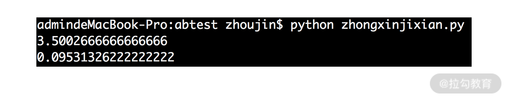 可见极限中心定理下x̅的 μ = 3.5，σ2/n = σ2/30 = 0.0953。从而估计出总体的均值为 3.5，总体的方差为 σ2 = 0.0953×30 = 2.859。
我们再反过来看一下原来的总体的分布：
- 因为是 1～6 的均匀分布，因此均值为 3.5（0～6 均匀分布的均值才是 3），这与中心极限定理的计算结果一致；
- 而方差可以根据定义式进行计算，则有方差 = [(1-3.5)2 + (2-3.5)2 + (3-3.5)2 + (4-3.5)2 + (5-3.5)2 + (6-3.5)2]/6 = 2.9167，这也与中心极限定理计算的结果几乎一致。
这个案例讲完，你依旧会琢磨，中心极限定理到底有什么奇妙之处呢？为何它能称得上统计学的圣经级定理呢？接下来我将用最通俗的方式向你讲解。
【白话中心极限定理】
通常，现实中的总体都是一个陌生的分布，例如推荐系统每天的点击率。如果从均值和方差的定义式出发，则需要知道这个总体中每个样本的值。可惜的是，实际情况中的总体很可能包含了无穷多个样本。要想从定义式的角度出发，来计算统计量往往是不可行的。
而中心极限定理，则构建了样本和总体之间的桥梁。总体的统计量算不出来，就对总体抽样，得到一个新的随机变量 x̅，x̅ 的统计量可以根据抽样的结果来计算。此外，中心极限定理还告诉了我们，抽样的统计量和总体的统计量之间的关系，那么就可以根据抽样的统计量推导出总体的统计量。
因此，我们说中心极限定理是使用统计学去解决实际问题的前提基础，是后续统计学应用的理论桥梁。
在实际做 AB 实验的场景下，你的目的是要验证实验组与对照组，这两个总体之间是否具备显著性的差异。可惜的是，总体的分布往往是不知道的，你只能通过对总体进行采样，来估算总体的统计量；也就是利用采样样本的均值和方差，来估计总体的均值和方差。
这就需要去运用中心极限定理了，一旦有了实验组、对照组两个总体的均值和方差，就可以利用一些检验手段，来计算显著性了。
所以接下来，我们便需要将中心极限定理应用在 AB 实验中，去论证实验是不是随机得到的，这就需要用到统计学“均值假设检验“的知识了。
均值假设检验
均值假设检验，就是要验证通过 AB 实验得到的某个均值是否存在显著的差异。 这里显著的含义是，结果是真实、客观的规律，并非偶然得到。
假设检验的流程分为两步：
- 第一步，计算检验统计量 Z 的值。
- 第二步，再根据数值大小，查下面的标准正态分布表得到代表显著性的 p 值。如果 p<0.05 则认为结果是显著的，并非偶然得到的。
我们详细阐述一下这两个步骤。根据实际情况不同，Z 统计量可以有两种计算方法：
- 第一种方法，当总体的标准差 σ 已知时，计算方法是

- 第二种方法，当总体标准差未知时，可以采用样本的标准差 s 来代替总体的标准差，公式为 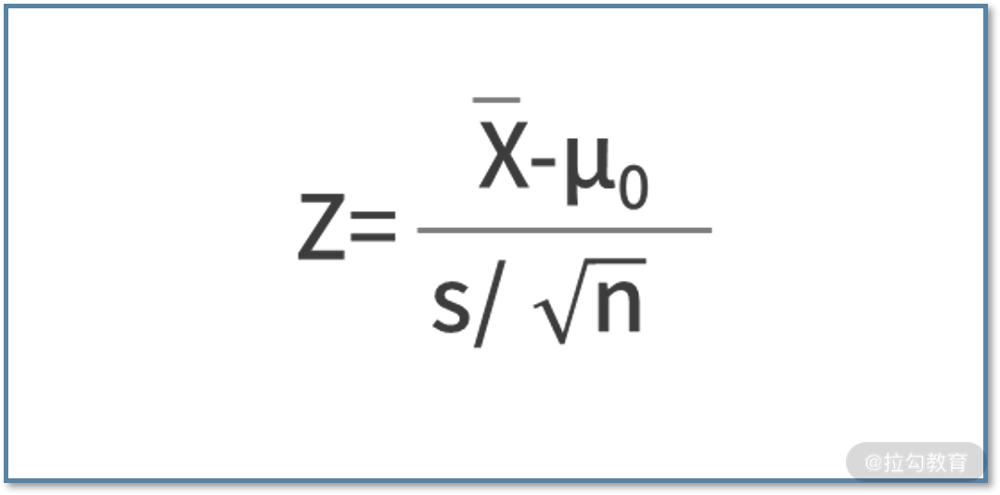
其中 μ0 就是假设的均值；若有 AB 实验， μ0 则为对照组的均值。
接着，就需要根据 Z 的值，查下面的 Z 统计量分布表得到显著性 p的值了，显著性 p 的物理含义是观测结果是偶然得到的概率。
 Z 统计量分布表
Z 统计量分布表
【如何看 Z 统计量分布表】
这个表其实是个大矩阵，矩阵的行标签和列标签之和，就是 Z 统计量。而矩阵中每个数字，代表了观测结果不是偶然发生的概率。
例如，利用第 2 行、第 3 列的数值，可以计算出 Z 为 0.12 的显著性水平（Z 统计量分布表中绿框部分）。
通常，人们选择表中 0.9750 作为临界值（图中上面的红色框）；也就是说，Z 统计量的临界值是 1.96。人们常常根据 Z 统计量的绝对值与 1.96 的关系来判断是否显著，即绝对值大于 1.96 则认为显著，反之亦然。
之所以选择 0.9750，是因为此时的显著性为 0.05 时，即观测结果是偶然发生的概率为 5%。这里 0.05 计算而来的公式是 (1-0.9750)×2 = 0.05，这个公式背后的含义涉及正态分布的累积概率的计算，在此我们不展开说明，感兴趣的同学可以自己查阅相关的统计学教材。
上面的理论可能比较枯燥，我们下面结合一个例子，来加深对理论的理解。
【例题2】假设某工厂加工一种零件。根据经验知道，加工出来的零件的长度服从正态分布，其总体均值为 0.081mm。现在，换了一种新机床进行加工，取 200 个零件进行检验，得到长度的均值为 0.076mm，这 200 个样本的标准差为 0.025mm。问新机床加工出来的零件的长度，其均值与以前是否存在显著差别？
解析：新机床得到的零件，均值比以往要略小。那么问题来了，这里的“略小”是偶然得到的，还是显著存在的呢？我们可以通过假设检验的方法进行论证。
由题可知，总体的均值 μ0= 0.081，总体的标准差未知。采样的数量为 n = 200，采样的均值x̅= 0.076，采样的标准差 s = 0.025，因此可以根据第二种方法，来计算 Z 统计量： 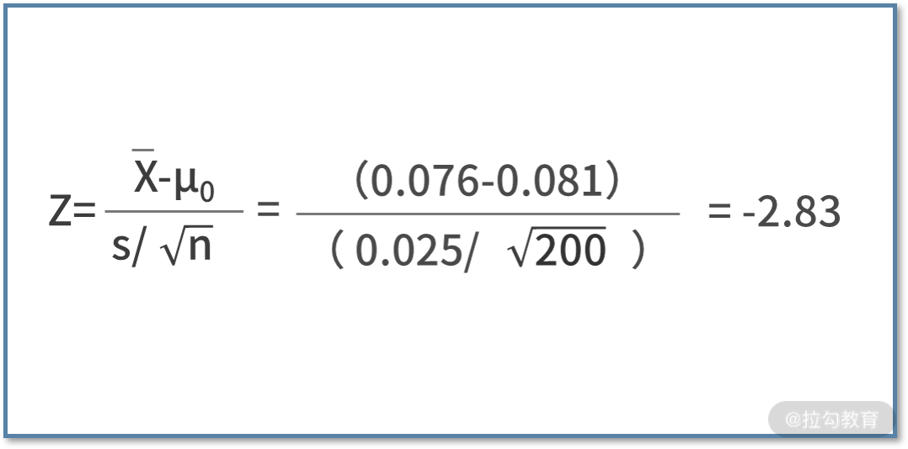 接下来我们需要查 Z 统计量分布表来判断是否存在显著性差异，而此时 Z = -2.83（Z 统计量分布表中蓝框部分），负号表示要检验的结果比对照基线小。由于 |Z| > 1.96，所以 p<0.05，差异显著。从统计学的视角来说，我们有理由相信此时的差异并不是偶然得到。
综上可见，论证结果是否为偶然得到的关键，取决于 Z 统计量的值。Z 统计量的值，又与均值的差值、采样的标准差和采样数量有关系。均值差异越大、采样标准差越小、采样数量越多，则结果越显著、越不可能是偶然得到的。
利用“均值假设检验”论证实验结果是否为偶然得到
刚刚讲解的 “均值假设检验”可以论证“两个均值”的偏差是否为偶然得到的。我们将它对应到 AB 实验中，会发现其中一个“均值”是总体的均值，就像是 AB 实验中的对照组；另一个“均值”是抽样的均值，就像是 AB 实验中的实验组。
所以有了“均值假设检验”的理论基础，你就可以论证并回答，实验组相对对照组的差异是否为偶然得到的。
我们继续以大漂亮的推荐系统 v2.0 为例。下面是先前的实验观测数据，但很容易被人质疑是否为偶然得到。接下来，我们就来用均值假设检验，来论证实验结果是否显著。我们以人均点击量为例展开论述。
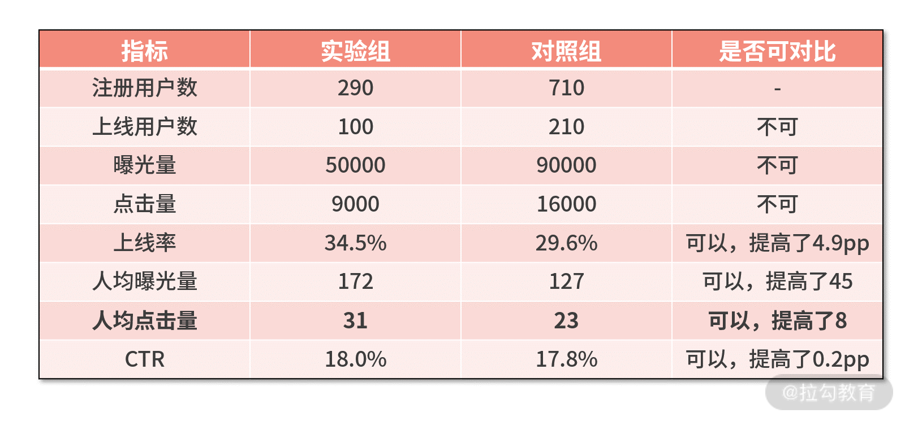
围绕刚刚讲过的 Z 统计量的公式，我们先需要帮助大漂亮找到这些参数的值。
 从公式出发，光有个实验组人均点击量为 31，对照组人均点击量为 23，肯定是不够的，至少是需要构建 n 个人均点击量才行。因此，我们考虑把为期一周的实验，切分为每一天来统计 7 个指标。
从公式出发，光有个实验组人均点击量为 31，对照组人均点击量为 23，肯定是不够的，至少是需要构建 n 个人均点击量才行。因此，我们考虑把为期一周的实验，切分为每一天来统计 7 个指标。
具体地计算每天的点击量，并根据注册用户数，计算每天的人均点击量，则有

- 此时，我们就有了人均点击量的 7 个采样样本，即 n = 7。
- 接下来，对这 7 个样本求平均值，则有 x̅= (4.14+4.31+5.17+3.79+4.31+4.48+4.83) / 7 = 4.43。
- 再计算对照组的采样平均值，则有 x̅0 = (3.10+2.82+3.38+3.24+3.52+3.10+3.38) / 7 = 3.22。根据中心极限定理，可以用采样的平均值，作为总体平均值的估计值，则有 μ0=x̅0= 3.22。
- 同时，还可以根据实验组的 7 个采样值，计算出实验组的标准差，即
- 最后，我们利用上述信息，来计算 Z 统计量的值，则有

很显然，这里的结果比我们的临界值 1.96 更大，结果是显著的，并不是偶然得到的。
小结
这一讲，我们学习了统计学的知识“中心极限定理”和“均值假设检验”，并将它应用到工作中，用来论证 AB 实验的结果是否为偶然得到。
我们了解到，中心极限定理构建了样本和总体之间的桥梁，让我们找到抽样的统计量和总体的统计量之间的关系。
然后“均值假设检验”又可以论证“两个均值”的偏差是否为偶然得到。我们将其对应到 AB 实验中，会发现其中一个“均值”是总体的均值，就像是 AB 实验中的对照组；另一个“均值”是抽样的均值，就像是 AB 实验中的实验组。所以便可以论证并回答，实验组相对对照组的差异是否为偶然得到的。这时的关键步骤，就是根据公式来计算 Z 统计量的值，并判断。
最后，我们给出一个练习题：利用下面的数据，计算 CTR 的差异是否显著。 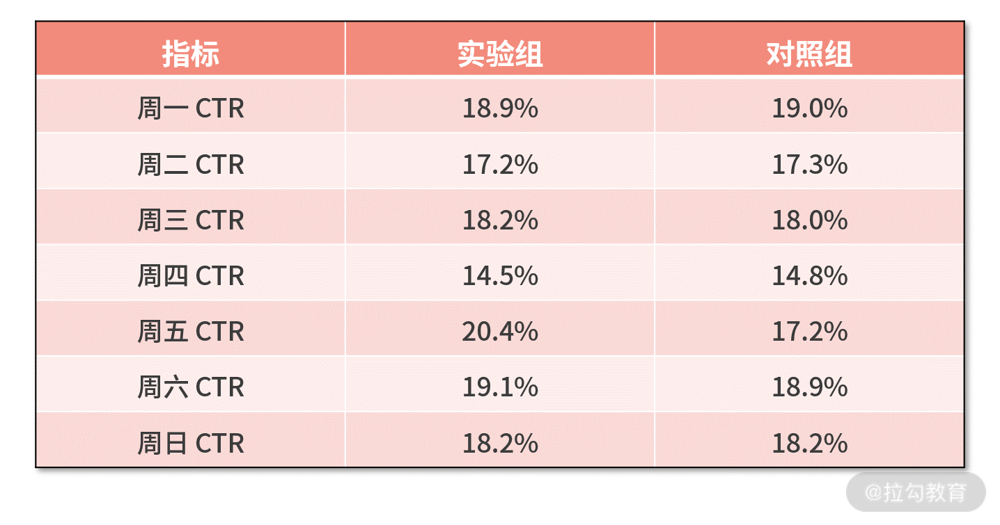
13 复杂度：如何利用数学推导对程序进行优化？
这一讲开始，我们进入到这个专栏“模块三 数据结构与算法”的学习，在这个模块，我们会重点学习数学与算法、代码之间的关系。
在一个程序开发的过程中，常常需要我们去关注程序的复杂度。这一讲，我们就先从复杂度出发，来看看数学的思想是如何应用在程序复杂度优化的。
程序的时间损耗
程序就是计算机执行运算动作的指令，运算就是对数据进行的处理。
例如，1+2 这样的加法运算，就是对两个数据 1 和 2 执行加法的处理。同样地，加法运算还可以针对更多的数据，比如 1+2+3+...+50，这就是对 1～50 这 50 个数据，执行加法运算的处理。
当我们用计算机指令，也就是程序，执行 1+2 这样的运算时，可能在毫秒，甚至更短的时间内就能得到结果。然而，当数据量变大时，执行的时间就会越来越长。
我们看一个例子，下面一段代码的任务，是给定一个正整数 n，计算从 1～n 之间所有整数之和。
import time
import sys
t1 = int(time.time()*1000000)
n = int(sys.argv[1])
result = 0
for i in range(n):
result += i
t2 = int(time.time()*1000000)
print t2 - t1
我们对代码进行走读：
- 第 4 行，记录了程序开始执行的毫秒级时间戳；
- 第 5 行，得到输入参数 n；
- 第 7～8 行，执行 1 加到 n 的循环求和；
- 第 9 行，记录了程序结束计算的毫秒级时间戳；
- 最后，第 10 行打印出程序执行的时间损耗。
当输入分别是 100、1000 和 10000 时，程序的执行结果如下图所示：

由图可见，数据量越大，程序的时间损耗也就越大。
程序的复杂度
开发者在编写代码时，除了实际的时间损耗外，还有个重要概念就是复杂度。复杂度是衡量程序效率的重要指标，也是工程师的必备技能。
在实际工作中，通常会重点关注时间方面的复杂度，也叫时间复杂度。这一讲，我们为了简便行文，就把时间复杂度简称为复杂度。
从本质上来看，复杂度描述的是程序时间损耗和数据总量之间的变化关系。
【例 1】我们先举一个例子说明，看下面这段代码：
a = [1,2,2,3,4,5]
result = 0
for i in range(len(a)):
result += a[i]
print result
这段代码执行的内容是采用了一个 for 循环，来求 a 数组所有元素之和。
根据代码执行的顺序可知，第 1～2 行分别执行 1 次后，进入了第 3～4 行的 for 循环；这个 for 循环需要被反复执行 len(a) 次，也就是 6 次；最后，再执行 1 次第 5 行的代码。
可以估算出，程序执行的时间损耗为 t(总时间) = t(第1,2,5行) + 6t(第3,4行)，更泛化的写法是 t=c+n×b。
其中 t 代表代码执行损耗的时间，c 和 b 分别是两个常数，而 n 是决定循环次数的数据量的大小。可见，随着 n 的变大，t 以线性的关系变大。
【例 2】我们再看一个例子，代码如下：
a = [1,2,2,3,4,5]
result = 0
result = a[0] + a[-1]
print result
这段代码计算的是数组 a 第一个元素与最后一个元素之和。
具体来看，第 1 行定义数组 a，第 2 行定义变量 result；第 3 行，直接取出数组的第一个元素和最后一个元素，并且求和；最后，第 4 行打印结果。
可以估算出，程序执行的时间损耗为 t(总时间) = t(第1,2,3,4行)，更泛化的写法是 t = c。
其中 t 代表代码执行的时间损耗，c 是个与数组 a 大小无关的常数。可见，无论数组 a 的长度很大还是很小，执行的时间损耗都不会受到影响。
从上面的两个例子，我们就能对复杂度有更深入的理解了。
【深入理解复杂度】
复杂度是程序时间损耗和数据总量之间的变化关系，通常用 O(f(n)) 来表示，其中 f(n) 就是复杂度函数。
如果程序的时间损耗和数据量的关系是 t=c+n×b，也就是说复杂度函数为 f(n)=c+n×b。复杂度通常不关注常数，因为它是个固定的时间损耗，与输入的数据总量没有任何的关系。因此，复杂度函数 c+n×b 可以忽略常数 c 和 b，直接缩写为 f(n) = n，即第一个例子的复杂度为 O(n)。
如果程序的时间损耗和数据量没有关系，即 t=c，我们依然会忽略这个常数，直接用 O(1) 来表示。
复杂度的性质和代码结构
有时候，复杂度函数会非常复杂，例如下面的代码：
a = [1,2,2,3,4,5]
index_max = 0
times_max = -1
for i in range(len(a)):
times_temp = 0
for j in range(len(a)):
if a[i] == a[j]:
times_temp += 1
if times_temp > times_max:
times_max = times_temp
index_max = i
result = a[index_max]
for k in range(len(a)):
result += a[k]
print result
这段代码的任务是寻找出数组 a 中出现次数最多的元素 a[index_max]，再计算出 a[index_max] 与数组 a 中所有元素的求和。
我们对代码进行走读。
- 第 4～11 行，有两层 for 循环。我们具体算一下时间损耗，t(4～11行) = 6×[t(第4,5行)+t(6～8行)+t(9～11行)]。
- 而程序的第 6～8 行，又是一个 for 循环，则有 t(6～8行) = 6×t(第6,7,8行)
- 因此，整体的时间损耗为 t(4～11 行)= 6×[t(第4,5行) + 6×t(第6,7,8行)+ t(9～11行)] = n×n×b + n×c + n×d。
其中，n 为数组 a 的长度，即数据量；b、c、d 分别是第 6、7、8 行执行的时间，第 4、5 行执行的时间，以及第 9～11 行执行的时间，并且它们与输入的数据量无关，可以视作常数。
利用忽略常数的原则，则有 t = n2 + n + n = n2 + 2n；还可以继续忽略常数“2”，则有 t =n2+ n；根据数学中的平方公式，还有 t =n2 + n = (n + 1/2)2 - 1/4。此时，仍然可以把与 n 无关的系数“1/2”和“1/4”忽略掉，则有 t = n2。因此，程序的第 4～11 行是 O(n2) 的时间复杂度。
- 而第 14～15 行，根据前面所学是 O(n) 的时间复杂度。所以，整个代码的时间复杂度就是 O(n2+n)。仍然可以继续使用刚刚平方公式的化简方法，得到最终的时间复杂度是 O(n2)。
从这个例子，我们可以发现，多项式级的复杂度相加时，可以选择高者作为结果。 例如，O(n2+n) 的时间复杂度，可以直接写为 O(n2)。
复杂度的性质都来自数学的推导，与此同时，复杂度的计算还与程序的结构有着密切关系。通常而言，一个顺序结构或选择结构的代码的执行时间与数据量无关，复杂度就是 O(1)；而对于循环结构而言，如果循环的次数与输入数据量的多少有关，就会产生复杂度了。
程序的三大基本结构是顺序结构、选择结构和循环结构，如果忘了，可以复习一下 C 语言。
通常，一层循环的时间复杂度是 O(n)；如果是两个循环的嵌套，时间复杂度是 O(n2)；如果是三个循环的嵌套，则是 O(n3)；依次类推。
利用数学来优化时间复杂度
设想一下，如果一段线上代码在输入变量很多的时候就会“卡死”，那么这一定是一款无法上线的系统。因此，时间复杂度的优化，是每个开发者必须具备的技能。
其实，时间复杂度的优化有很多办法。除了优化数据结构、优化代码结构、减少程序中不必要的计算等通用方法以外，还可以利用强大的数学知识来进行时间复杂度的优化。
我们来举几个例子。
我们在开篇词中讲了一个异或的案例。在一个无序的数组中，只有一个数字 obj 出现了一次，其他数字都出现了两次，尝试去查找出这个出现了一次的 obj。绝大多数程序员的代码逻辑，应该都是设计两层 for 循环：一层遍历每个数字，一层计算每个数字出现的次数，直到找到 obj。
代码如下：
a = [2,1,4,3,4,2,3]
for i in range(0,len(a)):
times = 0
for j in range(0,len(a)):
if a[i] == a[j]:
times += 1
if times == 1:
print a[i]
break
我们对代码进行走读：
- 第 2 行，开始 for 循环，并把计数的变量 times 置为 0；
- 第 4 行，嵌套了一个 for 循环；
- 第 5 行开始，判断里外两层循环的值是否相等。如果相等，则 times 加 1；
- 第 7 行，判断 times 是否为 1，如果为 1 说明 a[i] 在数组中只出现了一次，则打印并 break 跳出循环结束。
根据我们前面的结论，这段代码的复杂度是 O(n2)，而且单独借助数据结构等思想已经很难再进行程序的优化了。
然而，如果从数学视角来看，这段代码就可以进行如下优化：
a = [2,1,4,3,4,2,3]
result = a[0]
for i in range(1,len(a)):
result = result ^ a[i]
print result
在这里，利用了异或运算的性质：
- 第一，满足交换律和结合律；
- 第二，可以把相同元素计算为 0；
- 第三，0 异或任何数字都是其本身。
这样，只要把数组 a 中所有元素都异或在一起，就得到了 obj。此时，只需要一层 for 循环，复杂度是 O(n)。
我们再看下面一个例子。输入一个正整数 n，求不大于 n 的所有偶数之和。例如输入 6，则输出 2、4、6 之和，为 12；输入5，则输出 2、4 之和，为 6。
这个题目的常规解法，是采用 for 循环，让 i 从 1 遍历到 n。如果 i 为奇数，则 continue；如果为偶数，则加到 result 变量中。不难发现，复杂度是 O(n)，代码如下：
import sys
n = int(sys.argv[1])
result = 0
for i in range(n+1):
if i % 2 == 0:
result += i
print result
我们再从数学的视角来看待这个问题，你就会发现这是个等差数列求和的问题，等差数列求和的公式为
其中 a1 为首项，n 为项数，d 为公差，前 n 项和为 Sn。
利用这个公式，我们可以直接写出下面的代码：
import sys
n = int(sys.argv[1])
a1 = 0
d = 2
nn = n/2 + 1
print nn * a1 + 2 * nn * (nn - 1) / d
我们对代码进行走读。
- 第 2 行，获得输入变量 n。
- 第 3 行，求和的第一项，直接赋值为 0。
- 第 4 行，公差 d 为 2。
- 第 5 行，求项数。例如，输入 6，则项数为 0、2、4、6，6/3+1 = 4 项；输入 5，则项数为 0、2、4，5/2+1 = 3 项。
- 最后第 6 行，调用等差数列求和公式，直接得到结果，运行截图如下：
这段代码的执行与输入数据量 n 毫无关系，因此复杂度是 O(1)。
同样的道理，等比数列求和的代码，如果用计算机程序开发的思想，是需要一个 for 循环在 O(n) 复杂度下完成计算的。但借助等比数列求和公式，你只需要 O(1) 的复杂度就能得到结果。在这里，我们作为课后习题不再赘述。
小结
复杂度是程序开发中老生常谈的话题了。时间复杂度衡量的是程序执行时间与数据量之间的关系。在计算复杂度的时候，通常常数是可以被忽略掉的。如果是多项式的求和，通常只保留最高次幂一项，其他都可以省略。
复杂度与代码结构息息相关。for 循环嵌套的越多，复杂度就会越高。如果你的数学知识非常渊博，从数学的角度来降低代码复杂度也是一个不错的选择。
最后，我们留一个练习题：输入一个正整数 n，求不大于 n 的所有 2 的正整数次幂的数字之和。例如，输入 17，则输出 1+2+4+8+16 = 31；输入 8，则输出 1+2+4+8 = 15。你可以尝试两种方法来开发，分别是 O(n) 复杂度的 for 循环，和 O(1) 复杂度的等比数列求和公式。
14 程序的循环：如何利用数学归纳法进行程序开发？
我们在上一讲提到程序有顺序、选择、循环这三大基本结构，而在这其中，循环是处理复杂运算最有效的一种结构。
循环结构可以用短短几行代码，执行成千上万次的运算。从计算机编程的视角来看，循环结构又有三种实现方法，分别是 for 循环、while 循环和 do while 循环；而从数学视角来看，循环结构很像是数学归纳法。
所以这一讲，我们就从数学的视角来重新看待循环结构。
从“多米诺骨牌”看循环归纳思想
在多米诺骨牌的游戏中，游戏者手动推倒第一个骨牌，接着第一个骨牌就会撞倒第二个骨牌，第二个骨牌还会撞倒第三个骨牌。以此类推，即使骨牌数量再多，也会逐一被放倒。
我们对多米诺骨牌全部放倒的结果进行剖析，你会发现它成立的条件有以下两个：
- 第一，对于任意第 i 个骨牌而言，它的倒下能带动第 i+1 个骨牌倒下；
- 第二，有一个参与游戏的人手动推倒第一个骨牌。
只要这两个条件都满足，就能让全部的骨牌都倒下。
“循环”的思想也存在我们的古文化中，《愚公移山》的“虽我之死，有子存焉。子又生孙，孙又生子；子又有子，子又有孙；子子孙孙无穷匮也。”简而言之就是，我有儿子，我儿子也有儿子，我儿子的儿子也会有儿子。以此类推，子子孙孙无穷尽。
在这其中不难发现，子子孙孙无穷匮的条件也有两个：
- 第一，任意一代男子（或者说是儿子），都要再生至少一个儿子；
- 第二，愚公有个儿子。
只要这两个条件都满足，就可以做到子子孙孙无穷匮也。
数学归纳法
对这两个例子的两个条件进行抽象，你会发现这就是高中学习的数学归纳法，下面我们用数学语言描述一下。
最简单常见的数学归纳法是，用来证明当 n 等于任意一个自然数时某个命题成立，其证明步骤可以分下面两步：
- 第一，当 n=1 时，命题成立；
- 第二，假设对于任意一个数字 i 命题成立，可以推导出在对于 i+1，命题依然成立。
只要这两个条件都满足，命题就得证。
例如，要证明所有的多米诺骨牌能倒下，也就是要证明游戏者手动推倒第一个骨牌，且任意一个骨牌倒下能带动下一个骨牌倒下。又比如，要证明愚公子孙无穷匮，也就是要证明愚公有儿子，愚公任意一代后代，至少有一个儿子。
接下来，我们利用数学归纳法来处理两个真实的数学问题。
【例 1】证明对于任意一个正整数 n，它的 2n 是偶数。
- 第一步，当 n=1 时，2n = 2×1 = 2 是偶数。
- 第二步，假设对于某个正整数 i 而言，2i 是偶数，则 2(i+1)=2i+2。其中 2i 为偶数，2 为偶数，两个偶数之和也是偶数，因此 2(i+1) 也是偶数。
根据数学归纳法可以知道，对于任意一个正整数 n，2n 是偶数，原命题得证。
【例 2】求证 1+3+5+...+(2k-1) = k2，我们依然可以用数学归纳法的思路来证明。
- 第一步，当 k=1 时，1=12 成立。
- 第二步，假设对于任意一个正整数 i 而言，1+3+5+...+(2i-1) = i2，则 1+3+5+...+(2i-1)+[2(i+1)-1] = i2+[2(i+1)-1] = i2+2i+2-1 = i2+2i+1 = (i+1)2 原命题依然成立。
因此 1+3+5+...+(2k-1) = k2 这一原命题成立。
综上这两个例子，你会发现它们都是要证明“下一张多米诺骨牌”能够倒下，也就是在证明“i 推进到 i+1 的过程”。具体而言，这两个例子的第二步都分别在求证 2(i+1) 是偶数，以及 (i+1)2 成立，这种数学归纳的思想在循环结构中可以得以体现。
循环结构
程序中的循环结构完全可以用来表达数学归纳法，利用数学归纳法来处理的数学问题，可以被无缝迁移到一个循环结构的程序中。
我们在大学 C 语言的课程中曾经学过，循环结构的实现方法有三种，分别是 for 循环、while 循环和 do-while 循环。为了简洁，下面我们定义 s1 是初始表达式，s2 是条件表达式，s3 叫作末尾循环体，s4 是中间循环体，并将其代入这三个循环结构中，对比学习它们之间的联系与不同。
1.for 循环
for 循环的代码结构如下：
for(s1;s2;s3)
{
s4;
}
如刚刚所定义的，s1 是初始表达式，s2 是条件表达式，s3 叫作末尾循环体，s4 是中间循环体。 for 循环的执行顺序是 s1、(s2,s4,s3)、(s2,s4,s3)、...、(s2,s4,s3)、s2。
例如，求解 1 到 50 所有整数之和，可以用 for 循环这样编写代码：
int result = 0;
for(int i= 1; i <= 50; i++)
{
result += i;
}
这段代码的 i=1 对应的是 s1 初始表达式，i≤50 对应的是 s2 条件表达式，i++对应的是 s3 末尾循环体，最后第 4 行运算对应的是 s4 中间循环体。 这段代码的执行顺序如下：
- 先执行 i=1，再判断 i≤50 与否，如果为真，则执行第 4 行的运算，最后执行 i++；
- 接着循环，再判断 i≤50 与否，如果为真，则执行第 4 行的运算，最后执行 i++；
- 经过多次循环后，再判断 i≤50 与否，直到结果为假，跳出循环结束。
for 循环还有很多变种，具体而言就是 s1、s2 和 s4 都可以被省略或部分省略。围绕上面的例子，s1 的定义可以单独抽出来放在第 2 行；而 for 循环语句中，可以空出 s1 的部分，这样新的代码可以写作：
int result = 0;
int i= 1;
for(; i <= 50; i++)
{
result += i;
}
根据代码执行的顺序，可以发现 s3 的执行永远是在 s4 之后。因此，可以把 s3 和 s4 写在一起，再把 s4 的位置空出来，这样新的代码可以写作：
int result = 0;
int i= 1;
for(; i <= 50; )
{
result += i;
i++;
}
同样，s2 的执行永远在 s4 之前，也就意味着s2 可以被放在循环体中的 s4 之前，而把 for 语句中 s2 的位置空闲出来。但最后一次的 s2 执行，还肩负着结束循环的任务，因此需要结合 if 条件判断语句和 break 语句，完成最后跳出循环的实现，这样新的代码可以写作：
int result = 0;
int i= 1;
for(; ; )
{
if (i > 50){
break;
}
result += i;
i++;
}
2.while 循环
循环的另外一个实现方式是 while 循环，while 循环的代码结构如下：
while (s2)
{
s4;
}
如刚刚所定义的，s2 是条件表达式，s4 是中间循环体。
while 循环的执行顺序是 (s2,s4)、(s2,s4)...(s2,s4)、s2。具体而言，是首先判断 s2 是否成立，如果为真，则执行 s4；继续循环判断 s2 是否成立，如果为真，则执行 s4；如此循环多次后，直到 s2 不再成立，跳出循环结束。
我们继续使用 while 循环来实现 1～50 所有整数求和，代码如下：
int i = 0;
int result = 0;
while (i < =50)
{
result += i;
}
同样地，如 for 循环一样，while 循环也有一些变种。具体而言，s2 也是可以被省略而用其他方法实现。从循环执行的顺序可以发现，s2 的执行总是在 s4 之前；而最后一次 s2 的执行，需要肩负起跳出循环的任务。
这就需要 if 条件语句和 break 语句了，这样变形之后的代码为：
int i = 0;
int result = 0;
while (1)
{
if (i > 50){
break;
}
result += i;
}
3.do while 循环
最后一种循环实现的方法是 do while 循环，do while 循环的基本结构如下：
do {
s4;
}while(s2);
如刚刚所定义的，s2 是条件表达式，s4 是中间循环体。
do while 循环与 while 循环相比，区别就是执行顺序的调整。do while 循环中，无论 s2 是真是假，都会至少执行一次 s4。这样它的执行顺序就是 (s4,s2)、(s4,s2)...(s4,s2)。
具体而言就是：先执行s4，再来判断 s2 是真是假，如果为真，则执行 s4；再来判断 s2 是真是假，如果为真，则执行 s4；再来判断 s2 是真是假……如此循环多次之后，直到 s2 为假，跳出循环结束。
我们仍以 1～50 所有整数求和为例，看一下 do while 语句实现的代码：
int i = 1;
int result = 0;
do {
result += i;
}while(i <= 49);
do while 循环也有一些变种，其 s2 语句也可以被调整到其循环体中，可以考虑用 if 条件语句和 break 语句实现：
int i = 1;
int result = 0;
do {
result += i;
if (i > 49){
break;
}
}while(1);
4.三种循环结构的区别
这三个循环的基本代码结构如下图所示，我们总结一下这三种循环结构的本质不同。
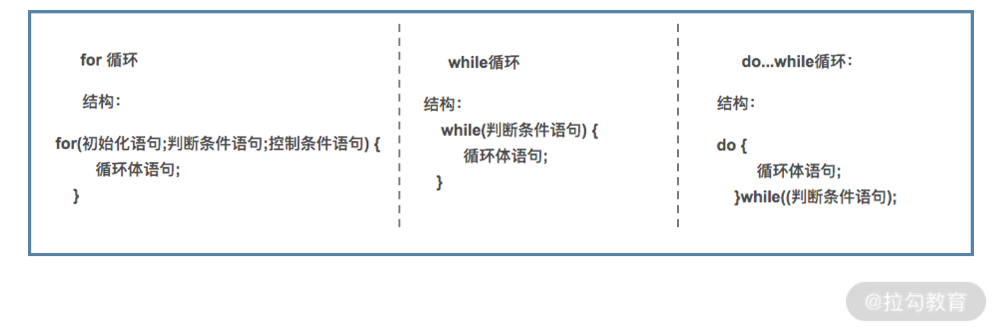
从代码执行的顺序来看，while 循环与 for 循环都是先判断条件，再执行循环体。在极端情况下，第一次判断条件就不成功，循环体就有可能一次也不被执行；而 do while 循环则相反，它先执行循环体，再判断条件，因此循环体至少会被执行一次。
从编码的视角来看，while 循环和 do while 循环，在条件判断的括号中只需要写循环条件；而 for 循环则循环变量赋初值、循环条件、循环变量改变方式都写在一起。
最后，从功能上来看，这三个循环结构完全一致，是可以彼此切换的。你可能会有这样的困惑：do while 循环至少会执行一次循环体，它如何能被其他循环结构替代呢？这就要借助 break 语句提前跳出循环体了，具体如何切换，我接下来就要讲解。
三种循环实现的切换
在不考虑代码结构的美观时，这三种循环语句可以在功能上实现彼此之间的切换，我们以 for 向 while 和 do while 的切换为例。
如下是任意一个for 循环语句：
for(s1;s2;s3)
{
s4;
}
其执行顺序为 s1、(s2,s4,s3)、(s2,s4,s3)...(s2,s4,s3)、s2。
它可以用下面的 while 循环语句来实现其功能：
s1;
while(s2)
{
s4;
s3;
}
根据 while 语句的执行顺序可知，这段代码的执行顺序为 s1、(s2,s4,s3)、(s2,s4,s3)...(s2,s4,s3)、s2，因此可以得知，两段代码的功能结果完全一致。
而如果非要采用 do while 循环，可以按照如下方式实现：
s1;
do {
if(!s2)
{
break;
}
s4;
s3;
}while(1);
在这里，我们补充一下 break 语句的知识。break 语句的作用是，终止并跳出循环，继续执行循环语句后续的代码。
以上面的代码为例，一旦第 3 行的条件判断通过，则需要执行 break 语句。break 语句会帮助程序跳出当前循环，这样程序就会从第 4 行跳转至第 10 行继续执行。基于 break 语句，再根据 do while 语句的执行顺序可知，这段代码的执行顺序为 s1、(s2,s4,s3)、(s2,s4,s3)...(s2,s4,s3)、s2，因此可以得知两段代码的功能结果完全一致。
这里要给大家提个醒：如果是在技术面试时，千万不要说某某功能的开发，只能用 for 循环、while 循环或 do while 循环，这一定是错的。因为，功能上这三种循环的实现是完全可以实现互换的；只不过，三者在代码美观上可能是有所区别。
数学归纳法与循环结构
数学归纳法和循环结构有很多相似之处，它们都是从某个起点开始，不断地重复执行某个或某组相似的动作集合。
不过，二者也有一些区别：
- 数学归纳法不关注归纳过程的结束，它就是用一种重复动作，由有穷尽朝着无穷尽的方向去前进；
- 而循环结构作为一种程序开发逻辑，则必须要关注循环过程的结束，否则就会造成系统陷入死循环或死机。
接下来，我们试着把一个数学归纳法的计算过程，用循环结构改写。为了让二者没有区别，我们对数学归纳法的问题增加一个截止条件的限制，那就是 k 小于 100 时。
这道例题是：证明在 k<100 时，1+3+5+... +(2k-1) = k2 成立。
我们说过，用数学归纳法来证明这个问题需要两个步骤，分别是：
- 证明 k=1 时等式成立；
- 假设 k=i 时等式成立后，k=i+1 等式依然成立。
我们把这两个步骤进行拆解。
令 s1 为 k=1，s4 为等式成立，s3 为 k=i 或 k=i+1，再补充题目的终止条件 k<100 为 s2。这样，根据 for 循环执行的逻辑，把这些动作按照 s1、(s2,s4,s3)、(s2,s4,s3)...(s2,s4,s3)、s2 串联起来，就得到了基本的 for 循环代码框架。
- 在这个框架中，最开始的 s1、s2、s4，即为当 k=1 时等式成立，对应数学归纳法的第一步。
- 在这个框架中，任意相邻的两组(s2,s4,s3)、(s2,s4,s3)，就是假设 k=i 时等式成立后，k=i+1 等式依然成立，对应数学归纳法的第二步。
也就是说，此时的数学归纳法证明和 for 循环实现，在功能上是等价的，我们给出 for 循环的代码如下：
int left = 0;
int left_temp = 0;
int right = 0;
for (int k = 1; k < 100; k++) // s1;s2;s3
{
//s4
left_temp = 2 * k - 1;
left += left_temp;
right = k * k;
if (left == right)
{
printf("%d is right!\n",k);
}
}
我们对代码进行走读：
- 代码的前三行定义了 3 个变量，分别是 left、left_temp 和 right，其中 left 和 right 分别用来存储等式两边的结果，left_temp 用来存储公式中每轮增加的一项；
- 第 4 行，进入 for 循环，得到对应的 s1、s2 和 s3；
- 第 6 行，计算出当前一轮的 left_temp 值；
- 第 7 行，把 left_temp 作为增量，增加到 left 的值中；
- 第 8 行，计算等式右侧的 k2 的值；
- 第 9 行，对等式左边和等式右边是否相等做出判断；
- 第 10～12 行进行判断，如果等式相等，打印结果，代码的部分执行结果如下图。
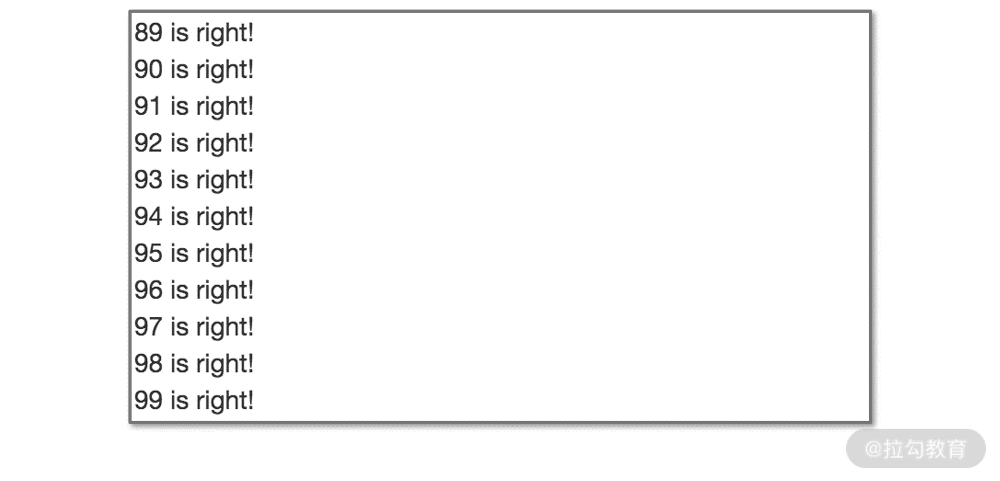
可见原命题得到证明。
小结
这一讲我们学习了数学归纳法的理论知识，以及循环结构的代码开发知识。然后我们从原理上分析了数学归纳法和循环结构的异同，介绍了 for 循环、while 循环和 do while 循环这三种循环结构的实现方法。
最后我们留一个练习题：本讲最后一个例题用 for 循环实现了等式的证明，请你试着分别用 while 和 do while 循环再次实现这段代码的功能。
15 递归：如何计算汉诺塔问题的移动步数？
递归是重要的程序开发思想，比如程序源代码缩进、树形数据结构、XML 语法、快速排序法等都有递归的影子。
那么，递归思维的本质到底是什么呢？递归的理念看似隐讳，实则非常清晰明了。
为了让你由浅入深地理解它，这一讲我会先从“汉诺塔问题”入手，带你找出“递归思维”，然后将其应用在两个经典问题中，让你感受递归的作用及其缺点。
最后，你便会发现递归与上一讲所学的循环有相似之处，我便会在这两者的对比辨析中，带你探讨它们的本质差异。
汉诺塔问题及其代码实现
我们先来看下汉诺塔问题的规则。
假设有 A、B、C 三根柱子。其中在 A 柱子上，从下往上有 N 个从大到小叠放的盘子。我们的目标是，希望用尽可能少的移动次数，把所有的盘子由 A 柱移动到 C 柱。过程中，每次只能移动一个盘子，且在任何时候，大盘子都不可以在小盘子上面。

1.汉诺塔问题解密
这个题目需要一定的窍门，否则只能碰运气去乱走了。
我们先脑补这样一个画面：假设 A 柱子上除了最后一个大盘子（代号“大盘子”）以外，其他的 N-1 个小盘子都合并起来，成为一个新的盘子（代号为“合并盘”）。那这个问题就简单了，只需要把“合并盘”移动到 B 柱，再把“大盘子”移动到 C 柱，最后把“合并盘”移动到 C 柱。
上述过程如下图所示：
在这个过程中，问题由全部 N 个盘子由 A 移动到 C，转变为 N-1 个“合并盘”从 A 移动到 B 再移动 C。新的问题和原问题是完全一致的，但盘子数量由 N 个减少为 N-1 个。如果继续用上面的思想，就能把 N-1 个“合并盘”再度减少为 N-2 个，直到只剩一个。
我们用数学重写上面的过程：令 H(x) 表示把某个柱子上的全部 x 个盘子移动到另一个柱子上需要的步数，那么原问题 N 个盘子由 A 柱子移动到 C 柱子的数学表示就是 H(N)。
根据我们第一次的分解可知 H(N)=H(N-1)+1+H(N-1)。
也就是，把 N 个盘子从 A 移动到 C=把合并盘从 A 移动到 B + 把大盘子从 A 移动到 C + 把合并盘从 B 移动到 C。
再继续分析，你还会得到 H(N-1)=H(N-2)+1+H(N-2)。
……
直到最终 H(2)=H(1)+1+H(1)=1+1+1=3。
我们把这个问题的计算过程整理到下面的表中，并尝试求解 H(n) 的表达式。

因为 H(N)=1+2H(N-1)，所以可以得到 H(N-1)=1+2H(N-2)，把这两个等式两边分别进行相减，则可以得到 H(N)-H(N-1)=2(H(N-1)-H(N-2))。
令 aN=H(N)-H(N-1)，则有 aN=2aN-1，可见 {aN} 是个首项为 1、公比为 2 的等比数列，通项公式为 aN = 2N-1。
接着利用这些信息，我们尝试去推导 H(N)，则有

别忘了 H(1)=1，a1=1，所以 H(1)=a1，则有
 因此如果盘子的数量是 5 个，将 5 代入这个 2N-1，则最少需要 31 步完成移动。
因此如果盘子的数量是 5 个，将 5 代入这个 2N-1，则最少需要 31 步完成移动。
2.汉诺塔问题的代码实现
我们尝试用程序代码来实现汉诺塔问题。不难发现，这里最高频使用的是，把 n 个盘子从某个柱子 x，移动到另一个柱子 z。因此，考虑对这个功能进行函数化的封装，代码如下：
def hanoi(N,x,y,z):
if N == 1:
print x + '->' + z
else:
hanoi(N - 1, x, z, y)
print x + '->' + z
hanoi(N - 1, y, x, z)
我们对代码进行走读。
第 2、3 行，如果盘子数量为 1，则直接把盘子从 x 柱子移动到 z 柱子即可；若不为 1，则进行第 4～7 行的处理。
此时盘子数量超过了 1，则拆分为“合并盘”和“大盘子”两部分。
- 首先，函数调用自己，把“合并盘”从 x 移动到 y；
- 然后，把“大盘子”从 x 移动到 z；
- 最后，函数再调用自己，把“合并盘”从 y 移动到 z。
想象着会很复杂的代码，实际上非常简单，在主函数中只要执行
hanoi(3, 'a', 'b', 'c')
就能打印出把 3 个盘子从 a 柱子移动到 c 柱子的详细步骤。
每一步的移动结果如下图，执行后需要 7 步，这和我们数学上的计算完全一致。
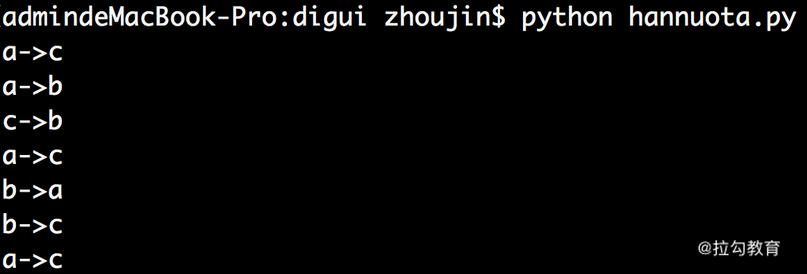
递归——自己调用自己的程序开发思想
汉诺塔问题解法的核心步骤就是：移动全部盘子，等价于移动“合并盘”，加上移动“大盘子”，加上再移动“合并盘”，然后你需要重复执行这个步骤。
用函数表达这个过程，就是 f(全部盘子) = f(合并盘) + f(大盘子) + f(合并盘)。
为了代码实现这个功能，我们定义这个函数为hanoi(N,x,y,z)， 并且在这个函数中，需要调用自己才能完成“合并盘”的移动，这种会调用自己的编码方式在程序开发中，就叫作递归。
严格意义来说，递归并不是个算法，它是一种重要的程序开发思想，是某个算法的实现方式。
在使用递归进行程序开发时，需要注意下面两个关键问题。
- 第一个问题，递归必须要有终止条件，否则程序就会进入不停调用自己的死循环。
有这样一个故事：从前有座山，山里有个庙，庙里有个和尚讲故事；故事是，从前有座山，山里有个庙，庙里有个和尚讲故事；故事是...
这就是一个典型的没有终止条件的递归。在汉诺塔问题中，我们的终止条件，就是当盘子数量为 1 时，直接从 x 移动到 z，而不用再递归调用自身。
- 第二个问题，写代码之前需要先写出递归公式。 在汉诺塔问题中，递归公式是H(N)=H(N-1)+1+H(N-1)，这也是递归函数代码中除了终止条件以外的部分。
对应于“循环结构”中的循环体，这部分代码对于“递归”而言，偶尔也被人称作“递归体”。
递归代码的基本结构如下：
def fun(N,x):
if condition(N):
xxx
else:
fun(N1,x)
我们对这个代码结构进行解析。 对某个函数 fun(N,x) 而言，如果要用递归实现它，代码中至少包括终止条件和递归体两部分。
- 终止条件的判断基于某个入参 N，如果满足，则函数不再调用自己，终止递归；如果还不满足，则进入到递归体。
- 在递归体中，终止条件判断的入参 N 一定会发生改变。通常而言，是变成比 N 小的一个数值N1。只有这样，递归才能慢慢向终止条件靠近。在递归体中，基于新的参数 N1，再调用函数自身 fun(N1,x)，完成一次递归操作。
接着我们带着递归思维，去看一下“阶乘问题”和“斐波那契序列问题”。
递归思维的应用
1.阶乘问题
数学中，阶乘的定义公式为 n!=1×2×...×(n-2)×(n-1)×n。现在请你用递归来写一个函数，输入是某个正整数n，输出是 n 的阶乘。
利用递归写代码时，需要优先处理递归的两个关键问题，那就是终止条件和递归体。
- 对于终止条件而言，当 n=1 时，返回的值为 1!=1。
- 对于递归体而言，需要先写出递归公式。根据阶乘公式的定义可知，当 n>1 时，H(n)=n!=1×2×...×(n-2)×(n-1)×n= [1×2×...×(n-2)×(n-1)]×n=n×(n-1)!= n×H(n-1)。
有了这些信息后，我们可以尝试写出下面的代码：
def jiecheng(n):
if n == 1:
return 1
else:
return n * jiecheng(n-1)
我们对代码进行走读。这段代码的代码量非常少，第 2、3 行判断 n 是否为 1。如果是，则返回1；否则，则跳转到第 5 行，根据递归公式返回 n×(n-1)!，即 n×jiecheng(n-1)。
题目中限定了输入参数 n 为正整数，所以一些异常判断可以被忽略。但如果你追求代码的工程完备性，还可以补充 n 为 0、n 为负数、甚至 n 为小数的一些异常判断。
在这里，我们就不展开了。
2.斐波那契序列问题
在数学上，斐波那契数列定义为 1、1、2、3、5、8、13、21、34…… 。简而言之，在斐波那契数列中，除了前两项以外，后续的每一项都是前面两项之和，而前两项的值都定义为 1。
我们用 F(n) 表示斐波那契数列中的第 n 项的值，例如：
F(1)=1
F(2)=1
F(3)=1+1=2
F(4)=1+2=3
现在希望你用递归来写代码，实现的功能是，输入某个正整数 n，输出斐波那契数列中第 n 项的值。
你可以假设输入的 n 都是合法的，不用做异常判断。
围绕递归的开发逻辑，关键问题仍然是终止条件和递归体：
- 斐波那契数列的终止条件很显然，就是当 n 为 1 或 2 时，返回值就是 1；
- 而它的递归体可以根据斐波那契数列的定义得到，也就是 F(n)=F(n-1)+F(n-2)。
我们把以上定义直接翻译成代码，则有
def fib(n):
if n == 1 or n == 2:
return 1
else:
return fib(n-1) + fib(n-2)
我们对代码进行走读：
- 在第 2 行，判断 n 是否为 1 或 2。
- 如果是，则第 3 行返回 1；
- 反之，则跳转到第 5 行，返回前两项之和，即 fib(n-1)+fib(n-2)。
基于这段代码，主函数中执行 print fib(10)，即计算斐波那契数列的第 10 位，如下图所示，运行结果为 55。 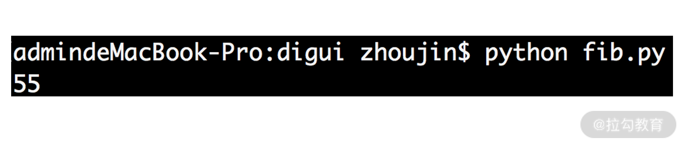
而我们手动计算斐波那契数列的前 10 位发现，结果也是 55，说明我们刚刚的代码实现是正确的。

递归的优缺点
讲完了递归思维在“阶乘问题”和“斐波那契序列问题”中的应用后，我们总结以下递归的优缺点。
递归有很多优势，例如代码结构简单、代码量少、阅读方便、维护简单等；然而递归也有一些缺陷和不足，一个明显的问题就是，递归的计算量非常大，而且存在重复计算的可能性。
我们以斐波那契数列问题为例，把代码进行如下修改：
def fib(n):
if n == 1 or n == 2:
return 1
else:
print "fib: " + str(n-1)
print "fib: " + str(n-2)
return fib(n-1) + fib(n-2)
其中，在第 5、6 行插入两个打印的动作。它们的功能，是每次执行递归体之前，打印出要递归计算的内容。
这样，在主函数运行 fib(10) 时，你会看到下面的部分运行结果： 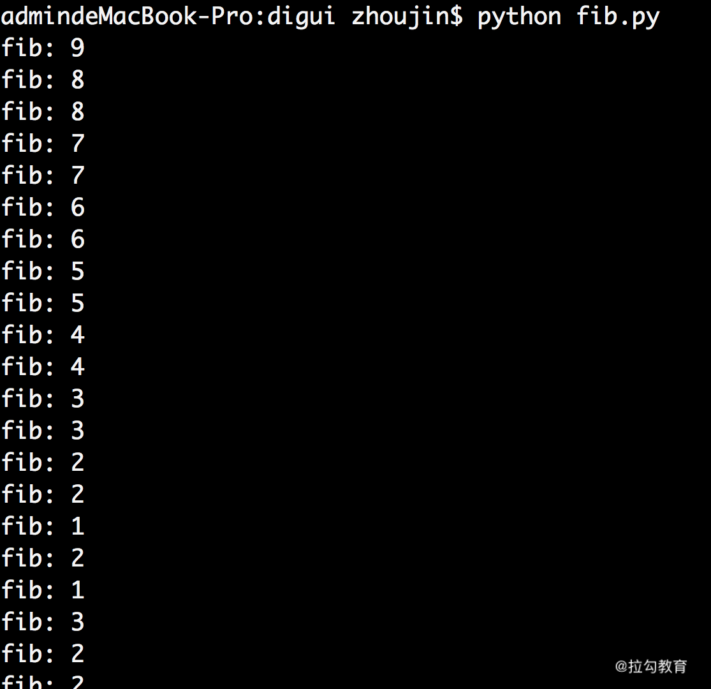
很简单，在执行 fib(9) 时，需要递归计算 fib(8) 和 fib(7)；而 fib(8) 的计算，又需要递归计算 fib(7) 和 fib(6)。很可惜，在得到 fib(7) 的时候，结果并不会进行保存；而另一边，也要计算 fib(7)，这只能再整体进行一次递归计算。
所以，上图中我们能看到计算 fib(10) 的过程中，存在大量重复的递归计算。
重复计算是递归的一个问题，但也并不是绝对会发生，这就需要程序员去综合分析你遇到的具体问题了。
在后面的《17 | 动态规划：如何利用最优子结构解决问题？》我会采用“设置全局变量来缓存中间结果”的方式来避免重复计算，减少计算量。
小结——递归与循环
学完这一讲，你可能会发现，递归和循环比较相像。确实，递归和循环都是通过解决若干个简单问题来解决复杂问题的，它们也都有自己的终止条件和循环体/递归体，都是重复进行某个步骤。
然而，它们也有很多差异性，主要体现在以下两方面。
迭代次数
- 循环对于迭代的次数更敏感，绝大多数场景会定义一个用来计数的变量 i，来控制循环的次数；
- 而递归对于迭代次数不敏感，取决于什么时候满足终止条件。
问题复杂性
不管是循环还是递归，每一轮迭代处理的问题类型都是非常趋同的，但问题的复杂性却不一样。
- 对于循环而言，每一轮处理的问题难度几乎是一样的；
- 而递归则是缩小搜索范围（例如二分查找）的思路，一般而言，每轮处理的问题相对上一轮而言是更简单的。
16 二分法：如何利用指数爆炸优化程序？
正式讲课之前，我先问你这样一个问题，请你尽可能快速回答。
一张 1 毫米厚度的纸，对折几次后，可以达到地球到月球的距离（39 万公里）？
我在写这篇稿子的时候，问了身边的几个朋友。最小的回答是 1 万次，最大的则是 100 万次。
请问在你的直觉下，你的答案又是多少呢？我猜想无论如何都是上万次吧，毕竟我们离月球有 39 万公里呢。
折纸的过程就是 1 变 2，2 变 4，4 变 8，这样一个翻一倍的过程。聪明的你，会发现其实这就是一个关于指数函数和对数函数的问题。
那么，这与我们的编程有什么关系吗？其实基于这个数学原理，编程中有一种分治法的二分策略。这一讲，我们就来讨论一下如何利用指数爆炸来优化程序。
折纸，飞奔到月球
接下来，我们定义下面的数学符号。n 为折叠的次数，h(n) 为纸张对折 n 次后的厚度。显然，每次对折纸张时，厚度都会增加一倍。
不对折时，纸张的厚度为 h(0)=1mm；每次对折纸张时，厚度都会增加一倍；如果将纸对折 1 次，则厚度为 h(1)=2mm；如果对折 2 次，则厚度为 h(2)=4mm；对折 3 次，厚度为 h(3) = 8mm。
我们耐着性子继续往下计算，可以得到下面的对折次数与厚度的关系表。 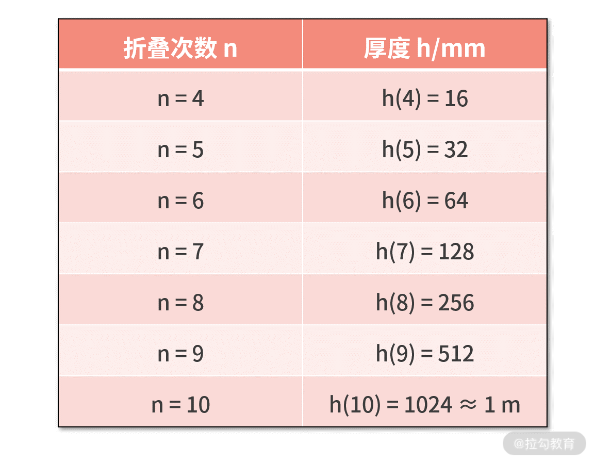 到这里我们发现，对折 10 次后，厚度也不过才刚刚达到 1 m。也许你会不仅感慨，以这样的速度，何时才能到达月球啊。
还是耐着性子，我们继续计算，并整理为下面的表格。区别是，这次我们以米（m）为单位。 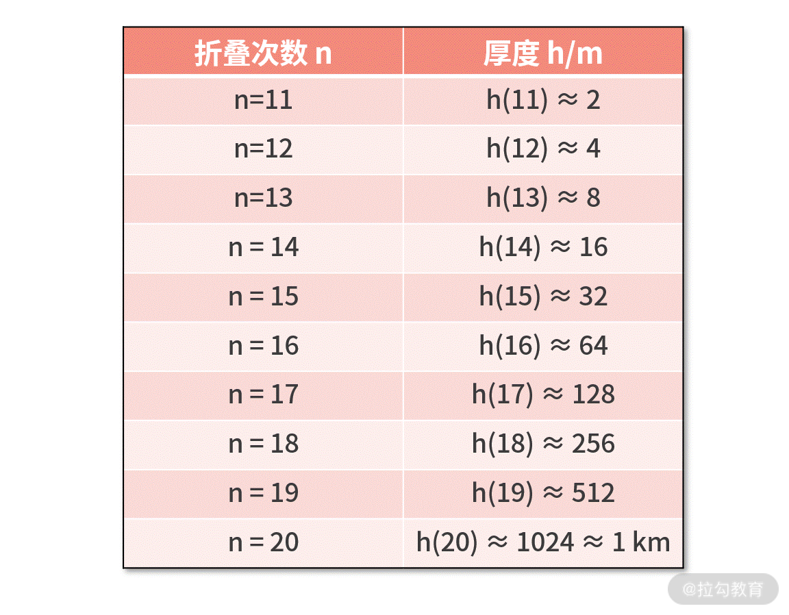 这时候，也许你会发现一些端倪。对折 10 次是 1 m，对折 20 次竟然到了 1 公里，成长速度非常快。
接着，我们继续耐着性子来计算，并整理为下面的表格。区别是，这次我们以千米（km）为单位。 我们知道地球到月亮的距离是 38 公里，也就是 3.8×105km，对折 30 次后，厚度竟然已经达到了 103km。虽然离月球仍然很远，但结合这个增长速度，感觉已经快到月球了。
我们继续耐着性子来计算，并整理到下面的表格中。区别是，这次我们以 103km 为单位。 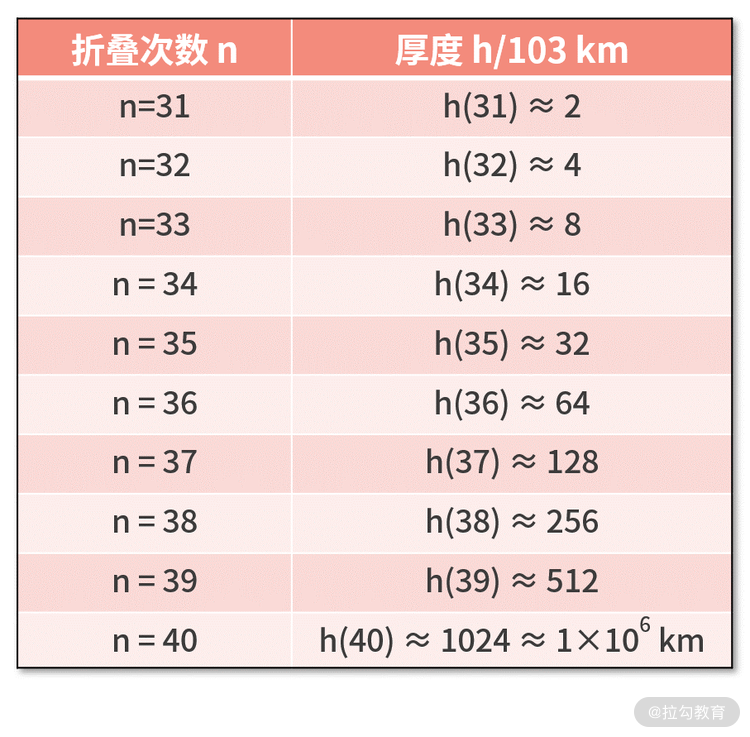 此时，你就会看到一个惊天结果。对折 40 次后，厚度达到了 106km。这已经超过了地月距离的 3.8×105km！往回看你会发现，在对折第 39 次时，厚度就已经开始超过地月距离了。原本猜测的至少要对折 10 万次，竟然只需要 39 次就到达了月球。
【飞奔到月球的代码实现】
为了仔细验证上面的结果，我们还可以把 h(n) 当作是一个数列。显然，它是一个首项为 1，公比为 2 的等比数列，它的通项公式为 h(n)=2n (mm)。
如果要计算折叠多少次厚度可达地月距离（约为 3.8×1011mm），可以对上面式子两边，同时取关于 2 的对数，则有 log22n= n = log2(3.4×1011) ≈ 38.47。
因此在第 38 次折叠时，厚度还没有到达月球；但是第 39 次对折时，纸张厚度就可以突破地月距离。
对这个问题，我们可以用以下代码实现计算：
a = 1
h = a
times = 0
while h < 380000000000:
h = h * 2
times += 1
print times
代码含义为：
- 第 1 行，定义纸张厚度为 1mm；
- 第 2、3 行，定义对折 0 次时，厚度为纸张厚度 1mm；
- 第 4 行，判断当还没有到达月球时；
- 第 5 行，执行对折的操作，厚度为原来的两倍；
- 同时第 6 行，对对折次数进行加 1 的操作。
直到达到月球后，跳出循环，并打印出到达月球的次数。

上图中的程序运行结果与刚刚我们的计算一致，都为 39 次。
指数爆炸的反向应用——二分查找
在计算机中，上面的现象也被称作“指数爆炸”。你可以理解为，某个看似不起眼的任务，每次以翻倍的速度进行增长，很快就会达到“星星之火可以燎原”的爆炸式效果和影响面。显然，指数爆炸性质的问题如果在程序中发生，会让系统迅速瘫痪。
不过，如果可以把指数爆炸的思想反过来用，就能对程序的效率进行优化。 具体而言，某个任务虽然很庞大、很复杂，但是每次我们都让这个任务的复杂性减半，那么用不了多久，这个庞大而又复杂的任务就会变成一个非常简单的任务了。
所以，指数爆炸思想的反向应用就是分治法，而分治法中的一个经典案例就是二分查找。
1.二分查找算法
二分查找是一种查找算法，用于从某个有序数组 a 中，查找目标数字 obj 出现的位置 index。
二分查找的思路是，将目标数字 obj 与数组 a 的中位数 a[median] 进行比较：
- 若相等，则查找结束；
- 如果 obj 小于 a[median]，则问题缩小为从 a 数组的左半边查找 obj；
- 如果 obj 大于 a[median]，则问题缩小为从 a 数组的右半边查找 obj。
重复这个过程，直到查找到 index，或 obj 未在数组 a 中出现为止。
我们围绕下面的例子，来使用一下二分查找算法。假设数组 a 的元素如下表所示，要查找的目标值 obj 为 7。 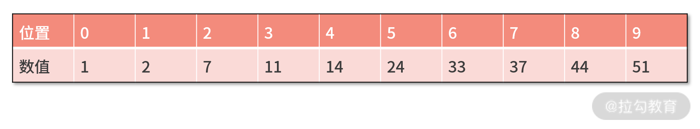
第一轮，数组 a 的中位数为 a[4] = 14。因为目标值 obj 为 7，小于 14，则问题被缩小为在数组 a 的左半边查找 obj。

第二轮，上一轮剩下的 a 数组的查找范围中，新的中位数为 a[1] = 2。因为目标值 obj 为 7，大于 2，则问题缩小为在右半边继续查找 obj。
第三轮，上一轮剩下的 a 数组的查找范围中，新的中位数为 a[2] = 7。因为目标值 obj 为 7，等于 a[2]，则说明查找到结果，输出 index 值为 2。 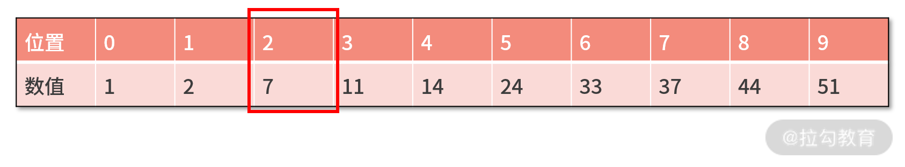
好了，现在我们来复盘一下刚才的执行过程。
在上面的查找过程中，每轮的查找动作都基于 obj 与中位数的大小关系，来作出保留左边或保留右边的决策。这样来看，每轮的查找动作，可以让 obj 的搜索空间减半，这也是二分查找的命名由来。
在利用二分查找后，原本 10 个元素的数组 a，只需要 3 次比较，就找到了 obj 的位置 index。你可能会决策，10 次计算缩减为 3 次，区区几微秒的时间，这对于强大的计算机而言根本不算什么。
可如果数组 a 的元素个数为 3.8×1011个，又会发生什么呢？
还记得这个数字吗？这就是刚刚我们计算的毫米单位的地月距离。
从指数爆炸的反向结论来看，对于这么多个元素的数组 a，你只需要 39 次计算就能完成对 obj 的查找。假设一次查找需要耗时 1μs，则采用二分查找后，节省的时间能达 3.8×1011μs= 3.8×108ms = 3.8×105s ≈ 100h。
2.二分查找算法的代码
不知道你有没有发现，二分查找的每一轮都是在处理同样的问题，区别只不过是数组的查找范围变小了而已。
这是不是很像上一课时讲到的递归的基本操作呢，这里的递归结构如下：
def fun(N,x):
if condition(N):
xxx
else:
fun(N1,x)
递归的两个关键问题是终止条件和递归体。
- 二分查找的终止条件有以下两个可能。第一，中位数恰好是 obj，说明找到了目标，则打印中位数的索引值 index；第二，查找完发现没有任何一个数字等于 obj，则打印 -1。
- 递归体需要做两个分支的判断。即如果 obj 比中位数大，则把数组的右半边保留，继续递归调用查找函数；如果 obj 比中位数小，则把数组的左半边保留，继续递归调用查找函数。
这样就可以得到如下代码：
def binary_search(obj,a,begin,end):
median = (begin + end) / 2
if obj == a[median]:
print median
elif begin > end:
print -1
else:
if obj > a[median]:
binary_search(obj,a,median + 1,end)
else:
binary_search(obj,a,begin,median - 1)
a = [1,2,7,11,14,24,33,37,44,51]
binary_search(7,a,0,9)
【我们对这段代码进行走读】
- 第 1 行，说明 binary_search 的入参包括查找目标 obj、数组 a、查找范围的开始索引 begin，以及查找范围的终点索引 end。
- 第 2 行，计算出查找范围内的中位数 median。
接着进行终止条件的判断：
- 第 3 行，如果 obj 和中位数相等，则直接打印 median；
- 第 5 行，如果发现开始索引比终止索引更大，则说明没有找到目标值obj，打印 -1。
第 7 行，开始是递归体：
- 第 8 行，判断 obj 和中位数的大小关系；
- 如果 obj 更大，则第 9 行递归查找数组右半边，更改开始索引为 median + 1；
- 反之，则第 11 行递归查找数组左半边，更改终止索引为 median - 1。
利用以上程序，在数组 a = [1,2,7,11,14,24,33,37,44,51] 中查找数字 7，因为 a[2] = 7，因此预期的返回结果是 2。
程序的执行结果如下图，结果也为 2，这与我们手动计算的结果是一致，结果正确。

指数爆炸和二分查找的数学基础
指数爆炸为什么那么恐怖？二分查找又为什么那么厉害？其实这都源自两个数学运算，分别是指数运算和对数运算。
1.指数运算
指数运算，即幂运算，写作 an，其中 a 为底数，n 为指数：
- 当 n 为正数时，an 表示含义为 n 个 a 相乘的积；
- 当 n 为 0 时，a0=1；
- 当 n 为负数时，an = 1/a-n；
除此以外，指数运算还有下面三个关键性质：
an∙ am=an+m
an∙ bn= (ab)n
(bn)m=bnm
2.对数运算
对数运算是指数运算的逆运算，设幂运算 an = y，此幂运算的逆运算为 n=logay。
其中 a 是对数运算的底，而 n 就是 y 对于底数 a 的对数。
对数有下面三个重要性质：
logb(x ∙ y) = logbx +logby
logbxy=y ∙logbx
logb1 = 0
接着，我们从计算机运行的复杂度来看一下。我们先把对数函数、线性函数、指数函数在一张图中画出来。假设对数函数和指数函数的底数选择为 2，线性函数选择为 y = x，其函数图如下所示。
 其中，灰色线为指数函数 y = 2x 的图像，橙色线为函数 y = x 的图像，蓝色线为对数函数 y = log2x 的图像，图中的这三条线，刻画了自变量 x 和因变量 y 之间的变化趋势关系，其中需要你重点关注的是指数函数和对数函数。
其中，灰色线为指数函数 y = 2x 的图像，橙色线为函数 y = x 的图像，蓝色线为对数函数 y = log2x 的图像，图中的这三条线，刻画了自变量 x 和因变量 y 之间的变化趋势关系，其中需要你重点关注的是指数函数和对数函数。
- 指数函数
对于指数函数而言，自变量 x 的增加会让因变量 y 快速达到“爆炸”状态。如果程序的复杂度与数据量是指数爆炸的趋势，那么随着数据量的增加，系统可能很快就会陷入瘫痪的状态。
现实中也有与之类比的案例。比如，人们常说的一传十、十传百就是一种指数爆炸；又比如，2020 年开始的疫情，之所以要所有人隔离，就是要避免又传染带来的指数爆炸。
- 对数函数
反之，对于对数函数而言，自变量 x 的增加对因变量 y 增加的趋势影响非常小。
程序员应该多利用这个思想来进行程序优化。例如，刚刚讲解的二分策略的程序，即使任务量很大，也可以在很少的计算时间内完成运算。
现实中也有与之类比的场景。例如，你要在一个英文词典里面查找某个单词。虽然词典的厚度可能达到成百上千页，但因为单词排列有序，你完全可以通过二分查找去找到某个单词的所在位置。同时，即使某天人们新造出很多单词，哪怕是单词数量翻倍，也不会让查单词的复杂度有明显提高。
指数爆炸的正向应用——密码学
指数爆炸的反向应用是程序的优化，而指数爆炸的正向应用就是密码学。
决定密码安全性的一个重要因素，就是密码的搜索空间 S。假设大漂亮做了个密码系统，在这个系统中，密码的每一位都由 0～9 的数字构成时。这样，密码的每一位就有 10 个可能性。
如果密码的长度为 n，则密码的搜索空间为 S = 10n。假设 n 为 5，则密码共有 105 = 1 万种可能性。要想破译密码，无异于万里挑一。
可见，要想把密码做得很复杂，一个可行的方法是，利用指数爆炸不断增加位数，来获得更大的搜索空间；除了增加密码尾数的方式外，将单个密码位上的构成可能增加也是一种提升安全性的手段。
例如，如果把每一位的密码，由先前的数字调整为数字或区分大小写的字母，则意味着密码的搜索空间由 S = 10n，提高到 S = 62n。
26 个小写字母、26 个大写字母、10 个数字，合在一起是 62 个可能性。
所以，增加每一位密码的可能性时，搜索空间 S 也可以获得提高。
小结
这一课时，我们了解了指数爆炸（运算）与对数运算，以及它们在程序和生活中的应用。而指数爆炸的思维过程就是“折纸，分奔到月球”的过程，其正向应用就是密码学。
而指数爆炸的反向应用有二分查找算法（也就是基于对数函数性质），二分查找算法是提高程序效率的重要手段，其前提条件是搜索空间有序，其实现方法需要采用上一讲所学的递归思想，需要预先定义递归的终止条件和递归体。
最后，我们留个课后习题，在上面的内容中，我们介绍了对数和指数的一些关键性质，你可以试着从数学的角度来证明这些性质的成立。
17 动态规划：如何利用最优子结构解决问题？
动态规划是运筹学问题，运筹学又是数学的一个分支，与“运筹帷幄、决胜千里”的含义很接近；同时，动态规划也是计算机技术的问题，对于程序员而言，能灵活运用动态规划解决复杂问题是一项进阶的能力。在一线互联网公司的程序员面试中，动态规划的考核绝对是一大难点。
这一讲，我们就从数学的视角学习动态规划，并通过代码完成动态规划问题的开发。
从路线规划，看动态规划问题
动态规划是动态地解决某类复杂问题的方法。
- 规划，也可以理解为是计划，是对于某个复杂问题解决方案的计划或方法；
- 动态，是说这个复杂问题会随着执行动作的不同而产生变化，并非一成不变的。
我们举个例子，假设大聪明要自己开车从学校回家，他有很多条路线可以走，那么他的目标是走哪条路能让他最快到家。
大聪明从学校出发后，到达了一个路口，这时他选择左转或者直行都是可以到家的。如果此时左转是红灯，直行是绿灯，这是否意味着大聪明应该选择直行的路线回家呢？ 显然并不是。如果直行后的路线是极其拥堵的，而左转虽然需要等待几分钟的红灯，但随后的路线却畅通无阻。那么对于最快到家的目标而言，等一会左转的红灯，也许是更好的选择。
其实，这里对于回家路线的规划，就是很多导航软件要解决的问题。
从动态规划的视角来看，动态规划的目标是希望从很多可选方案中，用最小的代价找到最优的方案，动态规划处理的问题一般是动态变化的。
- 一方面，原始问题包含了多个阶段的子问题。例如大聪明回家的路线需要经过 5 个路口，这就意味着大聪明需要做 5 次决策，也就是回家的大问题包含了 5 个子问题。
- 另一方面，每个阶段做出的决策结果，都会对后面的阶段产生影响；例如大聪明第一个路口选择了左转，这就导致直行道路的后续路口已经不在决策范围内了。
动态规划问题的特点
动态规划问题具备很多特点。例如上面提到的“多阶段”“动态变化”，除此之外还有“最优子结构”“子问题重叠”和“无后效性”。
很多教材对这些概念的介绍特别难以理解，我们仍然以大聪明回家的例子，来试着说明这3个特点的含义。
- 最优子结构
最优子结构特点是动态规划问题求解的关键。子结构，就是子问题的解。最优子结构的含义是说，如果某个解是最优的，那么这个解的子集也是对应子问题的最优解。
例如，在大聪明从学校回家的最优路线中，需要经过某个商场。那么最优的路线就可以拆分为，学校到商场（标记为 Path 1）和商场到家（标记为 Path 2）这两段路程。在其他所有学校到商场的可能路线中，Path 1 就是最近的；在其他所有商场到家的可能路线中，Path 2 就是最近的。也就是从整体看，这个长路线是最优的，那么这个长路线之下的分路线对应到其他长路线的平行分路线中也是最优的。
- 子问题重叠
子问题重叠，是指原问题的若干子问题之间并不是独立的，而是彼此存在着重叠的，这是动态规划区别于“分治法”的关键所在。
如果子问题是不重叠的，那么就可以用《16 | 二分法：如何利用指数爆炸优化程序？》中讲过的“分治法”来解决；而如果子问题是重叠的，可重叠的问题根本就分不开，也就无法应用分治法了。
例如，大聪明从学校回家会途径商场，第一个子问题是第一个路口是向左转还是直行，而不管是左转还是直行，都会有途径商场的可能，这也就是说左转或直行的结果是存在重叠的。
- 无后效性
无后效性，指的是未来只取决于现在，与过去无关。
例如，大聪明从学校回家，他左拐右拐到了商场。之后需要决策的就是如何从商场尽快回家。这个决策，与大聪明之前是如何到达商场的，没有任何关系。
动态规划问题的切入点——最优子结构
我们先前学的分治法，无法处理具有子问题重叠性质的问题。
但“最优子结构”的特点，能让我们分阶段去求解最优子问题，因此求解动态规划问题的切入点就是最优子结构。
具体而言，我们可以先找到某个阶段的全部可行解集合，例如左转、直行、右转，这就是个集合。对于任意一个可行解，假设是直行，则可以把从学校到家的行程，分解为学校到第一个路口后直行，以及直行后再到家，这样就形成了一个最优子结构。
接下来，我们要找到全局损耗最少的回家路线，那么就只要在所有的最优子结构中，找到损耗最少的那个就完成了一次的迭代。
由于动态规划的“无后效性”，我们只需要不断往前迭代下一个阶段，直到最终到家就找到了问题的答案。
上面的描述可能会很抽象，我们结合上述大聪明回家的最短路线问题为例展开实战，来试着更深层次理解动态规划的解决方案。
【最短路线问题的求解】
最短路线问题定义如下：给定一个网络，以及网络中可通行两点之间的消耗，求起点到终点的最少消耗。在“大聪明”问题中，每个结点就是大聪明回家可能遇到的路口，消耗就是时间，起点是学校，终点是家。
例如在下面的图中，A 是学校，G 是家，Bi、Ci、Di、Ei、Fi 是所有可能的路口，每条边是路口到路口需要消耗的时间。最短路径问题，就是希望用动态规划的办法，找到从起点到终点，最小消耗的路径所对应的时间。
我们在下面的过程结点图中，按照从 A 需要几条，归类为 B、C、D、E、F 这 5 类。例如，C 类的结点 Ci，都是从 A 经过两条到达的结点。这样的标记方法，可以将 A 到 G 的复杂问题，拆分为 A 到 B、B 到 C......直到 F 到 G 的 6 个子问题。每个阶段的起点是一个状态，终点是另一个状态。因此，总共有 7 个可能的状态，分别对应 A、B、C、D、E、F、G。
过程结点图
接着就是最关键的内容了。我们提到过最优子结构特点，含义是假设 A 到 G 的最优路线要经过 B1，最优路线就可以以 B1 为分割点，前后分解为 Path 1 和 Path 2。
- Path 1 是 A 到 B1 的最优路线；
- Path 2 也是 B1 到 G 的最优路线。
根据图中，我们还可以发现，A 到 G 的路线要么经过 B1、要么经过 B2，肯定是无法同时绕过 B1 和 B2 的，因此 A 到 G 的最优路线，就是在经过 B1 还是经过 B2 中选择。
用数学语言来描述上面的逻辑就是 min(A-G) = min[min(A-B1)+min(B1-G),min(A-B2)+min(B2-G)]，又因为已知 min(A-B1) = 5，min(A-B2) = 3，则 min(A-G) = min [5+min(B1-G)，3+min(B2-G)]。
到这里，你有没有发现，问题已经被我们简化了，由原来的求解 min(A-G)，转化为求解 min(B1-G) 和 min(B2-G)。
此时你应该已经觉察到，这就是递归问题。一个复杂 A 到 G 的最短路径问题，被悄悄转化为相对简单的 Bi 到 G 的最短路径问题，这不就是递归适用的条件吗？我们先把递归的念想放在心中，继续用数学推导的方式求解最短路径问题。
接下来，我们需要分别求解 min(B1-G) 和 min(B2-G)。
再根据无后效性，到这里我们已经不需要关注 B 阶段发生了什么事情，只需要继续计算刚刚最终求出的 min(C1-G)、min(C2-G)、min(C3-G)、min(C4-G) 就可以了，我们耐着性子继续计算吧。
只需要继续计算刚刚最终求出的 min(D1-G)、min(D2-G)、min(D3-G) 就可以了，我们耐着性子继续计算吧。
只需要继续计算刚刚最终求出的 min(E1-G)、min(E2-G)、min(E3-G) 就可以了，我们耐着性子继续计算吧。
最后我们直接把图中已知 Fi 到 G 距离的值代入，则有 min(A-G) = min[16+4，15+3] = 18。
我们把最优的路径还原就会发现，18 的最小损耗来自 15+min(F2-G)；15 又来自 13+min(E2-G)；13 又来自 11+min(D1-G)；11 又来自 8+min(C2-G)；8 又来自 5+min(B1-G)；5 就是 A 到 B1，因此最短路径为 A-B1-C2-D1-E2-F2-G。

动态规划的代码实现
说起代码实现，刚才解题过程中我们就提到了递归，这显然是一种实现方法。我们用一个二维数组的矩阵来保存输入的网络，这个矩阵 m 是 15×16 的，分别对应于如下图中的每一个结点，顺序为 A、B1、B2、C1、C2、C3、C4……
之所以不是 16×16 是因为，G 是终点，它哪里也去不了，我们可以把这一行给忽略掉了；如果要定义为 16×16，只需要最后补一个全 0 的一行就可以，并不影响结果。
每个元素的数值的含义是两个结点的距离消耗，例如红色的 3 代表 B1 到 C2 的消耗为 3。如果数值为 0，则认为两个结点之间不可抵达。
代码如下所示：
def minPath(matrix, i):
if i == 0:
return 0
else:
distance = 999
for j in range(i):
if matrix[j][i] != 0:
d_tmp = matrix[j][i] + minPath(matrix, j)
if d_tmp < distance:
distance = d_tmp
return distance
m=[[0,5,3,0,0,0,0,0,0,0,0,0,0,0,0,0],[0,0,0,1,3,6,0,0,0,0,0,0,0,0,0,0],[0,0,0,0,8,7,6,0,0,0,0,0,0,0,0,0],[0,0,0,0,0,0,0,6,8,0,0,0,0,0,0,0],[0,0,0,0,0,0,0,3,5,0,0,0,0,0,0,0],[0,0,0,0,0,0,0,0,3,3,0,0,0,0,0,0],[0,0,0,0,0,0,0,0,8,4,0,0,0,0,0,0],[0,0,0,0,0,0,0,0,0,0,2,2,0,0,0,0],[0,0,0,0,0,0,0,0,0,0,0,1,2,0,0,0],[0,0,0,0,0,0,0,0,0,0,0,3,3,0,0,0],[0,0,0,0,0,0,0,0,0,0,0,0,0,3,5,0],[0,0,0,0,0,0,0,0,0,0,0,0,0,5,2,0],[0,0,0,0,0,0,0,0,0,0,0,0,0,6,6,0],[0,0,0,0,0,0,0,0,0,0,0,0,0,0,0,4],[0,0,0,0,0,0,0,0,0,0,0,0,0,0,0,3]]
print minPath(m, 15)
我们对代码进行简单的走读。
- 第 14 行，调用 minPath(m, 15)，表示基于矩阵 m，计算从 A 到 G 的最短距离。
进入到 minPath 函数中，我们用递归的方法开发，则需要考虑终止条件和递归体。
- 先看从第 4 行开始的递归体。
- 第 5 行，设置某个最大距离值为 999。接下来我们要遍历从 0 到 i，如果 matrix[j][i] 不是 0，则说明结点是可抵达的。
- 则需要计算某个子结构，即第 8 行。
- 第 9 行，对于每个可能的子结构，寻找最优子结构。如果发现更近，则修改 distance 变量。
- 第 2 行，终止条件中如果 i 为 0，说明走到了终点，就要跳出递归。
这段代码理解难度很大，需要你仔细思考，最好把一些过程结果也打印出来。
基于这段代码，我们运行的结果如下图所示，也是 18，这与我们手算的答案一致。
 虽然这样可以算到结果，但你也会这种方法和暴力搜索的区别并不大，几乎是把所有可能性都计算了一次，这段代码存在着大量的重复计算。
虽然这样可以算到结果，但你也会这种方法和暴力搜索的区别并不大，几乎是把所有可能性都计算了一次，这段代码存在着大量的重复计算。
《15 | 递归：如何计算汉诺塔问题的移动步数？》便提到了递归的代码存在重复计算的可能性。
【设置全局变量来缓存中间结果】
因此对于动态规划问题，大多数情况下会通过设置“全局变量”来缓存中间结果，以避免重复计算，减少计算量。
在这里，我们采用一个数组 p，来记录 A 点到某个结点之间的最短路径，修改的代码如下：
def minPath(matrix):
p = [99 for i in range(len(matrix[0]))]
p[0] = 0
for j in range(0,len(matrix)):
for k in range(j,len(matrix[0])):
if matrix[j][k] != 0:
if p[k] > p[j] + matrix[j][k]:
p[k] = p[j] + matrix[j][k]
print p
return p[-1]
m=[[0,5,3,0,0,0,0,0,0,0,0,0,0,0,0,0],[0,0,0,1,3,6,0,0,0,0,0,0,0,0,0,0],[0,0,0,0,8,7,6,0,0,0,0,0,0,0,0,0],[0,0,0,0,0,0,0,6,8,0,0,0,0,0,0,0],[0,0,0,0,0,0,0,3,5,0,0,0,0,0,0,0],[0,0,0,0,0,0,0,0,3,3,0,0,0,0,0,0],[0,0,0,0,0,0,0,0,8,4,0,0,0,0,0,0],[0,0,0,0,0,0,0,0,0,0,2,2,0,0,0,0],[0,0,0,0,0,0,0,0,0,0,0,1,2,0,0,0],[0,0,0,0,0,0,0,0,0,0,0,3,3,0,0,0],[0,0,0,0,0,0,0,0,0,0,0,0,0,3,5,0],[0,0,0,0,0,0,0,0,0,0,0,0,0,5,2,0],[0,0,0,0,0,0,0,0,0,0,0,0,0,6,6,0],[0,0,0,0,0,0,0,0,0,0,0,0,0,0,0,4],[0,0,0,0,0,0,0,0,0,0,0,0,0,0,0,3]]
print minPath(m)
我们对代码进行走读。
- 第 2 行，定义了数组 p，用来存放 A 到某个点的最短路径。有了它，就能避免重复计算了。
- 第 3 行，把 A 到 A 赋值为零。
- 第 4、5 行，采用了双层循环，是对 matrix 数组进行遍历。
- 第 6 行，发现 matrix 中某个元素如果不为零，则说明存在 j 到 i 的通路。那么接下来，就要继续判断，从 A 到 j 的消耗与 j 到 i 的消耗之和（新路径），与目前发现的 A 到 i 的消耗的大小关系。如果新路径更小，则替换新的更小的损耗到 p 数组中。
全部遍历完，打印出 p[-1]，即 A 到 G 的最短距离。
如下图，上面代码的运行结果也是 18，与我们先前计算的一致。
小结 动态规划与分治法
的确，动态规划的知识并不简单，它涉及很多数学领域和计算机领域的知识。动态规划的特点是“多阶段”“动态变化”“最优子结构”“子问题重叠”和“无后效性”，正是这些特点，让动态规划问题具有相对独特的解法。
动态规划问题与分治法问题的重要区别就是子问题的重叠。
对于一个子问题不重叠的问题，可以使用分治法来解决，你也可以使用动态规划来解决，但这有点杀鸡用牛刀的意思。
但对于一个子问题重叠在一起的复杂问题时，分治法根本无法做到对问题的分割，此时就只能使用动态规划了。动态规划问题的解决围绕最优子结构展开，可以说只要你能找到最优子结构，这个问题就已经被解决一多半了。
工作场景中，在开发动态规划的代码时，我建议你尽量不要用递归的开发方式。由于子问题重叠性，它通常情况下都会产生大量的重复计算，因此不是个好的方法。实际中，动态规划类问题的开发，常常要定义用来缓存中间结果的变量，这样就能规避重复计算，提高程序的运行速度。
最后，我们留一个练习题。上面的代码中，我们只打印了最短路径的消耗时间，并没有把最短路径给打印出来。试着修改代码，把路径也打印出来吧。
18 AI 入门：利用 3 个公式搭建最简 AI 框架
你知道，你的网购 app 是如何成为你肚中蛔虫，向你“智能推荐”你的心仪之物的吗？地图 app 又是如何“智能预测”，你家门口的每日交通状况的吗？
如今 AI 变得无所不知，但原因并不是它真的能“窥探”万物，仅仅是因为它学会了从“数据”中学习，寻得了万物的规律。你与“淘友们”的浏览、购买数据，让它了解了你这个类群消费者的偏好；你与“出行者们”的日复一日的交通记录，让它轻松掌握所有人的出行规律。
所以 AI 的本质就是“从大数据中学习”，那么想要了解 AI，是不是真的需要先用千万级的数据练手呢？不是的。接下来我仅用四对数据，便能从中带你找出“人工智能建模框架”的关键公式。
这一模块，我们就开始从数学的视角来学习一下人工智能。
从“身高预测”认识 AI 本质
我们先来看一个最简单的人工智能的例子。有四对父子，他们的身高分别如下表所示，假设孩子的身高与父亲的身高之间是线性关系，试着用前三对父子身高的关系推算出第四对父子中儿子的身高。

我们可以利用 Excel 绘制散点图的方法拟合，也可以用先前所学的线性回归进行拟合。不管哪种方法，拟合的结果都是儿子的身高 = 父亲的身高+3。我们根据这个关系可以推算出，对于身高 182 的父亲，他的孩子更有可能的身高是 185。
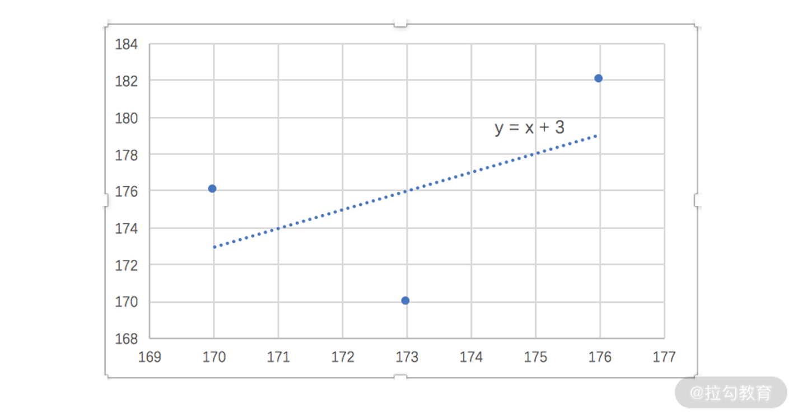
其实，这就是一个用人工智能解决问题的案例。人工智能，是让机器对数据进行计算，从而得到经验（这很像人类对书本知识的学习），并利用经验对未知事务做出更智能的决策。
在这个例子中，我们对前三对父子身高关系进行计算，得到了“儿子的身高 = 父亲的身高 + 3”的经验；再用这个经验，对身高为 182 的父亲的孩子身高做出更合理、智能的决策结果。
可见，人工智能的目标就是要做出更合理、智能的决策。它的途径是对数据的计算，当然数据量越多越好，这也是“大数据”的核心优势。它的产出结果就是经验，有时候也叫作模型。换句话说，人工智能就是要根据输入的数据，来建立出效果最好的模型。
人工智能建模框架的基本步骤
既然我们说，人工智能就是要建立模型，那究竟该怎么建立呢？有没有一些通用的方法或者步骤呢？
答案是，有的。我们接下来，以前面预测孩子身高为例，再结合人工智能的定义，来试着总结出人工智能建立模型的步骤。
人工智能要通过数据来建立模型，那么数据是什么呢？其实，就是这三对父子的身高，这也是我们建模的输入。那么模型又是什么呢？模型是用来做预测的经验，其实这就是基于某个输入的自变量，来预测与之对应的因变量的函数，即 y=f(x)。
在这个例子中加了一个假设，那就是父子之间的身高关系是线性的，这就意味着 f(x) 有线性函数的表现形式，其通式是 kx+b，也就是说 y=f(x)=kx+b。
当然，这个假设也可以是二次多项式的、指数型的。
此时可以发现，给定某个自变量 x 时，对因变量 y 的结果起到决定性作用的是参数 k 和 b。也就是说，模型的参数（k 和 b）与自变量 x，共同决定了因变量 y 的值。
因此，有时候人们也喜欢把上面的模型写作 y=f(w;x)。在这里w就代表了模型的参数，它可以是个标量，也可能是个向量，取决于模型的参数有多少个。像此时有 k 和 b 两个参数，那么w就是个向量，定义为 [k,b]。
人工智能的目标是要让模型预测的结果尽可能正确，而决定模型预测结果的就是模型的参数。因此，建模的过程更像是找到最合适的参数值，让模型的预测结果尽可能正确。
这句话有些隐讳，我们尝试用数学语言来描述它。
围绕“模型预测结果尽可能正确”，就是说预测的结果和真实的结果之间的偏差尽可能小，我们就需要用一个数学式子来表达。在先前的课时中，我们提到过利用平方误差来描述两个值的偏差程度，即 (y1-y2)2，代入到这里就是 (y-ŷ)2。
在例子中，我们有三对父子的数据，这样就有了 3 个预测结果和 3 个真实结果。我们用 L(w) 来表示这 3 条数据的平方误差之和，就有了 L(w) = (y1-ŷ1)2+(y2-ŷ2)2+(y3-ŷ3)2。
之所以用 L(w) 来表示，是因为真实值 ŷi 在数据集中是已知的；而预测值 yi = f(w; xi) 中，xi 在数据集中也是已知的，目前只有w这个模型参数是未知的。这样，我们就写出了“偏差”的函数。
最后，人工智能的目标是模型尽可能准确，也就是要让“偏差尽可能小”，这就是求极值的问题，即计算 minL(w)。
我们建模的目标就是，建立出效果最好的模型。由于参数决定了模型的预测结果，效果最好就是偏差最小，也就是说建模的目标就是，要找到让偏差最小的参数值。用数学符号来表达就是w*= argmin L(w)，而w*就是我们要建立的最佳模型。
人工智能建模框架的三个公式
其实，不论是多么复杂的人工智能模型，其建模过程都是上面的过程，而上面的过程又可以凝练出三个标准路径，分别对应三个数学公式，它们分别如下。
- 第一步，根据假设，写出模型的输入、输出关系 y = f(w; x)；
- 第二步，根据偏差的计算方法，写出描述偏差的损失函数 L(w)；
- 第三步，对于损失函数，求解最优的参数值，即w*= argmin L(w)。
值得一提的是，前面所说的“偏差”，通常用损失函数这个专业名词来表达。
人工智能技术不断更新换代，但所有技术分支都在这三个步骤当中。不同种类的模型，其区别不外乎是这三个步骤实现方法的不同，下面我简单举例以下这种实现方式：
- 第一步的假设，可以由线性模型调整为高阶多项式的假设 y=ax2+bx+c；
- 第二步的损失函数，可以由平方误差调整为绝对值求和的误差，即 L(w) = |y1 - ŷ1| + |y2 - ŷ2| + |y3 - ŷ3|；
- 第三步的求解最优，可以采用求导法，也可以调整为梯度下降法，甚至可以用一些启发式方法求解。
不管这些实现细节如何调整，永远不变的就是这三个标准路径，这也是搭建最简 AI 模型的基本框架。
用 AI 基本框架重新看“线性回归”
经过多年的发展，人工智能领域有很多被验证成熟可用的模型。在模块四后续的每一讲，我们会分别讲述当前技术发展阶段中，被人们公认效果最稳定普适的几个模型。
在这一讲，先以我们都很熟悉的“线性回归”为例，来验证一下基本框架。
- 第一步，根据假设，写出模型的输入、输出关系 y = f(w; x)。我们假设是线性模型，则有
y = kx + b。
- 第二步，根据偏差的计算方法，写出描述偏差的损失函数 L(w)。我们选择平方误差，则有
L(w) = (y1 - ŷ1)2 + (y2 - ŷ2)2 + (y3 - ŷ3)2。其中w= [k,b]，我们再把 y=kx+b 和三对父子的实际身高 xi、ŷi 代入上式，则有 L(k,b) = (173k+b-170)2 + (170k+b-176)2 + (176k+b-182)2。
- 第三步，对于损失函数，求解最优的参数值，即w*= argmin L(w)。为了求解函数的极小值，我们考虑计算损失函数关于 k 和 b 的导数，则有

我们用求导法来计算函数最小值，则令这两个偏导数为零并解方程，则有 179610k+1038b-182724=0 和 1038k+6b-1056=0，求得 k=1，b=3，这个结果与刚刚用 Excel 的计算结果完全一致。
这个例子就是对“线性回归”另一个视角的解读。你也可以理解为，线性回归就是一种最基础的人工智能模型。
线性回归具体的代码实现，你可以参考《07 | 线性回归：如何在离散点中寻找数据规律？》写出公式后，直接打印就能得到结果，这几乎没有什么开发成本。在此，我就不再重复赘述了。
小结
最后，我们对这一讲进行总结。这一讲是模块四的开胃菜，我们通过一个预测身高这样一个最简单的例子，以小见大，认识了人工智能模型的建模过程和基本本质。
人工智能的目标是做出更合理、更智能的决策，它的途径是对数据进行计算，从而输出结果，并将这一结果叫作模型。用一句话来概括，人工智能就是要根据输入的数据，来建立出效果最好的模型。
人工智能的建模过程通常包括下面三个步骤：
- 第一步，根据假设，写出模型的输入输出关系 y = f(w; x)；
- 第二步，根据偏差的计算方法，写出描述偏差的损失函数 L(w)；
- 第三步，对于损失函数，求解最优的参数值，即w*= argmin L(w)。
人工智能发展到今天，很多成型的复杂的模型，都是对这三个步骤实现细节的优化。
最后，我们留一个练习。在上面求解 k 和 b 的线性回归问题中，我们采用了求导法来计算。现在试着再用一下梯度下降法来求解，并写出代码吧。
我们给出几个提示，梯度下降法需要计算梯度，也就是偏导数；接着随机初始个 k0 和 b0，每一轮用梯度的值乘以学习率来更新 k 和 b。我们在这一模块的后续章节中，会高频使用到梯度下降法。
建议你回顾一下《05 | 求极值：如何找到复杂业务的最优解？》中对“梯度下降发”的详细讲解。
19 逻辑回归：如何让计算机做出二值化决策？
在上一讲，学习完 AI 的基本框架后，我们现在就开始围绕当前人工智能领域最常用的模型，来分别学习一下它们背后的原理。
这一讲，我们从最常见的逻辑回归模型说起，逻辑回归是人工智能领域中入门级的基础模型，它在很多领域都有应用，例如用户的信贷模型、疾病识别等。
逻辑回归是一种分类模型，可以对一个输入 x，识别并预测出一个二值化的类别标签 y。例如，要预测照片中人物的性别，可以采用逻辑回归建立模型。给模型输入一个描述照片的特征向量 x，经过模型的计算，可以得到输出值 y 为“男”或“女”。
在深入学习逻辑回归的原理之前，我们先来了解一下什么是分类问题，以及分类问题有哪些类型。
分类问题
在人工智能领域中，分类问题是特别常见的一种问题类型。简而言之，分类问题就是对一个测试验本去预测它归属的类别。例如，预测胎儿性别、预测足球比赛结果。
根据归属类别可能性的数量，分类问题又可以分为二分类问题和多分类问题。
- 二分类问题，顾名思义就是预测的归属类别只有两个。例如，预测性别男/女、预测主场球队的胜负、预测明天是否下雨。
- 多分类问题，预测的归属类别大于两个的那类问题。例如，预测足球比赛结果是胜、负，还是平局；预测明天天气是雨天、晴天，还是阴天。
在研究分类的建模算法时，人们往往会从二分类问题入手，这主要是因为多分类问题可以用多个二分类问题来表示。例如，预测明天天气是雨天、晴天，还是阴天，这是个多分类问题（三分类）；它也可以表示为，预测明天是否下雨、预测明天是否晴天、预测明天是否阴天，这三个二分类问题。
因此，二分类问题是分类问题的基础，在讨论分类算法时，人们往往会从二分类问题入手。
逻辑回归及其建模流程
逻辑回归（Logistic Regression，LR）是人工智能领域非常经典的算法之一，它可以用来对二分类问题进行建模，对于一个给定的输入，可以预测其类别为正 1 或负 0。接下来，我们就从 AI 基本框架的 3 个公式，来学习一下 LR 的建模流程。
重温一下人工智能基本框架的 3 个公式分别是：
- 第一步，根据假设，写出模型的输入、输出关系 y = f(w; x)；
- 第二步，根据偏差的计算方法，写出描述偏差的损失函数 L(w)；
- 第三步，对于损失函数，求解最优的参数值，即 w*= argmin L(w)。
接下来，我会逐一展示这三步的过程。
1.模型的输入、输出关系（Sigmoid 函数）
在逻辑回归中，第一个公式的表达式非常简单，为 y=f(w;x)=sigmoid(w·x)=1/(1+e-w·x)。
直观上来看，逻辑回归的模型假设是，把模型参数向量 w 和输入向量 x 的点乘（即线性变换）结果输入给 Sigmoid 函数中，即可得到预测值 y。
此时的预测值 y 还是个 0～1 之间的连续值，这是因为 Sigmoid 函数的值域是 (0,1)。逻辑回归是个二分类模型，它的最终输出值只能是两个类别标签之一。通常，我们习惯于用“0”和“1”来分别标记二分类的两个类别。
在逻辑回归中，常用预测值 y 和 0.5 的大小关系，来判断样本的类别归属。具体地，预测值 y 如果大于 0.5，则认为预测的类别为 1；反之，则预测的类别为 0。
我们把上面的描述进行总结，来汇总一下逻辑回归输入向量、预测值和类别标签之间的关系，则有下面的流程图。
为了深入了解逻辑回归的模型假设，我们需要先认识下 Sigmoid 函数。Sigmoid 函数的表达式为 y = sigmoid(x)=1/(1+e-x)，它是个单调递增函数，定义域为 (-∞, +∞)，值域为 (0,1)，它的函数图像如下。 我们可以看出，Sigmoid 函数可以将任意一个实数 x，单调地映射到 0 到 1 的区间内，这正好符合了“概率”的取值范围。
我们还可以用求导公式来看一下 Sigmoid 函数的一阶导数。

2.逻辑回归的损失函数
有了这些基本假设后，我们尝试根据偏差的计算方法，写出描述偏差的损失函数 L(w)。
我们刚刚提到过，逻辑回归预测结果的值域 y 为 (0,1)，代表的是样本属于类别 1 的概率。
- 具体而言，如果样本属于类别“1”的概率大于 0.5，则认为样本的预测类别为“1”；
- 如果样本属于类别“1”的概率小于 0.5，则认为样本的预测类别为“0”。
这里出现了这么多的概率，我们可以借鉴在《09 | 似然估计：如何利用 MLE 对参数进行估计？》中学的概率计算和极大似然估计的思想，尝试写出样本被正确预测的概率。
 我们将上面两个等式合并，就可以得到某个数据xi 被正确预测的概率，即 P(yi|xi,w)=Φ(zi)yi·[1-Φ(zi)]1-yi。
我们将上面两个等式合并，就可以得到某个数据xi 被正确预测的概率，即 P(yi|xi,w)=Φ(zi)yi·[1-Φ(zi)]1-yi。
- 如果真实结果 yi 为 1，则 P(yi|xi,w) = Φ(zi)，描述的是样本被预测为类别“1”的概率；
- 如果真实结果 yi 为 0，则 P(yi|xi,w) = 1-Φ(zi)，描述的是样本被预测为类别“0”的概率。
接下来可以将上式扩展到整个样本数据集中，则可采用极大似然估计得到 L(w)，即
我们之前在《09 | 似然估计：如何利用 MLE 对参数进行估计？》学习极大似然估计 MLE 时，曾经提过一个常用的公式化简方法，那就是通过取对数，让连续乘积的大型运算变为连续求和，则有

3.求解最优的模型参数值
AI 建模框架的最后一步，就是对损失函数求解最优的参数值，即w*= argmin l(w)。刚刚我们求得，损失函数为 可见，损失函数是个关于 xi、yi 和 w 的函数，而xi 和 yi 是输入数据集中已知的条件，所以损失函数的未知数只有 w。
于是可以得到结论，逻辑回归最后一步的建模公式，实质上就是求解函数极值的问题。
关于求极值，我们在《05 | 求极值：如何找到复杂业务的最优解？》曾详细介绍过求导法和梯度下降法。
在这里，由于损失函数包含了非线性的 sigmoid 函数，求导法是无法得到解析解的；因此，我们使用梯度下降法来求解参数w。
 我们已经计算出了损失函数关于模型参数的导数，这也是损失函数的梯度方向，我们可以利用先前所学的梯度下降法来求解函数的极值。
我们已经计算出了损失函数关于模型参数的导数，这也是损失函数的梯度方向，我们可以利用先前所学的梯度下降法来求解函数的极值。
然而，这里存在一个计算效率的缺陷，即梯度函数中包含了大型求和的运算。这里的大型求和是 i 从 1 到 n 的计算，也就是对于整个数据集全部的数据去进行的全量计算。
可以想象出，当输入的数据量非常大的时候，梯度下降法每次的迭代都会产生大量的计算。这样，建模过程中会消耗大量计算资源，模型更新效率也会受到很大影响。
【随机梯度下降法】
为了解决这个问题，人工智能领域常常用随机梯度下降法来修正梯度下降法的不足。随机梯度下降法与梯度下降法的区别只有一点，那就是随机梯度下降在每轮更新参数时，只随机选取一个样本 dm 来计算梯度，而非计算整个数据集梯度。其余的计算过程，二者完全一致。
根据上面更新公式的算法，我们通过多轮迭代，就能最终求解出让 l(w) 取得最大值的参数向量w。
逻辑回归代码实现
接下来，我们在下面的数据集上，分别采用逻辑回归来建立分类模型。
第一个数据集如下，其中每一行是一个样本，每一列一个特征，最后一列是样本的类别。

第二个数据集如下，格式与第一个数据集相同。

我们采用下面的代码，建立逻辑回归模型。
import math
import numpy as np
import random
x = np.array([[1,1,1],[0,0,1],[0,1,1],[1,0,1]])
y = np.array([1,0,0,0])
#y = np.array([0,0,1,1])
w = np.array([0.5,0.5,0.5])
a = 0.01
maxloop = 10000
for _ in range(maxloop):
m = random.randint(0,3)
fi = 1.0/(1+math.pow(math.e,-np.dot(x[m],w)))
g = (y[m] - fi)*x[m]
w = w + a*g
print w
【我们对代码进行走读】
- 代码中，第 5～7 行分别输入数据集 x 和 y；
- 第 9 行，初始化参数向量，在这里，我们采用固定的初始化方法，你也可以调整为随机初始化；
- 第 11 行，设置学习率为 0.01；
- 第 12 行，设置最大迭代轮数为 10000 次。
接下来进入随机梯度下降法的循环体。
- 第 14 行，从 0 到 3 中随机抽取一个数字作为本轮迭代梯度的样本；
- 第 15 行，计算 Φ(zm)；
- 第 16 行，计算样本 m 带来的梯度 g；
- 第 17 行，利用随机梯度下降法更新参数 w；
- 第 18 行，打印这一轮的结果。
【数据集一】
运行上述代码，我们对数据集一建模得到的最优参数为 [3.1,3.0,-4.8]。利用这组参数，我们可以对数据集一的学习效果进行测试，如下表所示
可见，数据集一上，我们的模型全部正确预测，效果非常好。
【数据集二】
再运行上述代码，我们对数据集二建模得到的最优参数为 [0.16, 0.10, -0.03]。利用这组参数，我们可以对数据集二的学习效果进行测试，如下表所示。 我们发现，在数据集二上，模型的预测结果只能是马马虎虎，这体现在两点：
- 4 个样本中，并没有全部正确预测，样本 1 预测错误；
- 对于正确预测的 3 个样本而言，预测值都在边界线 0.5 附近，就算是正确预测，也没有压倒性优势。
那么为什么同样的模型，只是换了数据集，效果就千差万别呢？
逻辑回归的不足
这是因为，逻辑回归是个线性模型，它只能处理线性问题。
例如，对于一个二维平面来说，线性模型就是一条直线。如果数据的分布不支持用一条线来分割的话，逻辑回归就无法收敛，如下图所示。 图中蓝色点是一类，黄色点是一类。现在，我们要用逻辑回归这样的线性模型来进行区分。可见，不论这条线怎么选，都是无法将两类样本进行分割的，这也是逻辑回归模型的缺陷。
要想解决的话，只有用更复杂的模型，例如我们后续的课时中会介绍的决策树、神经网络等模型。
【逻辑回归与线性回归】
在上一讲《18 | AI 入门：利用 3 个公式搭建最简 AI 框架》中，通过“身高预测”，我们从人工智能模型的视角，重新认识了线性回归，那么逻辑回归和线性回归的不同有哪些呢？
- 从名字上比较
线性回归是回归模型，是用一根“线”去回归出输入和输出之间的关系，即用一根线去尽可能把全部样本“串”起来。
而逻辑回归虽然名字里有“回归”二字，但其实是一个分类模型，它是希望用一根线去把两波样本尽可能分开。
- 从表达式上看
逻辑回归是在线性回归的基础上加了一个 Sigmoid 函数的映射，在最终的类别判断上，还需要对比一下预测值和 0.5 之间的大小关系。
因此，线性回归解决的是回归问题，输出的连续值；而逻辑回归解决的是二分类问题，输出的是“0”或“1”的离散值。
- 从机理上看
逻辑回归增加了 sigmoid 函数，可以让预测结果在 0.5 附近产生更大的变化率，变化率更大，意味着梯度更大。
在使用梯度下降法的时候，这样的机理，让模型的预测值会倾向于离开变化率大的地方，而收敛在“0”或“1”附近。这样的模型机理，会让它更适合用于分类问题的建模，具有更好的鲁棒性。
小结
逻辑回归是人工智能领域中分类问题的入门级算法。利用 AI 基本框架来看，它的 3 个核心公式分别是
 逻辑回归是个线性模型，具有计算简单、可解释性强等优势。它的不足是，只能处理线性问题，对于非线性问题则束手无策。
逻辑回归是个线性模型，具有计算简单、可解释性强等优势。它的不足是，只能处理线性问题，对于非线性问题则束手无策。
最后，我们留一个思考题。试着把本课时中的代码，由随机梯度下降法改写为梯度下降法，再来求解一次参数 w 吧。原则上除了计算量会变大以外，对分类结果是不会产生改变的。不妨亲自试一下。
20 决策树：如何对 NP 难复杂问题进行启发式求解？
这一讲，我们学习决策树模型。决策树模型既可以解决分类问题，也可以解决回归问题，经典的决策树算法有 ID3、C4.5，以及 CART 算法。
当今主流的人工智能模型都是基于决策树的模型，例如更复杂的梯度提升决策树、随机森林等等。这些模型有着更加复杂、深厚的数学机理，但本质上还是决策树的思想。
决策树及其基本结构
决策树算法采用树形结构，使用层层推理来实现最终的分类。与逻辑回归不同，决策树模型很难用一个函数来描述输入向量x和预测类别 y 之间的关系。但是，如果利用一个如下图的树形状图形，就能很轻松描述清楚。
决策树
我们可以发现决策树有以下特点。
决策树由结点和边组成。最上边的结点称作根结点，最下边的结点称作叶子结点。除了叶子结点外，每个结点都根据某个变量及其分界阈值，决定了是向左走或向右走。每个叶子结点代表了某个分类的结果。
- 当使用决策树模型去预测某个样本的归属类别时，需要将这个样本从根结点输入；
- 接着就要“按图索骥”，根据决策树中的规则，一步步找到向左走或向右走的路径；
- 直到最终，最终到达了某个叶子结点中，并用该叶子结点的类别表示预测结果。
例如，大迷糊的头发长度为 6 厘米、指甲长度为 0.1 厘米，我们要预测大迷糊的性别。从根结点出发，因为大迷糊的头发长度大于 5 厘米，则向左走；又因为大迷糊的指甲长度小于 1 厘米，则向右走。最终抵达叶子结点为男性，这就是预测的结果。
决策树建模的挑战
我们曾说过，利用人工智能建模就是建立假设，再去找到假设条件下的最优化参数。对于决策树而言，它的假设就是输入向量x和输出类别 y 之间是一棵树的条件判断关系。
这样来看，决策树模型的参数就是每个结点的分裂变量和分裂变量的阈值。决策树建模，就是要找到最优的模型参数，让预测结果尽可能更准。然而，在使用决策树建模时想最优的模型参数是个 NP 难的问题。
NP 难问题，指最优参数无法在多项式时间内被计算出来，这很像我们先前所说的指数爆炸。NP 难问题是数学界的一类经典问题，我们这里进行简单介绍。
例如，旅行商问题（Travel Saleman Problem or TSP）就是个典型的 NP 难问题。旅行商问题，是指一个旅行商需要从 A 城市出发，经过 B 城市、C 城市、D 城市等 n 个城市后， 最后返回 A 城市，已知任意两个城市之间的路费 xij。
问：这个旅行商以怎样的城市顺序安排旅行，能让自己的路费最少。
这个旅行商问题显然就是一个 NP 难问题，这体现在两个方面。
- 第一，任意给出一个行程安排，例如 A->B->D->C->A，都可以很容易算出旅行路线的总费用；
- 第二，但是要想找到费用最少的那条路线，最坏情况下，必须检查所有可能的路线，而这里可能的路线是 (n-1)! 个。
例如，3 个城市的路线有 A->B->C->A、A->C->B->A 两种可能，搜索空间决定了时间复杂度，显然复杂度是 O(n!)。这远大于多项式，例如 O(n)、O(n2)、O(n3) 的时间复杂度。
面对 NP 难问题，常规的解法是降低解的质量，去换取复杂度的降低。简而言之就是，从寻找 NP 难问题的全局最优解，转变为在多项式时间内寻找某个大差不差的次优解。通常，这类算法也被称为启发式的算法。
因此，在使用决策树建模时，绝大多数的决策树算法（如 ID3 和 C4.5）所采取的策略都是启发式算法（例如贪心算法）来对空间进行搜索。这样，决策树中的每个结点都是基于当前的局部最优选择进行构造。
ID3 决策树的启发式建模
补充完了基本概念后，我们以 ID3 决策树为例，详细探讨一下决策树建模的过程。ID3 决策树的核心思想，是在当前结点，根据信息增益最大的那个特征变量，决定如何构成决策树。
我们在《10 | 信息熵：事件的不确定性如何计算？》曾经学过，利用熵、条件熵来描述事件的不确定性。进一步，可以得到信息增益，来量化某个条件对于事件不确定性降低的多少。
由此可见，ID3 决策树的思路非常简单，就是在所有能降低不确定性的变量中，找到那个降低程度最多的变量作为分裂变量。经过多次重复这个过程，就能得到一棵决策树了。
【ID3 决策树建模步骤】
- 计算出数据集的信息熵。
- 对于x向量的每一个维度：
- 以这个维度作为条件，计算条件熵；
- 根据数据集的信息熵和条件熵，计算信息增益。
- 找到信息增益最大的变量，作为当前的分裂变量，并根据这个分裂变量得到若干个子集。
- 对分类过后的每个子集，递归地执行 1～3 步，直到终止条件满足。
【ID3 决策树常见的两个终止条件】
- 如果结点中的全部的样本都属于同一类别，则算法停止，并输出类别标签。
- 若无法继续对当层节点进行划分（特征用完），将该节点内的最高频的类别标签输出。
论述 ID3 建模的过程 案例 1
假设有以下数据集，每一行是一个样本，每一列一个特征变量，最后一列是样本的真实类别。试着去建立 ID3 决策树。
 1.首先，计算信息熵。
1.首先，计算信息熵。
数据集中，类别为“1”的样本有 1 个，类别为“0”的样本有 3 个；这样，类别“1”出现的概率就是 1/4，类别“0”出现的概率就是 3/4。
根据公式可以知道，信息熵为
2.接着，对每个变量，计算条件熵及其信息增益
- 第一个变量
第一个变量，即数据集中的第一列。它包含了两个“1”和两个“0”，可见“1”和“0”的概率为1/2。其中在第一个变量为“1”的两个样本中，类别标签分别为“1”和“0”，则信息熵为
 在第一个变量为“0”的两个样本中，类别标签都是“0”，则信息熵为
在第一个变量为“0”的两个样本中，类别标签都是“0”，则信息熵为
- 第二个变量
同理，可以计算出第二个变量的信息增益为
- 第三个变量
对于第三个变量，它的值都是 1，也就是说第三个变量出现 1 的概率是 100%。

也就是没有信息增益，等同于是个废话。从数据中也能看出，第三个变量的值对于所有数据样本而言都是一样的，可见它是没有任何区分度的。
3.变量分裂与决策树
基于这个过程，我们选取出信息增益最大的变量为第一个变量，标记为 x1（但若信息增益都一样，随机选择一个就可以了）。根据 x1 以及 x1 可能的取值，可以把决策树暂时建立如下图所示。

根据当前的决策树，可以把原数据集切分为两个子集，分别是 D1 和 D2。
X1**= 0 时，子数据集是 D**1
在 D1 中，所有样本的类别标签都是“0”，满足了决策树建模的终止条件，则直接输出类别标签“0”，决策树更新为

X1**= 1 时，子数据集是 D**2

对于 D2 而言，还需要重复计算熵和信息增益。在D2中，类别“1”和类别“0”各有一个样本，即出现的概率都是 1/2，因此熵为
- 而对于三个变量而言，第一个变量和第三个变量的信息增益都是零。这是因为，两个样本在第一个变量和第三个变量的值是相等的，没有任何信息量；
- 对于第二个变量而言，条件熵为 H(y|x2) = (1/2)×0 + (1/2)×0 = 0，信息增益为 g(x2,y) = H(p) - H(y|x2) = 1。
因此，应该采用第二个变量进行分裂，则有下面的决策树
基于这个决策树，如果 x2 为 0，则得到子集 D3；如果 x2 为 1，则得到子集 D4。
- 同时，在 D3 中，只剩下 [1,0,1,0] 这条样本，直接输出类别标签“0”；
- 在 D4 中，只剩下 [1,1,1,1] 这条样本，直接输出类别标签“1”。
二者都满足了停止条件，这样决策树就建立完成了，结果如下：

论述 ID3 建模的过程 案例 2
我们再看一个数据集，如下所示，这也是上一讲中，逻辑回归没有建立出模型的非线性问题的数据集。
其中每一行是一个样本，每一列一个变量，最后一列是样本的类别标签。
 我们还是可以根据 ID3 决策树的流程来建立模型。
我们还是可以根据 ID3 决策树的流程来建立模型。
1.首先，计算信息熵
我们发现在数据集中，类别为“1”的样本有两个，类别为“0”的样本也有两个；这样，他们二者出现的概率就都是 1/2。

2.接着，对每个变量计算条件熵和信息增益
对于第一个变量 x1 的值有 1 和 0 两个可能性，出现的概率都是 2/4。
3.变量分裂与决策树
当信息增益完全一致的时候，我们随机选择一个作为分裂变量。假设选 x1，则根据 x1 的不同，可以得到下面的决策树。
根据当前的决策树，可以将数据集分割为 D1 和 D2 两部分，并建立决策树。
X1 为 0 时，子数据集为 D1


- 不难发现，在 D1 中，第一个变量 x1 和第三个变量 x3 的信息增益都是 0；

可见，需要用 x2 对 D1 进行拆分，这样就得到了下面的决策树。
x1为 1 时，子数据集是 D2

对于 D2 子集，也用同样的方法，我们直接给出建树的结果如下：
所剩特征为 0，分裂结束。
ID3 决策树的代码实现
对于这种像 ID3 这种成型的算法而言，已经有很多被封装好的工具包（如 sklearn）可以直接调用，并不需要自己来自主开发。
如果自己来写底层建模的代码，可能需要上百行的代码量。为了给大家展示最核心的部分，我们给出建立 ID3 决策树的伪代码。
def createTree(x, y):
if 终止条件满足:
return labels[0]
hp = getHp(y)
xStar = getBestSplitVar(x,y)
model.save(xStar)
xSubList = getSubset(xStar,x)
ySubList = getSubset(xStar,y)
for i in len(xSubList):
createTree(xSubList[i],ySubList[i])
return model
【我们对代码进行走读】
从开发的角度来看，决策树采用了一种递归式的建模，可见函数主体一定是一个递归结构。这个递归的终止条件，就是 ID3 建树的终止条件。
- 第 3 行，我们在伪代码中，只提及了所有样本一致的情况篇；另一种情况比较少见，可以先不处理。
- 第 4 行，我们需要开发个函数 getHp() 来计算当前数据集的熵，计算熵只跟类别标签 y 向量有关。
- 第 5 行，我们需要对所有的变量计算条件熵，并比较出谁产生的信息增益最大。此时我们需要开发 getBestSplitVar() 的函数，它同时依赖 x 向量和 y 向量的输入。
- 在得到了最优的分裂变量后，我们就完成了一次迭代，可以在第 6 行把它保存在模型中了。
- 第 7 行和第 8 行，是基于现有模型，对数据集进行的切分。此时还需要开发一个函数 getSubset()，需要实现的功能是在数据集中基于 xStar 对数据集进行分割，并返回所有子集的 list。
- 最后，第 9～10 行，对于每个子集，递归地调用建树的函数 createTree()，再次重复上面的过程。
ID3 决策树建树的代码开发，就是一个递归结构的开发。虽然实际的开发中需要开发多个函数，代码量也是很多的，但从原理来看还是非常简单的。
决策树模型的优势和不足
1.优势
从上述结果可以看出，决策树最大的优势，是在原本逻辑回归无法做出准确分类的数据集上，决策树可以做出正确分类。
- 这是因为，逻辑回归方法得到的决策边界总是线性的，它是个只能处理线性问题的线性模型；
- 而决策树是按照层次结构的规则生成的，它可以通过增加决策树的层次来模拟更复杂的分类边界，可以用来解决更复杂的非线性问题。
同时，在模型的可解释性上，决策树明确给出了预测的依据。要解释决策树如何预测非常简单，从根结点开始，依照所有的特征开始分支，一直到到达叶子节点，找到最终的预测。决策树可以很好地捕捉特征之间的互动和依赖，树形结构也可以很好地可视化。
2.不足
ID3 决策树，或者说绝大多数的决策树都不是最优的树结构。这主要是因为建树本来就是个 NP 难问题，导致我们的算法只能采用一些启发式的贪心算法。从一开始，建树的目标就不是去寻找最优解。
小结
决策树模型是浅层模型中最优秀、最普适的一类模型。很多提升方法也都是基于决策树演变而来的。
在这里我们提到了一个浅层模型的概念，这主要是与深度学习进行的比较。我们知道这几年由于神经网络的兴起，深度学习的概念一下子称为 AI 领域的研究热点。
原本，学者们并没有浅层模型的概念。因为深度学习兴起后，产生了很多层次复杂、结构很深的模型；那么与之对应的经典模型，就被人们统称为浅层模型了。
然而经过人们的验证会发现，浅层模型中的佼佼者仍然是树模型。而深层模型通过增加了模型的复杂度，换取了更好的效果。关于深层模型，我们会在下一讲《21 | 神经网络与深度学习：计算机是如何理解图像、文本和语音的？》中进行讨论。
最后，我们留一个练习题。对于下面的数据集，试着用 ID3 算法建立决策树。
21 神经网络与深度学习：计算机是如何理解图像、文本和语音的？
在上一讲的最后，我们提到过“浅层模型”和“深层模型”。其实，人工智能的早期并没有“浅层模型”的概念，浅层模型是深度学习出现之后，与之对应而形成的概念。在浅层模型向深层模型转变的过程中，神经网络算法无疑是个催化剂，并在此基础上诞生了深度学习。
这一讲，我们就来学习一下神经网络和深度学习。
神经网络的基本结构及其表达式
回想一下上一讲我们学的决策树，理论上来看，只要一直递归，一层又一层地寻找分裂变量，决策树做出预测的准确率是可以达到 100% 的。可见，这种层次化建立模型的思想，是不断提高模型效果的重要手段。
然而，对于决策树而言，AI 框架的第一个公式 y = f(w;x)，只能被“画出”却很难用被写出。而这背后的原因，其实是决策树是一种类似于“if-else-”的条件分支结构，这本身就不是一种基于函数的数学表达形式。
那么我们不禁会想，有没有哪个模型既能保留层次化建模提高效果的优势，又能拥有基于函数的数学表达形式呢？
答案，就是神经网络。
神经网络是一种具有层次化结构的模型，它的设计来自生物学中对于人类大脑的研究。我们知道，神经元是人脑的基本结构，众多神经元组织在一起，就构成了人的大脑。
1.神经元，神经网络的基本单位
神经网络的结构与人类大脑结构非常相似，它的基本单位是函数化的神经元，再通过层次化地把这些神经元组织在一起，就构成了神经网络的表达式。
如下图，就是神经网络的神经元。

我们假设输入变量有两个。
实际中如果输入变量较多，只需要增加输入变量 xi 和权重系数 wi 的链接就可以了。
图中，x1 和 x2 是两个输入变量，它们分别与两个系数变量 w1 和 w2 相乘之后，指向了“+”号的模块。
得到了加权求和的结果之后，需要输入到一个 Sigmoid 函数中，最右的 y 就是这个神经元的输出，即
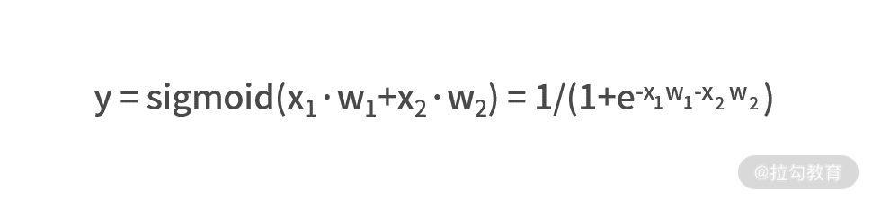
有了神经元的表达式之后，我们把图中虚线框的神经元用一个圆形的结点来进行封装，再把输出 y 写入这个结点中，这样就有了下面的表示形式。

2.层次化将“神经元”构成神经网络
我们说过，层次化地把多个神经元组织在一起，才构成了神经网络。在这里，层次化的含义是，每一层有若干个神经元结点，层与层之间通过带权重的边互相连接。如下图，就是一个简单的神经网络。

在这个神经网络中，输入变量有 3 个，分别是 x1、x2 和 x3。结点与结点之间，由带箭头的边连接，每条边都是一个权重系数 wijk。作用是将前面一个结点的输出，乘以权重系数后，输入给后面一个结点中。
这里 wijk 的含义，是第 i 层的第 j 个结点到第 i+1 层的第 k 个结点的权重。
网络中，除了最后一个结点以外，其余结点的输出都是临时结果；且每个临时结果，都将成为下一层神经元结点的输入。而最后一个结点的输出，也就是最终模型的输出 y。
对于神经网络而言，它既可以用图画的方式“画出”模型的结构，也可以通过函数化的形式写出输入和输出的关系，上图中的表达式如下。
y = y3 = sigmoid(y1w211+y2w221)
y1 = sigmoid(x1w111+x2w121+x3w131)
y2 = sigmoid(x1w112+x2w122+x3w132)
我们将 y1 和 y2 代入 y3，则有
y = sigmoid[sigmoid(x1w111+x2w121+x3w131) ·w211 + sigmoid(x1w112+x2w122+x3w132)·w221]
虽然，神经网络模型可以用函数来写出输入输出关系的表达式，但由于网络结构本身的复杂性导致这个表达式并不好看。而且随着网络层数变多、每一层结点数变多，这个表达式会变得越来越复杂。
在实际应用中，根据需要神经网络可以有任意多个层次，每层里可以有任意多个神经元，这通常是由开发者自己根据问题的复杂程度而预先设置的。
神经网络的损失函数
有了神经网络的表达式之后，我们就继续用 AI 框架的第二个公式，去写出它的损失函数。神经网络的损失函数并没有什么特殊性，在绝大多数场景下，都会选择最小二乘的平方误差作为损失函数。
这一点，与线性回归是一致的。
最小二乘损失函数计算方式，是所有样本真实值 ŷ 与预测值 y 之间差值的平方和，则有：
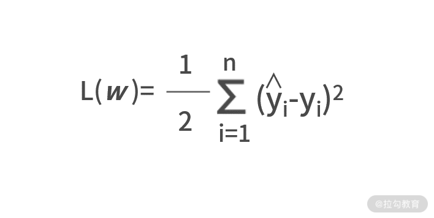
其中 n 代表的是所有的样本数。在这个损失函数中还有一个 1/2 的系数，增加一个系数会影响损失函数 L(w) 的值，但并不会影响最优系数的取值。
例如，y = 2x2+4和 y=x2+2 取得极值都是在 x=0 的点，之所以增加这个系数，是为了抵消后面平方项求导而产生的 2 倍的系数。
随机梯度下降法求解神经网络参数
最后，我们利用 AI 框架的第三个公式w*= argmin L(w)，来求解神经网络。在神经网络中，w系数就是所有的 wijk。
我们把到现在为止的所有已知条件进行整理

y = sigmoid[sigmoid(x1w111+x2w121+x3w131)·w211+sigmoid(x1w112+x2w122+x3w132)·
w221]
其中，对于某个给定的数据集而言，xi 和 ŷi 都是已知的。也就是说，我们要求解出让上面损失函数 L(w) 取得极小值的 wijk 的值，我们可以考虑用先前学的随机梯度下降法来进行求解。
在使用随机梯度下降法的时候，只会随机选择一个样本（假设标记为 m）进行梯度下降的优化。因此，损失函数的大型求和符号就可以消灭掉了，即

ym=sigmoid[sigmoid(xm1w111+xm2w121+xm3w131)·w211+sigmoid(xm1w112+xm2w122+xm3w132)·w221]
在这个例子中，我们有 8 个 wijk 变量，分别是 w111、w121、w131、w211、w112、w122、w132、w221，因此需要求分别计算损失函数关于这 8 个变量的导数。
既然表达式都有了，我们就利用大学数学求导的链式法则，耐着性子来求解一下吧。
别忘了，y=sigmoid(x) 的一阶导数是 y·(1-y)。
有了梯度之后，就可以设置学习率，再利用随机梯度下降法求解最优参数了。
神经网络建模案例
利用下面的数据集，建立一个神经网络。这个数据集中，每一行是一个样本，每一列一个变量，最后一列是真实值标签。
在利用神经网络建模时，需要预先设计网络结构。也就是说，你计划采用几层的网络，每一层准备设置多少个神经元结点。
我们看到，每个样本包含了 3 个输入变量。那么，我们可以直接采用上面推倒过的网络结构，即神经网络的结构如下所示。

同时，我们也已经推导出了损失函数关于每个链接权重边的梯度，即
由于神经网络的代码量比较多，而且有非常多的开源工具可以使用。因此，我们这里给出伪代码，来展示其核心思想。
#获取数据集x和y
x,y = getData()
#随机初始化参数w
w = init()
#设置学习率
a = 1.0
#随机梯度下降法
for _ in range(1000):
index = random.randint()
y1,y2,y3 = getResult(x,w)
g = getGrad(x,y,w)
w = w - a*g
我们对代码进行解读：
- 第 2 行，读取数据集，并保存在变量 x 和 y 中，可以考虑用 Numpy 的 array 进行保存；
- 第 5 行，随机初始化参数向量 w，因为神经网络是多层、多结点的结构，所以可以考虑用个三维数组进行保存；
- 第 8 行，设置学习率，与以前的结论一样，如果迭代轮数够多，学习率可以考虑设置小一些；
- 第 11 行开始，进行随机梯度下降法的迭代。
- 第 12 行，调用随机函数，随机获取一个数据样本。
- 第 13 行，根据网络结构，计算 y1、y2、y3 每个结点的输出，其中还需要多次调用 Sigmoid 函数，可以考虑把 Sigmoid 的计算单独函数化；
- 第 14 行，根据梯度公式计算梯度值，并保存在 g 变量中，g 和 w 应该设置一样的数据类型；
- 第 15 行，利用梯度下降法进行参数更新。
在实际工作中，如果你需要建立神经网络的模型，除了上面自己开发代码的方式外，还可以考虑使用 Tensorflow 或者 Keras 等开源的人工神经网络库。
因为这只是实现的工具，原理上并没有什么差异，故而我们不再深入展开讨论。
神经网络和深度学习
深度学习通常指训练大型深度的神经网络的过程。
- 与传统的神经网络模型相比，深度学习模型在结构上与之非常相似；
- 不同的是，深度学习模型的“深度”更大，“深度”的体现就是神经网络层数多，神经网络每一层的结点数多。
下面，我们简单介绍两种深度神经网络——卷积神经网络和循环神经网络，以及它们分别在图像处理、文本处理和语音处理上的效果。
1.卷积神经网络（CNN）
与普通神经网络相比，卷积神经网络引入了“卷积”和“池化”两个操作，下面通过详细的例子，讲解卷积神经网络在图像处理的主要思路。
彩色图像由红、绿、蓝三原色组成，每种原色按照深浅可以表示为 0 到 255 间的一个数字。因此，对于图像中的每个像素（图像中不可分割的最小单位），都可以写出其相应的红、绿、蓝数值。
所以在计算机中，一幅彩色图像可由红、绿、蓝三个颜色的像素矩阵表示出来，下图给出了一幅 128×128 像素图像的矩阵表示：

- “卷积”操作的思想 采用一个较小的卷积核，例如 3×3 的矩阵，来对图像特征进行局部的提取。这样做可以增加参数的共享，减少随着神经网络变深、结点数变多而带来的巨大计算量。
- “池化”操作的思想 采用一种过滤的方法，去除冗余信息并且加快计算。池化可以将一个 4×4 的图像切割成 4 个 2×2 的小矩阵，在每个小矩阵中取最大值，所得结果形成一个新矩阵。这种操作，可以减少神经网络结点的个数，加快计算速度。
在卷积神经网络中，通常某一个层都是在做卷积处理，某一层都是在做池化处理。一般，它们都是在层次之间交替进行的。经过多层卷积、池化操作后，所得特征图的分辨率远小于输入图像的分辨率，减少了计算量，加快了计算速度。
通过卷积和池化两项操作，卷积神经网络能在准确提取图像特征的同时，提升运算效率，因此在图像处理中取得了良好效果。
2.循环神经网络（RNN）
循环神经网络是一种善于处理序列信息的神经网络，在语音、文本处理方面有着非常大的优势。因为人类的自然语言属于一种时序信息，它有着明显的顺序关系，这就让以循环神经网络结构为基础的深度神经网络有其发挥空间。
除此之外，循环神经网络在引入 LSTM（Long Short-TermMemory）结构后，在对有用时序信息的“记忆”和没用时序信息的“忘记”上有着强大的处理能力。
下图给出了一个 LSTM 的神经元结构。

可以发现，LSTM 的网络结构和神经元结构已经非常复杂了，但它仍然保持着神经网络的那些特性。尤其是结构可被“画出”，输入、输出之间可以用函数表达。有了这些基本条件后，就仍然可以用损失函数和随机梯度下降法，来求解网络结构的参数。
小结
这一讲，我们学习了神经网络和深度学习。在当前的 AI 时代下，深度学习模型在效果方面打败了传统的浅层模型。而深度学习的基本原理都主要来自神经网络，神经网络结构可被“画出”，输入、输出之间可以用函数表达，这些特点都是支持它深度化的前提。
神经网络之所以能取得很好的效果，主要是因为网络结构的多样性。计算机在面对语音、图像、文本的不同问题时，主要是通过对网络结构进行优化迭代，设计出 CNN、RNN 的新型神经网络结构的。
此外，神经网络的损失函数和参数求解，仍然和其他浅层模型相似，并没有什么特别。
最后，我们给大家留一个练习题。假设有一个 4 层的神经网络，第一层是输入 xi，最后一层是输出 y。4 层的结点数分别是 3、2、2、1。试着去求解一下损失函数关于每个链接权重的梯度吧。
22 面试中那些坑了无数人的算法题
前面的课时，我们学习了“代数与统计”“算法与数据结构”，至今这门课程的主体知识已告一段落，下面我们进入彩蛋环节，我会向你介绍两个应用到数学的场景，第一个是求职面试，第二个是做人生规划。
这一讲，我们先聊一聊求职面试时常见的数学题。
毕业后，相信你一定参加过不少的面试吧。在求职面试的时候，即使目标工作岗位很少需要直接使用数学知识，也依然有不少面试官非常注重候选人的数学水平，而这并不是没有依据的。因为绝大多数的岗位，都需要候选人具有逻辑推理能力和解决问题的能力。而这些能力在数学上都能有所体现。
下面，我们通过三个例题，带大家体验一下面试中的数学。
例题1 抛硬币问题
假设你和大漂亮在玩抛硬币游戏。硬币的正面朝上可得 1 分，背面朝上则分数不变。如果大漂亮可以抛 51 次硬币，而你只能抛 50 次硬币，那么大漂亮分数比你高的概率是多少？
这个问题如果用计算机进行仿真求解，就会非常容易，我们给出下面的代码。
import random
dapiaoliang = 0
you = 0
win = 0
for _ in range(1000):
for _ in range(51):
if random.randint(0,1) == 1:
dapiaoliang += 1
for _ in range(50):
if random.randint(0,1) == 1:
you += 1
if dapiaoliang > you:
win += 1
dapiaoliang = 0
you = 0
print win
我们对代码进行走读：
- 第 3、4 行，分别定义两个变量来保存大漂亮和你的得分；
- 第 5 行，用 win 变量来记录大漂亮获胜的次数；
- 第 6 行开始，执行一个重复 1000 次的循环；
- 在每次的循环内部，先在第 7～9 行，通过 51 次的循环，模拟出大漂亮的得分；
- 再在第 10～12 行，通过 50 次的循环，模拟出你的得分；
- 在 13、14 行判断，如果大漂亮分数比你高，则大漂亮获胜一局。
最终，打印出大漂亮获胜的局数。我们运行代码的结果如下图。
可见，在 1000 次的游戏中，大漂亮获胜了 502 次。这样，我们可以估算出，大漂亮获胜的概率为 0.502。
【数学角度解答】
我们再从数学的角度重新计算一下这道题。在这里，我们需要通过加乘法则去拆解一下事件。假设 A 事件代表大漂亮抛 51 次硬币的得分，B 事件代表你抛 50 次硬币的得分，要计算的目标是 A 大于 B 的概率 P(A>B)。
每次抛硬币是独立的事件，独立事件共同发生的概率满足乘法法则。因此，可以把大漂亮的得分，拆解为前 50 次抛硬币的得分（M 事件）和最后一次抛硬币的得分（ N 事件）。
而其中，最后一次抛硬币，只有正面得 1 分或者背面得 0 分两种情况。
对于一个事件的两个可能的结果分支，可以通过加法法则来求概率，因此有下面的公式。
P(A>B)=P(M+N>B)= P(N=0)·P(M+0>B)+P(N=1)·P(M+1>B)= 0.5·P(M+0>B) + 0.5·P(M+1>B)
对于最后一项 P(M+1>B) 等价于 P(M≥B)。这是因为，如果 M 大于或等于 B，则 M+1 必然是大于 B 的；反过来，M 和 B 是抛硬币正面朝上的次数，所以必然是整数。如果 M+1 比 B 大，那么 M 必然会大于或等于 B。因此，有二者概率相等，即 P(M+1>B) = P(M≥B)。
我们把这个关系带入到 P(A>B) 中，则有 P(A>B)=0.5·P(M>B)+0.5·P(M>=B)
再根据加法法则，则有 P(A>B)=0.5·P(M>B)+0.5·P(M>B)+0.5·P(M=B)
别忘了，M 事件代表“大漂亮前 50 次抛硬币的得分”，而 B 事件是“你抛 50 次硬币的得分”。区别只剩下了抛硬币的人不一样。不管是谁抛硬币，正面朝上的概率始终都是1/2。所以从结果来看，这两个事件是完全等价的，
则有 P(M>B) = P(M<B)。
因此 P(A>B) = 0.5·P(M>B)+0.5·P(M<B)+0.5·P(M=B) = 0.5·[P(M>B)+P(M<B)+P(M=B)]
注意：M 和 B 的关系只有大于、小于或者等于，所以 P(M>B)+P(M<B)+P(M=B) 之和为 1。因此，可以得到结果为 P(A>B) = 0.5·[P(M>B)+P(M<B)+P(M=B)] = 0.5
这与我们用代码仿真计算的结果是一致的。
例题2 数据上溢问题
对于一个 Sigmoid 函数，y=1/(1+e-x)。假设输入的自变量 x 很小，为 -1000000。因为要先计算 e-x 的值，即 e1000000，如下图所示，直接计算就会先得到一个非常大的数字而抛出异常。那么在线上代码中，该如何规避这种情况，计算出输出值呢？
其实，这里可以用到一个非常简单的技巧，对公式做个变形就能让程序适应这种情况了。我们知道，Sigmoid 函数的结果是一个在 0~1 之间的连续值。而之所以产生数据溢出是因为要先计算e-x 的值。处理这种情况，我们可以从数学的角度，对分子和分母都乘以 ex 这一项，则有
y = 1/(1+e-x) = ex/(ex+1)。
此时，输入 x=-1000000，则需要计算 ex，得到结果为 0.0。再带入到 Sigmoid 函数中，就可以得到结果啦。
可能你还会问，对公式做了变形之后，如果 x 为很大的正数，如 1000000，岂不是又数据溢出抛异常了吗？如果 x 为很大的正数，我们直接用 Sigmoid 函数的原始形态 y=1/(1+e-x) 就可以了。
综合上面两种情况，我们可将x分正数及非正数分别计算，来避免数据的溢出。即
- 如果 x>0，则 y = 1/(1+e-x)
- 如果 x<0，则 y = ex/(1+ex)
实现的代码如下：
import math
def sigmoid(x):
if x < 0:
y = math.pow(math.e,x) / (1 + math.pow(math.e,x))
else:
y = 1 / (1 + math.pow(math.e,-x))
return y
a = -1000000
b = 1000000
print sigmoid(a)
print sigmoid(b)
我们对代码进行走读：
- 在 Sigmoid 函数的代码中，第 4 行，判断 x 和 0 的大小关系；
- 如果 x 为负数，则通过第 5 行的公式计算 y；
- 如果 x 不是负数，则通过第 7 行的公式来计算 y。
我们在主函数中，分别输入了非常小和非常大的两个数字，并顺利得到结果分别为 0.0 和 1.0，如下图所示。
例题3 投点距离期望问题
假设在墙上有一个半径为 10 厘米的圆形区域，现在大迷糊用飞镖向这个圆形区域进行均匀随机的投射。假设大迷糊不会“脱靶”，求大迷糊扎到的点到圆形区域圆心距离的期望。
这个题用代码仿真会非常容易，我们给出下面的代码。
import random
import math
inCircle = 0
distance = 0.0
for _ in range(1000):
x = 1.0 * random.randint(0,1000) / 100
y = 1.0 * random.randint(0,1000) / 100
if x * x + y * y > 100:
continue
else:
inCircle += 1
distance += math.sqrt(x * x + y * y)
print distance / inCircle
我们对代码进行走读：
- 第 4 行，保存合法的投射次数变量；
- 第 5 行，是累计的距离之和变量；
- 第 6 行，通过 for 循环执行多次的投射动作；
- 每次投射，第 7 行和第 8 行，随机地生成投射点的坐标变量 x 和 y（在这里，我们精确到小数点后两位）；
- 第 9 行，如果坐标点的平方和超过 100，也就是投射点在 10 厘米的圆形之外；
- 那么第 10 行，执行 continue，继续下一轮循环；
- 否则，说明投射点在圆内，执行第 11 行的代码；
- 第 12 行，合法投射次数加 1；
- 第 13 行，通过本次投射点到圆心的距离，更新累计的距离之和；
- 最后第 14 行，打印累计距离和合法投射次数的比值，得到了平均距离。
这也是投射点到圆心距离的期望，我们运行代码的结果为 6.66 厘米，如下图所示。

接下来，我们再从数学的角度来计算一下这个题目。
【数学角度解答】
题目中，要求解的是一个点到圆心距离这个随机变量的期望。很显然，点到圆心的距离是个连续值。要求某个连续型随机变量的期望，可以用期望的定义式来计算，即
所以，当你在工作中遇到“某连续型变量的期望”时，它一定可以写成上面的积分形式，这是定义式，也是公理。
在我们这个问题中，随机变量 x 是点到圆心的距离。由于投射点不可以在圆形以外，所以这个距离的取值范围是 0～10。因此，我们可以把上面的公式改写为
那么问题来了，这里的概率密度函数 f(x) 的表达式是什么呢？别忘了，概率论告诉我们，概率密度函数是概率分布函数的导数。
我们不妨试着求一下投射问题的概率分布函数。假设在圆内有一个小圆，半径是 x0。那么投射点恰好也在小圆内的概率为 P(x<x0) = π·x02/π·102 = x02/102。
因此，概率分布函数为 F(x) = x2/102；又因为，概率密度函数是概率分布函数的导数，所以概率密度函数为 f(x) = 2x/102。
我们把这些条件都带入到期望的公式中，则有
这与我们用代码求解的 6.66 厘米是一致的。
小结
我们对这一讲进行总结。这一课时的内容是面试中的数学，面试官会通过一个简单的数学题，考察候选人解决问题的思考路径。
数学题的魅力就在于活学活用，你很难遇到同一道题，所以靠死记硬背是不行的。只有深入理解数学原理，才能做到在面试的数学考察中游刃有余。在备考的时候，应该注意在基本功方面多花时间去做到深入理解。对于每个知识点的适用范围，来龙去脉做到掌握。
如果你遇到了一个让你束手无策的题目，不妨试着从下面两个角度寻找突破口。
- 第一个角度，从问题出发去寻找突破口。
例如，本课时的投点距离期望问题。这个题目要计算的是连续型随机变量的期望，那么它一定可以用连续型随机变量期望的定义式表示。接下来，问题就变成了对这个定义式的未知量进行计算求解。
- 第二个角度，从已知条件出发去寻找突破口。
例如，在抛硬币问题中，已知条件是大漂亮抛了 51 次，你抛了 50 次。抛 51 次，可以拆分为抛 50 次和抛 1 次。这样，我们就得到了大漂亮抛 50 次和你抛 50 次，这样等价的两个事件。基于这两个事件，就能推导出大漂亮得分比你高的概率。
这些寻找突破口的方法，是候选人解决问题能力的集中体现；也是数学题、算法题千变万化后，唯一不变的规律。
23 站在生活的十字路口，如何用数学抉择？
人的一生需要面临很多重大的选择和决策，举例而言：
- 大漂亮毕业一年后遇到了一个小伙靠谱哥；面对靠谱哥的追求，大漂亮是应该接受还是拒绝？
- 大迷糊工作 3 年，猎头推荐给他一个不错的工作机会，面对年薪 30% 的涨幅，大迷糊是接受 offer 还是拒绝 offer？
除了这些重大决策以外，我们生活中也需要做一些小的决策。
- 例如，点外卖时遇到满 30 元减 8 元，是强迫自己多消费到 30 元，还是只买自己所需的物品？
- 打德州扑克的时候，面对对手的加注，是跟注还是弃牌？
其实，当你面对这些选择时，完全可以利用数学知识来做出更合理的决策。这一讲的彩蛋，我们就围绕其中的几个场景，试着从数学的角度来进行解析。
放弃还是继续，如何选择最优？
人生充满了不确定性。在面临不确定性的时候，我们经常会面临下面的选择：是珍惜眼前，还是寄希望于未来？
举个例子，大漂亮是个各方面条件都很不错的女孩子。工作之后，她遇到一个男生靠谱哥，靠谱哥身上有优点，也有缺点，但综合来看，确实是个靠谱的年轻人。
那么，大漂亮是应该放弃靠谱哥，期待以后能遇到更优秀的男生；还是珍惜眼前，接受聪明哥的爱意，继续这段姻缘呢？
这就是一个在不确定性环境中，需要做出最优决策的问题。在这里，大漂亮面对的不确定性环境是，拒绝靠谱哥后还能不能遇到更优秀的男生。
人生的魅力就在于未来，而未来的特点就是不确定，人生中诸如此类的选择还有很多。而我们的数学家们，对这一类问题进行了抽象，总结出了经典的最优停止问题。
【最优停止问题】
最优停止问题有很多中描述方式，我们以“聘请秘书”为例来描述。
假设大聪明要聘请一名秘书，现在有 n 人来面试，其中 n 是已知的，每个候选人的能力有量化的得分。现在，这些候选人被按照随机的顺序进行面试，大聪明每次只能面试一个候选人，查看该候选人的能力得分，并需要立即决定是否聘用该候选人。
如果决定不聘用该候选人，这个候选人便不会再回来；如果决定聘用该候选人，后续的候选人就没有面试的机会了。
问：大聪明用怎样的策略，才能让他有更高的概率选到能力得分最高的候选人？
顾名思义，最优停止问题，就是面对一个又一个的输入样本，去选择一个最好的停止时刻。它有以下几个特点。
- 第一，候选人只能一个接一个地面试，不能同时参加面试；
- 第二，面试官大聪明能且只能选择聘用 1 个候选人；
- 第三，面试当场，大聪明就需要做出聘用与否的决策，不能“骑驴找马”地选择待定。
接下来，我们就来通过数学的方式去计算出最优的策略。
其实，最优停止问题的答案很简单；有时候，也被人简称为“三七法则”。具体而言，是对前 m 个候选人，不论多么优秀，都拒绝聘用。接着，从第 m+1 个人开始，如果遇到了一个比先前所有面试者都优秀的候选人，那么就聘请这个人。

流程上如上图所示，而之所以被称为“三七法则”，是因为当 m/n 等于 37% 时，选到能力得分最高的候选人的概率是最大的，而且这个选中最优候选人的最大的概率也恰好是 0.37。
【代码实现】
我们先试着用代码仿真一下上面的结论。我们假设候选人的人数 n 为 100，每个候选人都有一个能力得分，取值为 0 到 1 之间的小数，则代码如下：
import random
import numpy as np
t = 0
f = 0
for i in range(1000):
a = np.random.random((100,1))
all_max = max(a)
get = 0
m_max = max(a[0:37])
for k in range(37,100):
if a[k] > m_max:
get = a[k]
break
if get == all_max:
t += 1
else:
f += 1
print "true: " + str(t)
print "false: " + str(f)
print "percentage: " + str(100.0*t/(t+f))
我们对代码进行走读：
- 第 4 行和第 5 行，分别定义两个变量，用来存放找到最优候选人的次数和没有找到最优候选人的次数；
- 第 6 行开始，执行一个 1000 次的循环；
- 在每次的循环中，第 7 行，调用随机函数生成一个 100 维的数组 a，数组 a 中的每个元素，都是 0 到 1 之间的小数，代表候选人的能力得分；
- 第 8 行，调用 max 函数，保存好数组 a 中的最大值，也就是能力最高的候选人的能力得分；
- 第 9 行，定义 get 变量，用来保存用“三七法则”找到的候选人的能力得分；
- 第 10 行，再调用 max 函数，计算出前 37% 的候选人的能力最大值；
- 第 11 行开始，对 a 数组的 37% 位置之后的元素，开始执行 for 循环；
- 第 12 行，判断循环过程中的元素，是否比前 37% 个元素的最大值还要大；
- 如果是，则执行第 13 行，找到“三七法则”的输出结果，并跳出循环；
- 接着，第 15 行，判断“三七法则”找到的最大值，和a数组全局视角的最大值是否相等；
- 如果是，则第 16 行的 t 变量加 1；
- 否则，则第 18 行的 f 变量加 1；
- 最后，第 19～21 行，打印 1000 次循环的结果。
我们运行代码的结果如下图所示。在 1000 次的试验中，采用“三七法则”找到最大值的次数有 376 次，没有找到最大值有 624 次。综合来看，找到最大值的概率是 37.6%，这远比我们随机去猜（100 个样本选最优，1% 的选中概率）要好得多。

这里我们通过代码仿真，已经模拟并验证了“三七法则”这一结论；而关于“三七法则”的数学推导，则需要用到调和级数等高等数学的知识，感兴趣的同学可以自己去查阅一些资料来补充学习。
【婚恋中的“三七法则”】
在这里，我们给出一些基于“三七法则”的实战建议。老话说，“枪打出头鸟”“万事开头难”，这些话在“三七法则”面前还是有一定道理的。
如果最优秀的候选人出现在了前 37% 个样本中，那么无论如何他都是不会被选中的；反过来，躲在最后也不是最好的选择。这是因为，如果最优秀的候选人躲在最后才去参加竞争，很可能被第二优秀或者第三优秀的人，捷足先登抢到了机会。
我们回到最开始大漂亮和靠谱哥的故事中，试着用“三七法则”给大漂亮一些建议。我们假设女孩子会在 18～30 岁结婚。那么，这个年龄段的前 37% 的时间内，不论遇到谁、不论他多么优秀，大漂亮都不应该去考虑结婚。
而此阶段的终止年龄是 18+(30-18)×0.37=22.44 岁，也就是大漂亮到了 22.44 岁后，如果她遇到了一个比先前所有遇到的人都优秀的男孩子，那么她应该去考虑与这个男孩子相处并结婚。所以，决定大漂亮是否要接受靠谱哥有两个条件，分别是：
- 大漂亮的年龄是否到达了 22.44 岁；
- 靠谱哥是否比大漂亮之前遇到过的人都优秀。
在《王牌对王牌》的一期节目中，韩雪喊出的青春告白，就是“三七法则”的道理。虽然她的表述不完全正确，但她还是准确地提到了 22.44 岁。看来，这背后定有数学高人在指导韩雪和节目组啊。
当然啦，你可能认为人在大学四年的时期都过于幼稚迷茫，并不是好的择偶期，那你可以将时间定义为 22～30 岁，那么对应的 37% 就是 25 岁，也刚好是毕业三年后，职场新人蜕变的时期，希望你可以在这时事业、爱情双丰收。
又聊回了“职场话题”，我们看看大漂亮的学长“大迷糊”的职业发展情况吧。
涨薪 30%，跳槽吗？
很多人，尤其是那些不愁 offer 的优秀的人，常常会纠结要不要跳槽。其实，这也可以用数学去进行一些计算，来辅助做出一些决策的。
我们先把所有可能影响跳槽的因素列出来。在这里，我大致总结出以下几个关键因素：薪酬、职级、个人能力成长空间、适应成本、与领导的信任关系、公司发展前景。接着，我们需要对比出新旧两份工作在这些因素上的得失。如果总得比总失多，就可以考虑跳槽；如果总得比总失少，得不偿失，就不应该跳槽。
下面给你一个关于跳槽涨薪的案例。大迷糊是一线互联网公司的工程师，他的薪酬在所在职级中是中等偏上的水平。由于多年的刻苦努力工作，大迷糊在公司中与领导的信任关系很好。下半年，因为公司高管调整，大迷糊的主管被调整到其他部门。随之而来的，是一个毫不认识的新主管。
在同年 11 月，大迷糊拿到了另一个超一线互联网公司的工程师 offer，获得了 30% 的薪酬涨幅，职级也相应提高了一级。对方要求大迷糊在 11 月内做出决策，是否接受 offer 并入职。
【现在是否应该跳槽？】
我们来帮大迷糊计算一下得失吧，以“新 offer”代表新机会，以“旧公司”代表当前的公司。
- 首先，算一下薪酬
在 11 月内跳槽，意味着失去了旧公司当年的年终奖，这是“失”。我们假设年终奖是 3 个月，大迷糊在旧公司的月薪是 a 元，那么总“失”为 L=3a；
新的 offer 年薪上有 30% 的涨幅，但 11 月入职的员工，却不会被新公司普调覆盖，而旧公司的普调平均值是 8%。那么大迷糊未来一年内的总“得”，为 G=(30%-8%)a×(12+3)=3.3a。
这样，总“得”和总“失”的差值为 G-L=0.3a>0。
- 其次，再计算一下职级
新的 offer 涨了一级，这是“得”；然而，旧公司次年也有晋升机会，大迷糊是骨干，我们假设大他在旧公司的晋升概率为 0.7，这显然就是潜在的“失”。
那么在职级这里的总“得”和总“失”的差值，为 G-L=1-0.7×1=0.3级 > 0
- 接着，个人能力成长空间
我们假设这一项是差不多的，毕竟在一线互联网公司中，工程师还是比较吃香的。
- 下一个，适应成本
大迷糊是旧公司的老员工，对于公司的制度文化、工作环境、同事相处，都必然会更适应，这里没有“得”，因为不跳槽并不会让自己的适应性增强。
然而，到了新公司后，新的工作环境、全新的同事、新公司的文化氛围，都是需要一定的时间来适应。这样看，适应成本就由适应期时间长短决定了。
因为适应期必然大于零，所以这里一定会有“失”，即 G-L<0。
- 再下一个，与领导的信任关系
很多人会说，旧公司因为高管调整，空降了一个新的主管。这对阿强来说并不是个好消息。然而问题就在于，跳槽也是无法解决这个矛盾的。大迷糊去了一个新的公司，仍然要与一个不认识的领导，要去重新相处，去建立新的信任关系。
所以说，在这个维度上，没有“得”，也没有“失”，即 G-L=0。
- 最后，公司发展前景
大迷糊由一线公司，跳槽到超一线公司，公司前景必然是更广阔了。然而，公司的前景和个人的回报之间，很难有明确、量化的兑换关系，这里的得和失很难被计算了。
明确的是，得大于失，G-L>0。
好了，我们把以上所有的因素总结在下面的表格里，来帮助大迷糊做最后的抉择。
|
 根据这个表格，我们能发现，任何一个维度都不支持大迷糊做出跳槽的动作。所以，大迷糊更好的选择是，拒绝 offer，继续在旧公司工作。
根据这个表格，我们能发现，任何一个维度都不支持大迷糊做出跳槽的动作。所以，大迷糊更好的选择是，拒绝 offer，继续在旧公司工作。
【跳槽合适的时机？】
那么，什么时候大迷糊才能跳槽呢？我们把上面的环境稍稍改动就会得到不一样的结果。假设，新 offer 的时间并不是 11 月，而是次年的 4 月份，此时改变的因素有二：
- 第一，大迷糊已经收到了年终奖，或者旧公司经营惨淡，年终奖几乎为 0；
- 第二，大迷糊已经参加了旧公司的晋升，并且晋升失败。
那么上面的表格就要做出下面红色部分的修正。在薪酬和职级上，原本的损失都没了。得失关系，也由原来的“大得大失”变成了“大得无失”。此时的环境，就足够支撑大迷糊去做出跳槽的抉择了。

最后，我们为跳槽的决策做一些实战性总结。跳槽时，一定要算清楚、想明白“得”和“失”。在考虑跳槽时机的时候，一定要尽量让结果是增加自己的“得”，降低自己的“失”，充分考虑清楚，千万不能因为一时冲动而做出“小得大失”的决定。那样，最终吃亏的还是自己。
另外，在薪酬和职级这两个维度上，通常在上半年的 3～4 月是“失”最小的时间。这是因为，你已经拿到了上一年的年终奖，且绝大多数的互联网公司的晋升和普调都是在这个时间点上。这样，不管是钱还是级，你的损失都已经降到了最低。这也是找工作中常说的“金三银四”背后的道理。
当然了，如果你决定跳槽，也一定要在拉勾网这样的大平台上去多多寻找机会。大平台有更多一线以上公司的招聘机会，所以你在公司发展前景这个维度上，会有更多收益。
小结
人生的魅力来自未来的不确定性。也是因此，人们常常需要在不确定性的环境中，做出选择。在做抉择时，一个通用的思路是计算得失。你所有的决策依据，都应该是尽可能降低自己的“失”，而谋求更多的“得”。
与此同时，有了数学武器，不代表你能做出最完美的选择。这是因为，在人生的不确定性中，总有你计算之外的不确定因素。因此，在做抉择时，你还需要调整好心态，做到“不以物喜，不以己悲”。只要你计算的过程是正确的，就不需要因为一时的得失而气馁。
因为，只要你坚持这样的思考方式，长期统计看，收益一定是更可观的。相信无论哪个决定，只要你脚踏实地，深耕你的专业，热爱你的生活，你一定会有意外之喜。
24 结束语 数学底子好，学啥都快
学到了最后，不知道你有没有思考过这样的问题：数学究竟意味着什么？
在回答这个问题之前，我们先看几个跟数学有关的案例或桥段。
美剧《危机边缘》第三季的第三集
一个年轻男子在邮筒上放置了一支笔，紧接着发生了一系列的连锁案件。先是笔掉在地上，导致一个老人去弯腰捡拾；接着，骑车而过的路人撞倒了老人，导致一群人围观；最后，围观群众过多，让公交车司机没注意红绿灯变化，导致撞死了一个手捧鲜花的女子。原来，这个年轻男子是个智商极高的人，通过各种精准的计算，对事情有了准确预判，完成了自己的杀人计划。
电影《决胜 21 点》
几个数学高才生，利用假期时间，在赌城拉斯维加斯，玩他们再熟悉不过的“21点”，最终狂赢三百多万的美金。他们靠记住扑克牌的分布状况推算获胜概率，并调整自己的下注策略，谋求统计上收益期望最大的策略。
综艺节目《相声有新人》
有一对博士夫妻尝试在相声中加入数学公式元素。他们认为，人类的情感可以被公式化计算，并进一步利用这些公式创作出让人产生情感共鸣的相声。虽然他们的相声并没有让我发笑，但这的确算得上是数学与相声融合的大胆尝试。
生活中的我们，总是面临各种各样的选择。
- 我现在非常饿、要吃饭，是选择去可能会排队很久的网红店，还是选择去吃快速便利的麦当劳？
- 今天有一些阴天，是保守地在书包里背着一把雨伞，还是激进点，不带伞轻装出行？
- 等公交时来了一个不太顺路的车，是选择先上车，还是继续等待着那趟更顺路的车？
面对人生中的选择，你一定要尽可能避免用抛硬币的方式来决策人生。相反，你需要具备做出更合理的决策的能力。
- 例如，你根据过往数据计算出网红店高峰排队的时间期望是 20 分钟，而麦当劳只需要 3 分钟就能完成汉堡包的出餐，那么去麦当劳吃饭也许是个更好的选择。
- 又如，你根据所在城市的历史天气状况数据计算发现，阴天条件下产生降水的概率 P(降水|阴天) 只有 0.05，那么激进一点，不带伞也许是个更好的选择。
- 再比如，你计算出不太顺路的公交车会让你多花费 10 分钟的出行时间，而“顺路车”平均 3 分钟就会来一趟，那么继续等待更顺路的车也许是个更好的选择。
你有没有发现，利用收集到的数据做一些数学计算之后，往往会让你做出的决策更合理。反过来说，有了数学的武器之后，意味着人生做出的选择会更合理。
解决问题的通用框架——形式化定义和最优化求解
我在专栏的《05 | 求极值：如何找到复杂业务的最优解？》和《07 | 线性回归：如何在离散点中寻找数据规律？》中反复提到过一个解决问题的通用框架，那就是形式化定义和最优化求解。
当你遇到一个问题时，不妨试着用一个带参数的函数，来形式化定义这个问题；接着，通过各种各样求极值的办法，求解这个函数的最优值。
通过这两个步骤，你遇到的问题就能迎刃而解。
对于这两个步骤而言，第二步最优化求解就是求函数极大值/极小值的问题，如果你还会了梯度下降法，你就能找到绝大多数的函数的极值。
而问题的关键就是第一步，如何形式化定义一个问题。
【形式化定义】
在很多人眼中，事物是不可被计算的。例如，“我无法计算出他人的内心世界”“我无法计算出下一张扑克牌的花色是什么”“我无法在事前计算出足球比赛的结果”。然而，在数学家的眼中，数学家宁愿相信一切都是可以被计算的。也许，根据 TA 与你在微信上互动的频次、TA 每天说话提到你的次数等数据，就能计算出 TA 对你的好感度。
也许，可以根据已经翻出来的几张扑克牌的花色分布，就能计算出下一张扑克牌更可能的花色是什么。也许，根据两队历史交锋结果、比赛当时的主客场因素、球队主力伤病情况等因素，就能计算出主队获胜的概率。因此，只要你相信数学，你就能让更多的问题可被形式化定义。
学生时代，你一定听过这样的几句话，“学好数理化，走遍全天下”。在我的中学时代中，也有老师说过，“物理和化学的本质是数学”；在成为一名程序员之后，也听说过“一流的程序员靠数学”的说法。
那么，为什么这些不同的学科都指向了数学呢？
这与解决问题的通用框架有关。理工类的学科，研究的是实际日常生活中的问题。如果你是一个善于运用数学思想的人，那么你一定可以让更多的问题被形式化定义出来，再用一个数学的最优化求解算法，来找到问题的答案。
也就是说，一个实际的日常生活中的问题，会被你用数学的思想来解决。有了这个本事之后，在你的眼中，不论是物理问题、化学问题、通信问题，或者是编程问题，都将会变成数学问题。那么，只要你的数学能力够强、底子够好，你就可能做到学啥都快，干啥都游刃有余。
专栏回顾
这门专栏马上就要和大家说再见了，你还记得我们与大聪明、大迷糊、大漂亮学了哪些趣味数学吗？我们一起回顾一下吧。

- 在公瑾的算账定律中，我们用数学计算“你”与大聪明、大漂亮、大迷糊在麻将桌上的得失。
- 之后，我们又在“双十一剁手算钱”和“万有引力看人缘”的故事中，了解了数学偷藏在生活和万物中的奇妙。
- 再之后，又用转化漏洞分析法点醒了大漂亮，提升成绩的关键；还用数学，教大迷糊如何应对公务员考试中的行测题。最重要的是，让你也明白了做事高效的奥秘；
之后，我们又加深了难度，一路升级打怪。
- 白话理解“极大似然估计”“线性回归”“数学归纳法”，解决了让你学生时代头疼数年的隐讳、模糊的数学概念。
- 而后，我们又带着概率论滤镜观看足球赛，用信息熵计算出“阿根廷队 vs 葡萄牙队”的结果不确定性。
- 还帮助大迷糊计算灰度实验的收益和可靠性；用动态规划为大聪明找出最优回家路线。
- 寓教于乐，我们还在“汉诺塔游戏”和“多米诺骨牌”中通晓了“递归”和“归纳”的本质；
- 最后，又通过三个数学公式，以小见大，认识了 AI 的最简骨架。
你还记得它们出现在哪些课时吗？同学们，可以根据课时大纲回顾以上内容。
数学底子好，学啥都快
可能你会发现，这门以数学为主题的专栏，总是带着你算，算概率、算得失、算方案、算金钱，甚至算婚恋，仿佛真的可以用数学预测未来，掌握命运。
但实际上，生活更像是《阿甘正传》所言，“就像一盒巧克力，你永远不知道下一颗是什么味道”。确实，就算是神算子，也无法用数学算出自己的命运和未来。
但即使你不能像大聪明一样，从小聪明到大，但你却可以脚踏实地，深耕自己的专业，创造一个未来：
- 就像是从小都迷迷糊糊的大迷糊，小时候成绩不好，毕业了也没考上公务员，但却成了一名抢手的程序员，升职加薪；
- 也像是从小超级刻苦的大漂亮，小学时无论如何用功，成绩也不见提升，但长大了却成为优秀的前端工程师，遇到靠谱哥，收获幸福。
学数学只是一个缩影，他们更是在数学中得到了探索和成长，虽然没有用数学预测出未来，却借助数学创造了一个未来。
最后，希望数学能够强健你的思维，丰盈你的大脑，让你有一个智慧并勇于拼搏的人生。